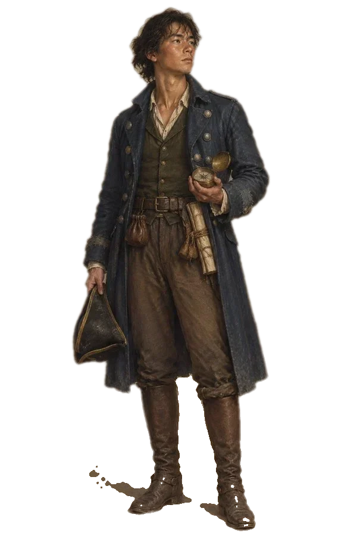

<!doctype html>
<html lang="zh-CN">
<head>
<meta charset="utf-8">
<meta name="viewport" content="width=device-width, initial-scale=1, viewport-fit=cover">
<script src="config.js"></script>
<script>
// Standalone build: outside Claude there is no window.claude, so the game's
// sample() goes through a small proxy (see worker.js) that holds the API key.
(() => {
  if (window.claude) return;
  const PROXY = (window.BP_PROXY || "").replace(/\/$/, "");
  const MODEL = { quick: "claude-haiku-5-5", default: "claude-sonnet-5-5" };
  const fail = (code, msg) => Object.assign(new Error(msg || code), { code });

  async function sample(prompt, opts = {}) {
    const messages = typeof prompt === "string" ? [{ role: "user", content: prompt }] : prompt;
    let res;
    try {
      res = await fetch(PROXY + "/v1/messages", {
        method: "POST",
        headers: { "content-type": "application/json" },
        signal: opts.signal,
        body: JSON.stringify({
          model: opts.modelTier === "quick" ? MODEL.quick : MODEL.default,
          max_tokens: 4096,
          stream: true,
          messages,
        }),
      });
    } catch (e) {
      if (e.name === "AbortError") throw e;
      throw fail("network", "连不上 AI 服务");
    }
    if (res.status === 429) throw fail("rate_limited");
    if (!res.ok) throw fail("upstream", "AI 服务出错 " + res.status);

    const reader = res.body.getReader(), dec = new TextDecoder();
    let buf = "", text = "";
    for (;;) {
      const { value, done } = await reader.read();
      if (done) break;
      buf += dec.decode(value, { stream: true });
      let i;
      while ((i = buf.indexOf("\n")) >= 0) {
        const line = buf.slice(0, i).trim(); buf = buf.slice(i + 1);
        if (!line.startsWith("data:")) continue;
        let ev; try { ev = JSON.parse(line.slice(5)); } catch { continue; }
        if (ev.type === "content_block_delta" && ev.delta?.type === "text_delta") {
          text += ev.delta.text;
          opts.onText?.({ text });
        } else if (ev.type === "error") {
          throw fail(ev.error?.type === "rate_limit_error" ? "rate_limited" : "upstream", ev.error?.message);
        }
      }
    }
    return { text };
  }

  window.claude = { use: async (name) => (name === "sample" && PROXY ? sample : null) };
})();
</script>
<title>黑珍珠海域</title>
<meta name="claude:viewport-fit-sides" content="cover">
<link rel="preconnect" href="https://fonts.googleapis.com">
<link rel="stylesheet" href="https://fonts.googleapis.com/css2?family=Noto+Serif+SC:wght@400;600;700;900&family=Noto+Sans+SC:wght@400;500;700&family=Outfit:wght@400;500;600&family=Cinzel:wght@600;800&display=swap">
<style>
/* Layout: two modes like Craft — PLAY (full-bleed art, story cards in a centered column, top HUD, right icon rail with a docked side panel)
   and WORKSPACE (top bar, left place rail, center place view, right AI assistant). Committed dark theme. */
:root{
  --bg:#0e0e10; --panel:#151517; --panel-2:#1b1b1e; --card:rgba(20,20,22,.82); --card-solid:#18181b;
  --line:rgba(255,255,255,.08); --line-2:rgba(255,255,255,.15);
  --ink:#ecebe8; --ink-2:#b4b2ad; --mute:#7e7c78;
  --accent:#6d63f5; --accent-2:#8b80ff; --folder:#8f86ff; --gold:#d9b46a; --red:#d95b52; --green:#57c06a; --amber:#e3a33b; --sea:#64b5cc;
  --f-ui:"Outfit","Noto Sans SC","PingFang SC","Microsoft YaHei",system-ui,sans-serif;
  --f-story:"Noto Serif SC","Songti SC",Georgia,serif;
  --f-deco:"Cinzel","Noto Serif SC",serif;
  --f-mono:ui-monospace,"SF Mono",Menlo,monospace;
  color-scheme:dark;
}
*{box-sizing:border-box}
html,body{height:100%}
body{margin:0;background:var(--bg);color:var(--ink);font-family:var(--f-ui);font-size:13.5px;line-height:1.55;overflow:hidden;-webkit-font-smoothing:antialiased}
body::before{content:"";position:fixed;inset:0 0 auto;height:env(safe-area-inset-top,0px);z-index:90;background:var(--bg)}
h1,h2,h3,h4{margin:0;text-wrap:balance;font-weight:600}
p{margin:0}
button{font:inherit;color:inherit;background:none;border:0;padding:0;cursor:pointer}
button:disabled{cursor:not-allowed;opacity:.45}
button:focus-visible,input:focus-visible,textarea:focus-visible,select:focus-visible{outline:2px solid var(--accent-2);outline-offset:2px}
input,textarea,select{font:inherit;color:inherit}
svg.i{width:16px;height:16px;stroke:currentColor;fill:none;stroke-width:1.6;stroke-linecap:round;stroke-linejoin:round;flex:none}
::-webkit-scrollbar{width:6px;height:6px}::-webkit-scrollbar-thumb{background:rgba(255,255,255,.14);border-radius:3px}::-webkit-scrollbar-track{background:transparent}
.ent{color:inherit;text-decoration:underline;text-decoration-color:rgba(255,255,255,.25);text-underline-offset:3px;cursor:pointer}
.ent:hover{text-decoration-color:var(--accent-2)}
.mono{font-family:var(--f-mono)}

/* ================= PLAY ================= */
#play{position:fixed;inset:0;display:flex;padding-top:env(safe-area-inset-top,0px)}
.stage{position:relative;flex:1;min-width:0;overflow:hidden}
.art{position:absolute;inset:-30px;background:#0e0e10 center/cover no-repeat;filter:saturate(.9);transition:background-image .8s,filter .6s}
.stage.chat .art{filter:blur(14px) saturate(.75) brightness(.8)}
.art::after{content:"";position:absolute;inset:0;background:linear-gradient(180deg,rgba(10,10,12,.5),rgba(10,10,12,.68) 40%,rgba(10,10,12,.88))}
.stage.reading .art::after{background:rgba(10,10,12,.86)}
.hud-btn{width:34px;height:34px;border-radius:50%;display:grid;place-items:center;background:rgba(18,18,20,.7);border:1px solid var(--line);color:var(--ink);backdrop-filter:blur(8px)}
.hud-btn:hover{background:rgba(30,30,34,.9)}
#menuBtn{position:absolute;z-index:6;top:12px;left:max(12px,env(safe-area-inset-left,0px))}
.menu{position:absolute;z-index:30;top:52px;left:max(12px,env(safe-area-inset-left,0px));width:220px;background:#1a1a1d;border:1px solid var(--line-2);border-radius:12px;padding:6px;box-shadow:0 16px 40px rgba(0,0,0,.5)}
.menu button{display:flex;align-items:center;gap:10px;width:100%;padding:8px 10px;border-radius:8px;font-size:13px;text-align:left}
.menu button:hover{background:rgba(255,255,255,.06)}
.menu button kbd{margin-left:auto;font-family:var(--f-ui);font-size:11px;color:var(--mute)}
.menu hr{border:0;border-top:1px solid var(--line);margin:4px 0}
.ach{position:absolute;z-index:6;top:12px;left:50%;transform:translateX(-50%);text-align:center}
.ach-pill{display:block;padding:4px 14px;border-radius:999px;background:rgba(18,18,20,.72);border:1px solid var(--line);backdrop-filter:blur(8px)}
.ach-pill small{display:block;font-size:9.5px;letter-spacing:.18em;color:var(--ink-2)}
.ach-pill b{font-size:13px;font-weight:500;font-variant-numeric:tabular-nums}
.ach .dots{display:flex;gap:4px;justify-content:center;margin-top:5px}
.ach .dots i{width:4px;height:4px;border-radius:2px;background:rgba(255,255,255,.35)}
.ach .dots i.on{width:12px;background:#fff}
.ach-pop{position:absolute;top:58px;left:50%;transform:translateX(-50%);width:min(380px,calc(100vw - 32px));background:#1a1a1d;border:1px solid var(--line-2);border-radius:12px;padding:10px 12px;text-align:left;box-shadow:0 16px 40px rgba(0,0,0,.5)}
.ach-pop .hd{display:flex;align-items:center;justify-content:space-between;font-size:12px;color:var(--ink-2);margin-bottom:8px}
.trk{margin-bottom:9px;font-size:12.5px}
.trk .r{display:flex;justify-content:space-between}
.trk .r b{font-family:var(--f-mono);font-weight:400;font-size:12px;color:var(--ink-2)}
.trk .t{height:4px;border-radius:2px;background:rgba(255,255,255,.08);margin-top:4px;overflow:hidden}
.trk .t i{display:block;height:100%;background:var(--ink-2)}
.minimap{position:absolute;z-index:6;top:12px;right:62px;width:178px;height:106px;border-radius:10px;overflow:hidden;border:1px solid var(--line-2);background:#0b1418 center/cover;box-shadow:0 8px 24px rgba(0,0,0,.45)}
.minimap img{width:100%;height:100%;object-fit:cover;display:block}
.minimap .lbl{position:absolute;right:6px;bottom:6px;font-size:10.5px;background:rgba(0,0,0,.7);padding:1px 6px;border-radius:4px}
.pin{position:absolute;transform:translate(-50%,-50%)}
.pin i{display:block;width:7px;height:7px;border-radius:50%;background:#fff;box-shadow:0 0 0 2px rgba(0,0,0,.4)}
.pin.you i{width:16px;height:16px;border:2px solid #fff;background:var(--accent) center/cover;box-shadow:0 0 0 3px rgba(109,99,245,.35)}
.rail-r{position:absolute;z-index:6;top:12px;right:max(12px,env(safe-area-inset-right,0px));display:flex;flex-direction:column;gap:6px;padding:4px;border-radius:22px;background:rgba(18,18,20,.72);border:1px solid var(--line);backdrop-filter:blur(8px)}
.rail-r button{position:relative;width:30px;height:30px;border-radius:50%;display:grid;place-items:center;color:var(--ink-2)}
.rail-r button:hover,.rail-r button[aria-pressed="true"]{color:var(--ink);background:rgba(255,255,255,.1)}
.rail-r .av{width:24px;height:24px;border-radius:50%;overflow:hidden;background:#333;display:grid;place-items:center;font-size:11px;color:var(--gold);border:1px solid var(--line-2)}
.rail-r .badge{position:absolute;top:-2px;right:-3px;min-width:15px;height:15px;border-radius:8px;background:var(--accent);color:#fff;font-size:9.5px;display:grid;place-items:center;padding:0 3px}
.story{position:absolute;inset:0;z-index:2;overflow-y:auto;padding:70px 64px 200px}
.story-in{width:min(640px,100%);margin:0 auto;display:flex;flex-direction:column;gap:12px;padding-bottom:12px}
.logo{display:flex;flex-direction:column;align-items:center;padding:12vh 0 6vh;text-align:center}
.logo svg{width:min(420px,90%);height:auto}
.logo .sub{font-family:var(--f-story);letter-spacing:.5em;color:#d9d3c6;font-size:14px;margin-top:6px;opacity:.8}
.readback{align-self:center;display:flex;align-items:center;gap:6px;font-size:11.5px;color:var(--ink-2);padding:4px 12px;border-radius:999px;background:rgba(18,18,20,.6);border:1px solid var(--line)}
.begin{align-self:center;text-align:center;padding:14px 26px;border-radius:12px;background:var(--card);border:1px solid var(--line)}
.begin small{display:block;font-size:10px;letter-spacing:.24em;color:var(--mute)}
.begin b{display:block;font-family:var(--f-story);font-size:20px;font-weight:600;margin-top:2px}
.arrival{align-self:center;text-align:center;margin:8px 0}
.arrival small{display:block;font-size:10px;letter-spacing:.24em;color:var(--mute)}
.arrival b{display:block;font-family:var(--f-story);font-size:17px;font-weight:600;margin:3px 0}
.arrival span{font-size:12px;color:var(--ink-2)}
.msg{display:flex;flex-direction:column;gap:6px}
.msg.me{align-items:flex-end}
.chiprow{display:flex;align-items:center;gap:8px}
.msg.me .chiprow{flex-direction:row-reverse}
.chip{display:inline-flex;align-items:center;gap:7px;height:28px;padding:0 12px 0 4px;border-radius:999px;background:rgba(18,18,20,.82);border:1px solid var(--line);font-size:13px;font-weight:500}
.chip .av{width:20px;height:20px;border-radius:50%;overflow:hidden;background:#2a2a2e;display:grid;place-items:center;font-size:10px;color:var(--gold)}
.chip .av img{width:100%;height:100%;object-fit:cover;object-position:50% 12%}
.chip em{font-style:italic;font-weight:400;color:var(--mute);font-size:12px;font-family:var(--f-story)}
.more{width:24px;height:24px;border-radius:50%;display:grid;place-items:center;color:var(--ink-2);margin-left:auto;opacity:.7}
.msg.me .more{margin-left:0;margin-right:auto}
.more:hover{opacity:1;background:rgba(255,255,255,.08)}
.card{position:relative;background:var(--card);border:1px solid var(--line);border-radius:14px;padding:16px 22px;backdrop-filter:blur(6px)}
.card .txt{font-family:var(--f-story);font-size:17px;line-height:1.75;color:var(--ink)}
.card .txt p+p{margin-top:10px}
.msg.me .card{max-width:80%;padding:10px 16px}
.msg.me .card .txt{font-size:15px}
.pager{display:flex;align-items:center;gap:10px;margin-top:10px;color:var(--ink-2)}
.pager button{width:24px;height:24px;border-radius:50%;display:grid;place-items:center}
.pager button:hover{background:rgba(255,255,255,.08)}
.pager .pd{flex:1;display:flex;justify-content:center;gap:5px;align-items:center}
.pager .pd i{width:12px;height:2px;background:rgba(255,255,255,.3);border-radius:1px}
.pager .pd i.on{background:#fff}
.pager .pd i.end{width:6px;height:6px;transform:rotate(45deg);border-radius:1px;background:rgba(255,255,255,.4)}
.pager .pd i.end.on{background:#fff}
.roll{display:inline-flex;align-items:center;gap:10px;height:32px;padding:0 14px;border-radius:999px;background:rgba(18,18,20,.82);border:1px solid var(--line);font-size:12.5px}
.roll .mono{color:var(--ink-2);font-size:12px}
.roll b{font-weight:600}
.roll.ok b{color:var(--green)} .roll.bad b{color:var(--red)}
.ask{font-size:12px;color:var(--mute);padding:0 4px}
.sysl{align-self:center;font-size:12px;color:var(--ink-2);display:flex;align-items:center;gap:6px;padding:3px 12px;border-radius:999px;background:rgba(18,18,20,.6)}
.sysl.warn{color:#f0a196}
.toast{align-self:center;display:flex;align-items:center;gap:10px;padding:8px 16px;border-radius:12px;background:var(--card);border:1px solid rgba(217,180,106,.4);font-size:12.5px}
.toast b{font-family:var(--f-story);color:var(--gold);font-size:14px}
.toast span{color:var(--ink-2)}
.chapter{align-self:center;text-align:center;font-family:var(--f-story);font-size:16px;color:var(--ink-2);padding:10px 0;letter-spacing:.04em}
.chapter p{font-size:13px;margin-top:4px}
.thinking{font-family:var(--f-story);font-style:italic;color:var(--mute)}
.intro .card{padding:20px 22px}
.intro label{display:block;font-size:12px;color:var(--mute);margin:14px 0 6px;font-family:var(--f-ui)}
.intro input{width:100%;background:rgba(255,255,255,.05);border:1px solid var(--line-2);border-radius:10px;padding:9px 12px;font-family:var(--f-ui);font-size:14px}
.opts{display:flex;flex-wrap:wrap;gap:6px}
.opt{padding:6px 12px;border-radius:999px;border:1px solid var(--line-2);font-size:13px;font-family:var(--f-ui);background:rgba(255,255,255,.03)}
.opt[aria-pressed="true"]{border-color:var(--accent-2);background:rgba(109,99,245,.18)}
.opt small{color:var(--mute);margin-left:4px}
.compose{padding:10px 0 0;background:none}
.compose-old{background:linear-gradient(180deg,rgba(10,10,12,0),rgba(10,10,12,.7) 30%)}
.compose-in{width:min(640px,100%);margin:0 auto;position:relative}
.dockc{position:absolute;left:0;right:0;bottom:0;z-index:4;padding:0 64px calc(14px + env(safe-area-inset-bottom,0px));pointer-events:none}
.dockc>*{pointer-events:auto}
.stage.chat .dockc{background:linear-gradient(180deg,rgba(10,10,12,0),rgba(10,10,12,.82) 40%)}
.viewsw{position:absolute;z-index:6;top:12px;left:calc(max(12px,env(safe-area-inset-left,0px)) + 44px);display:flex;padding:3px;border-radius:999px;background:rgba(18,18,20,.72);border:1px solid var(--line);backdrop-filter:blur(8px)}
.viewsw button{height:28px;padding:0 12px;border-radius:999px;font-size:12.5px;color:var(--ink-2)}
.viewsw button[aria-pressed="true"]{background:rgba(255,255,255,.14);color:var(--ink)}
/* game-dialogue (VN) view */
.stage.vn .story{display:none}
.stage.vn .art::after{background:linear-gradient(180deg,rgba(10,10,12,.15),rgba(10,10,12,.2) 50%,rgba(10,10,12,.7))}
.stage.vn.waiting .art::after{background:rgba(10,10,12,.55)}
.stage.chat .vn{display:none}
.vn{width:min(640px,100%);margin:0 auto;display:flex;flex-direction:column;gap:10px}
.vn-media{border-radius:16px;overflow:hidden;border:1px solid var(--line-2);box-shadow:0 18px 50px rgba(0,0,0,.5);position:relative}
.vn-media.arr{height:min(36vh,300px);background:#111 center/cover}
.vn-media.arr::after{content:"";position:absolute;inset:0;background:linear-gradient(180deg,transparent 40%,rgba(0,0,0,.8))}
.vn-media.arr div{position:absolute;left:18px;bottom:16px;z-index:1}
.vn-media.arr small{font-size:10.5px;letter-spacing:.24em;color:var(--ink-2)}
.vn-media.arr b{display:block;font-family:var(--f-story);font-size:30px;font-weight:500;line-height:1.2}
.vn-media.arr span{font-size:12.5px;color:var(--ink-2)}
.vn-media.map{background:#0b1418}
.vn-media.map img{display:block;width:100%;max-height:44vh;object-fit:cover}
.vn-media.map .pin i{width:10px;height:10px;background:var(--gold);border:2px solid #fff}
.vn-media.map .pin span{position:absolute;left:50%;top:12px;transform:translateX(-50%);font-size:10.5px;background:rgba(0,0,0,.75);padding:0 5px;border-radius:3px;white-space:nowrap}
.vn-media.map .pin.you i{width:16px;height:16px;background:var(--accent)}
.route{position:absolute;inset:0;width:100%;height:100%;pointer-events:none}
.route line{vector-effect:non-scaling-stroke;stroke-linecap:round}
.route line.u{stroke:rgba(0,0,0,.55);stroke-width:6}
.route line.c{stroke:#f3d08a;stroke-width:3;stroke-dasharray:2 8}
.pin.dest i{position:relative}
.pin.dest::after{content:"";position:absolute;left:0;top:0;width:26px;height:26px;margin:-13px 0 0 -13px;border-radius:50%;border:2px solid #f3d08a;animation:pulse 1.6s ease-out infinite}
@keyframes pulse{from{transform:scale(.4);opacity:1}to{transform:scale(1.4);opacity:0}}
.pin.you.sail{animation:sail 2.4s ease-in-out forwards}
@keyframes sail{from{left:var(--x0);top:var(--y0)}to{left:var(--x1);top:var(--y1)}}
.mvbar .t i.sail{animation:grow 2.4s ease-in-out}
.mvbar button{width:22px;height:22px;border-radius:50%;display:grid;place-items:center;color:var(--ink-2)}
.mvbar button:hover{background:rgba(255,255,255,.08);color:var(--ink)}
.stage.mapbeat .minimap{opacity:0;pointer-events:none}
.minimap{transition:opacity .3s}
/* map card in the list, like a travel log entry */
.mapcard{border-radius:14px;overflow:hidden;border:1px solid var(--line-2);background:#141416}
.mapcard .m{position:relative;height:240px;overflow:hidden;background:#0b1418}
.mapcard .m .z{position:absolute;inset:0;transition:transform .3s}
.mapcard .m img{width:100%;height:100%;object-fit:cover;display:block}
.mapcard .m .pin span{position:absolute;left:50%;top:12px;transform:translateX(-50%);font-size:10px;background:rgba(0,0,0,.75);padding:0 5px;border-radius:3px;white-space:nowrap}
.mapcard .m .pin i{width:9px;height:9px;background:var(--gold);border:2px solid #fff}
.mapcard .m .pin.you i{width:14px;height:14px;background:var(--accent)}
.mapcard .zb{position:absolute;right:10px;bottom:10px;display:flex;gap:6px;z-index:2}
.mapcard .zb button{width:28px;height:28px;border-radius:50%;display:grid;place-items:center;background:rgba(18,18,20,.8);border:1px solid var(--line);color:var(--ink)}
.mapcard .cap{display:flex;align-items:center;gap:10px;padding:10px 14px;font-family:var(--f-ui);font-size:13.5px;color:var(--ink-2)}
.mapcard .cap .av{width:26px;height:26px;border-radius:7px;background:#2a2a2e;display:grid;place-items:center;color:var(--gold);font-family:var(--f-story);font-size:13px}
/* per-message actions menu */
.msgmenu{position:fixed;z-index:40;width:210px;background:#1a1a1d;border:1px solid var(--line-2);border-radius:12px;padding:6px;box-shadow:0 16px 40px rgba(0,0,0,.5)}
.msgmenu button{display:flex;align-items:center;gap:10px;width:100%;padding:7px 10px;border-radius:8px;font-size:13px;text-align:left}
.msgmenu button:hover{background:rgba(255,255,255,.06)}
.msgmenu button:disabled{opacity:.4;pointer-events:none}
.msgmenu button.danger{color:#f0a196}
.msgmenu hr{border:0;border-top:1px solid var(--line);margin:4px 0}
.msgmenu small{display:block;padding:2px 10px 6px;font-size:11px;color:var(--mute)}
.toastmsg{position:fixed;z-index:50;left:50%;bottom:120px;transform:translateX(-50%);padding:6px 14px;border-radius:999px;background:#eeece8;color:#111;font-size:12.5px;animation:vnin .25s ease}
.vn-you{align-self:flex-end;max-width:82%;display:flex;flex-direction:column;align-items:flex-end;gap:6px}
.vn-you .card{padding:10px 16px}
.vn-you .card .txt{font-size:15.5px}
.vn-box .card{min-height:118px;display:flex;flex-direction:column;cursor:pointer}
.vn-box .card .txt{flex:1;font-size:18px;line-height:1.8}
.vn-box .card .txt.fade{animation:vnin .35s ease}
@keyframes vnin{from{opacity:0;transform:translateY(4px)}to{opacity:1;transform:none}}
.vn-box .pager{margin-top:12px}
.vn-box .turnbtn{flex:none;display:flex;align-items:center;gap:4px;white-space:nowrap;font-family:var(--f-ui);font-size:12.5px;font-weight:500;color:#111;background:#eeece8;padding:4px 12px;border-radius:999px}
.vn-box .turnbtn:hover{background:#fff}
.vn-box .nextbtn{flex:none;display:flex;align-items:center;gap:4px;white-space:nowrap;font-family:var(--f-ui);font-size:12.5px;color:var(--ink-2);padding:4px 8px 4px 12px;border-radius:999px}
.vn-box .nextbtn:hover{color:var(--ink);background:rgba(255,255,255,.08)}
.vn-box .yourturn{flex:none;white-space:nowrap;font-family:var(--f-ui);font-size:12px;color:var(--ink-2)}
.vn-box .pager .pd{min-width:0}
.fxrow{display:flex;align-items:center;gap:10px;padding:8px 10px;border-radius:10px;background:rgba(255,255,255,.04);border:1px solid var(--line);margin-bottom:10px;font-family:var(--f-ui)}
.fxrow .who{font-size:12.5px}
.fxrow .who small{color:var(--mute);margin-left:4px}
.fxchip{display:inline-flex;align-items:center;gap:5px;font-size:12px;padding:2px 10px;border-radius:999px;border:1px solid var(--line-2);background:rgba(0,0,0,.25);margin:2px 4px 2px 0}
.fxchip.up{color:var(--green);border-color:rgba(87,192,106,.4)} .fxchip.down{color:#f0a196;border-color:rgba(217,91,82,.4)} .fxchip.item{color:var(--gold);border-color:rgba(217,180,106,.45)}
.mv{display:flex;align-items:center;gap:8px;font-family:var(--f-ui);font-size:14px}
.mv i{color:var(--sea);font-style:normal}
.mvbar{display:flex;align-items:center;gap:10px;margin-top:10px;font-family:var(--f-ui);font-size:11.5px;color:var(--mute)}
.mvbar .t{flex:1;height:3px;border-radius:2px;background:rgba(255,255,255,.12);overflow:hidden}
.mvbar .t i{display:block;height:100%;width:100%;background:var(--ink-2);animation:grow 1.2s ease}
@keyframes grow{from{width:0}to{width:100%}}
.skel{display:flex;flex-direction:column;gap:10px;padding:4px 0}
.skel i{height:8px;border-radius:4px;background:linear-gradient(90deg,rgba(255,255,255,.06),rgba(255,255,255,.14),rgba(255,255,255,.06));background-size:200% 100%;animation:sh 1.4s linear infinite}
@keyframes sh{from{background-position:200% 0}to{background-position:-200% 0}}
.skel .st{font-family:var(--f-ui);font-size:12.5px;color:var(--ink-2);display:flex;gap:8px;align-items:center}
.stopbtn{align-self:flex-end;display:flex;align-items:center;gap:6px;font-size:12px;color:var(--ink-2);padding:3px 10px;border-radius:999px;border:1px solid var(--line)}
.rb{align-self:center;display:flex;align-items:center;gap:6px;font-size:11.5px;color:var(--ink-2);padding:4px 12px;border-radius:999px;background:rgba(18,18,20,.6);border:1px solid var(--line)}
.rb:hover{color:var(--ink)}
.sprite{position:absolute;z-index:1;top:12vh;left:calc(50% - 300px);transform:translateX(-50%);height:132vh;aspect-ratio:2/3;background:center top/contain no-repeat;pointer-events:none;filter:drop-shadow(0 20px 40px rgba(0,0,0,.55));-webkit-mask-image:linear-gradient(180deg,#000 50%,transparent 66%);mask-image:linear-gradient(180deg,#000 50%,transparent 66%)}
.sprite.in{animation:spin .45s cubic-bezier(.2,.7,.2,1)}
@keyframes spin{from{opacity:0;transform:translateX(calc(-50% - 40px))}to{opacity:1;transform:translateX(-50%)}}
.stage.chat .sprite{display:none}
/* the player's own figure, bottom-left in the list view (like Craft) */
.pcfig{position:absolute;z-index:3;left:max(12px,calc(50% - 640px));bottom:0;height:min(46vh,420px);aspect-ratio:2/3;padding:0;-webkit-mask-image:linear-gradient(180deg,#000 62%,transparent 98%);mask-image:linear-gradient(180deg,#000 62%,transparent 98%);transition:transform .25s,filter .25s;filter:drop-shadow(0 10px 24px rgba(0,0,0,.5))}
.pcfig img{width:100%;height:100%;object-fit:contain;object-position:bottom}
.pcfig:hover{transform:translateY(-6px);filter:drop-shadow(0 10px 24px rgba(0,0,0,.5)) brightness(1.08)}
.stage.vn .pcfig{display:none}
@media (max-width:1240px){.pcfig{display:none}}
.rail-r .av img{width:100%;height:100%;object-fit:cover;object-position:50% 8%}
.motto{font-family:var(--f-story);font-style:italic;font-size:13px;color:var(--ink-2);margin:-2px 0 10px}
.bio label{display:block;font-size:11.5px;color:var(--mute);margin:0 0 10px}
.bio input,.bio textarea{display:block;width:100%;margin-top:4px;background:rgba(255,255,255,.04);border:1px solid var(--line);border-radius:8px;padding:7px 10px;color:var(--ink);font:inherit;font-size:13.5px;line-height:1.6;resize:vertical}
.bio input:focus,.bio textarea:focus{outline:none;border-color:var(--accent-2)}
.bio2{display:grid;grid-template-columns:1fr 1fr;gap:10px}
.stage.vn .vn{position:relative;z-index:2}
/* tap zones on both sides of the dialogue box */
.hot{display:none;position:absolute;z-index:3;top:130px;bottom:0;width:calc(50% - 330px);min-width:56px;cursor:pointer;color:rgba(255,255,255,.0);font-size:44px;font-family:var(--f-ui);transition:background .2s,color .2s}
.hot.l{left:0;background:linear-gradient(90deg,rgba(0,0,0,0),rgba(0,0,0,0))}
.hot.r{right:0}
.hot span{position:absolute;top:50%;transform:translateY(-50%)}
.hot.l span{left:24px} .hot.r span{right:24px}
.hot:hover{color:rgba(255,255,255,.85)}
.hot.l:hover{background:linear-gradient(90deg,rgba(0,0,0,.35),rgba(0,0,0,0))}
.hot.r:hover{background:linear-gradient(270deg,rgba(0,0,0,.35),rgba(0,0,0,0))}
.hot:active{background:rgba(255,255,255,.06)}
.stage.vn:not(.waiting) .hot{display:block}
.nudge{display:flex;align-items:center;gap:8px;font-size:12px;color:var(--ink-2);margin:0 4px 8px;cursor:pointer;font-family:var(--f-story);font-style:italic}
.nudge:hover{color:var(--ink)}
.box{background:rgba(20,20,22,.9);border:1px solid var(--line-2);border-radius:16px;padding:12px 12px 8px 16px;backdrop-filter:blur(8px)}
.box textarea{display:block;width:100%;resize:none;border:0;background:transparent;font-family:var(--f-story);font-size:16px;line-height:1.6;height:28px;max-height:140px;outline:none;padding:2px 0}
.box textarea::placeholder{color:var(--mute)}
.box .row{display:flex;align-items:center;gap:6px;margin-top:6px}
.box .row .sp{flex:1}
.ib{width:30px;height:30px;border-radius:8px;display:grid;place-items:center;color:var(--ink-2)}
.ib:hover{background:rgba(255,255,255,.08);color:var(--ink)}
.go{width:32px;height:32px;border-radius:50%;background:#eeece8;color:#111;display:grid;place-items:center}
.go svg{fill:#111;stroke:none;width:14px;height:14px;margin-left:2px}
.pop{position:absolute;z-index:8;bottom:calc(100% + 6px);background:#1a1a1d;border:1px solid var(--line-2);border-radius:12px;padding:6px;min-width:210px;box-shadow:0 16px 40px rgba(0,0,0,.5)}
.pop button{display:flex;align-items:center;gap:10px;width:100%;padding:8px 10px;border-radius:8px;font-size:13px;text-align:left}
.pop button:hover:not(:disabled){background:rgba(255,255,255,.06)}
.pop h5{margin:4px 10px 6px;font-size:11px;font-weight:500;color:var(--mute);letter-spacing:.06em}
.notice{display:flex;align-items:center;gap:10px;font-size:12.5px;color:var(--ink-2);padding:9px 12px;border-radius:12px;background:rgba(20,20,22,.9);border:1px solid var(--line);margin-bottom:8px}

/* docked side panel */
.side{width:400px;flex:none;background:#131315;border-left:1px solid var(--line);display:flex;flex-direction:column;min-height:0}
.side-hd{display:flex;align-items:center;gap:10px;padding:12px 14px;border-bottom:1px solid var(--line)}
.side-hd .k{font-size:10px;letter-spacing:.18em;color:var(--mute);display:block}
.side-hd h3{font-size:14px}
.side-hd .sp{flex:1}
.side-body{flex:1;overflow-y:auto;padding:12px}
.pcard{background:var(--panel-2);border:1px solid var(--line);border-radius:12px;padding:12px;margin-bottom:10px}
.pcard>h4{display:flex;align-items:center;justify-content:space-between;font-size:12.5px;font-weight:500;color:var(--ink-2);margin-bottom:10px}
.member{display:inline-flex;flex-direction:column;align-items:center;gap:4px;width:84px;padding:8px 4px;border-radius:10px;background:rgba(255,255,255,.03);font-size:11.5px;margin:0 6px 6px 0}
.member .av{width:40px;height:40px;border-radius:50%;overflow:hidden;background:#2a2a2e;display:grid;place-items:center;color:var(--gold)}
.member .av img{width:100%;height:100%;object-fit:cover;object-position:50% 12%}
.member .hb{width:56px;height:3px;border-radius:2px;background:rgba(255,255,255,.1);overflow:hidden}
.member .hb i{display:block;height:100%;background:var(--green)}
.member small{font-family:var(--f-mono);font-size:10px;color:var(--mute)}
.sight{display:flex;align-items:center;gap:10px;padding:5px 0;font-size:13px}
.sight .av{width:22px;height:22px;border-radius:50%;overflow:hidden;background:#2a2a2e;display:grid;place-items:center;font-size:10px;color:var(--gold)}
.sight .av img{width:100%;height:100%;object-fit:cover;object-position:50% 12%}
.sight b{margin-left:auto;font-family:var(--f-mono);font-weight:400;font-size:12px}
.sight.no{opacity:.45}

/* dossier (character / NPC file) */
.dossier{border-radius:14px;overflow:hidden;background:#141416;border:1px solid var(--line)}
.dossier .por{position:relative;height:300px;background:#1d1d20 center 12%/cover no-repeat;display:grid;place-items:center;font-family:var(--f-story);font-size:60px;color:var(--gold)}
.dossier .por::after{content:"";position:absolute;inset:0;background:linear-gradient(180deg,transparent 45%,#141416)}
.dossier .id{position:relative;z-index:1;margin-top:-86px;text-align:center;padding:0 18px 14px}
.dossier .id small{font-size:10px;letter-spacing:.24em;color:var(--red)}
.dossier .id h2{font-family:var(--f-story);font-size:24px;font-weight:600;margin:2px 0 10px}
.vbar{display:flex;align-items:center;gap:8px;margin:5px auto;max-width:260px;font-family:var(--f-mono);font-size:11px;color:var(--ink-2)}
.vbar .t{flex:1;height:6px;border-radius:3px;background:rgba(255,255,255,.08);overflow:hidden}
.vbar .t i{display:block;height:100%}
.sgrid{display:grid;grid-template-columns:repeat(3,1fr);gap:1px;background:var(--line);border:1px solid var(--line);border-radius:12px;overflow:hidden;margin:12px 0}
.sgrid div{background:#161618;padding:10px 12px;display:flex;align-items:baseline;justify-content:space-between;gap:6px}
.sgrid small{font-size:10.5px;letter-spacing:.12em;color:var(--mute)}
.sgrid b{font-size:17px;font-weight:500;font-variant-numeric:tabular-nums}
.tabs{display:flex;gap:2px;padding:3px;border-radius:10px;background:rgba(255,255,255,.04);margin-bottom:10px;overflow-x:auto}
.tabs button{flex:1;padding:6px 10px;border-radius:8px;font-size:12.5px;color:var(--ink-2);white-space:nowrap}
.tabs button[aria-selected="true"]{background:rgba(255,255,255,.1);color:var(--ink)}
.kv{display:grid;grid-template-columns:auto 1fr;gap:6px 14px;font-size:13px}
.kv dt{color:var(--mute)} .kv dd{margin:0}
.li{display:flex;align-items:center;gap:10px;padding:7px 6px;border-radius:8px;font-size:13px;width:100%;text-align:left}
button.li:hover{background:rgba(255,255,255,.05)}
.li .av{width:30px;height:30px;border-radius:8px;overflow:hidden;background:#2a2a2e;display:grid;place-items:center;flex:none;color:var(--gold)}
.li .av img{width:100%;height:100%;object-fit:cover;object-position:50% 12%}
.li .tx{flex:1;min-width:0}
.li small{display:block;color:var(--mute);font-size:11.5px}
.li .v{font-family:var(--f-mono);font-size:12px}
.pos{color:var(--green)} .neg{color:var(--red)}
.memo{border-left:2px solid var(--line-2);padding:2px 0 2px 12px;margin-bottom:10px;color:var(--ink-2);font-size:13px;font-family:var(--f-story)}
.memo.rumor{border-color:#8f86ff}
.memo small{display:block;color:var(--mute);font-size:11px;font-family:var(--f-ui)}
.empty{color:var(--mute);font-size:12.5px}
.btn{display:inline-flex;align-items:center;gap:6px;background:var(--accent);color:#fff;border-radius:8px;padding:7px 14px;font-weight:500;font-size:13px}
.btn:hover{background:var(--accent-2)}
.btn.ghost{background:rgba(255,255,255,.07);color:var(--ink)}
.actcard{border-radius:14px;overflow:hidden;background:linear-gradient(180deg,#2a1414,#151517 160px);border:1px solid rgba(217,91,82,.35);padding:16px}
.actcard .k{font-size:10px;letter-spacing:.24em;color:#e88a80;text-align:center}
.actcard h2{font-family:var(--f-deco);font-size:22px;letter-spacing:.06em;margin:8px 0 4px}
.actcard .q{display:grid;grid-template-columns:1fr 1fr;gap:6px;margin:12px 0}
.actcard .q div{border:1px solid rgba(217,91,82,.35);border-radius:8px;padding:6px 10px;background:rgba(0,0,0,.25)}
.actcard .q small{font-size:10px;letter-spacing:.12em;color:#e88a80;display:block}
.actcard .q b{font-size:13px}
.prose{font-family:var(--f-story);font-size:14px;line-height:1.8;color:var(--ink-2)}
.prose h3{font-family:var(--f-story);color:var(--ink);font-size:17px;margin:4px 0 8px}
.prose ul{padding-left:18px;margin:6px 0}
.prose b{color:var(--ink)}
.mapbig{position:relative;border-radius:12px;overflow:hidden;border:1px solid var(--line)}
.mapbig img{display:block;width:100%}
.mapbig .pin i{width:10px;height:10px;background:var(--gold);border:2px solid #fff}
.mapbig .pin span{position:absolute;left:50%;top:12px;transform:translateX(-50%);font-size:10.5px;background:rgba(0,0,0,.75);padding:0 5px;border-radius:3px;white-space:nowrap}
.mapbig .pin.you i{width:16px;height:16px;background:var(--accent)}

/* modal */
.modal{position:fixed;inset:0;z-index:50;background:rgba(0,0,0,.6);display:grid;place-items:center;padding:16px}
.mbox{width:min(780px,100%);max-height:86vh;background:#161618;border:1px solid var(--line-2);border-radius:16px;display:grid;grid-template-columns:200px 1fr;overflow:hidden;box-shadow:0 30px 80px rgba(0,0,0,.6)}
.mbox .nav{background:#131315;border-right:1px solid var(--line);padding:16px 10px;display:flex;flex-direction:column;gap:2px}
.mbox .nav h3{font-size:15px;padding:0 8px}
.mbox .nav p{font-size:11.5px;color:var(--mute);padding:0 8px 12px}
.mbox .nav button{display:flex;align-items:center;gap:8px;padding:7px 10px;border-radius:8px;font-size:13px;text-align:left;color:var(--ink-2)}
.mbox .nav button[aria-selected="true"]{background:rgba(255,255,255,.08);color:var(--ink)}
.mbox .nav .sp{flex:1}
.mbox .main{overflow-y:auto;padding:18px 20px;position:relative}
.mbox .main h4{font-size:13.5px;margin:4px 0 8px}
.setrow{display:flex;align-items:center;gap:12px;padding:12px 14px;border-radius:12px;background:var(--panel-2);border:1px solid var(--line);margin-bottom:8px}
.setrow .tx{flex:1;min-width:0}
.setrow small{display:block;color:var(--mute);font-size:11.5px}
.setrow select{background:#222226;border:1px solid var(--line-2);border-radius:8px;padding:5px 8px;font-size:12.5px}
.tog{width:34px;height:20px;border-radius:10px;background:#3a3a40;position:relative;flex:none}
.tog::after{content:"";position:absolute;top:3px;left:3px;width:14px;height:14px;border-radius:50%;background:#fff;transition:left .15s}
.tog[aria-pressed="true"]{background:var(--accent)}
.tog[aria-pressed="true"]::after{left:17px}
.tagx{font-size:10.5px;padding:1px 7px;border-radius:999px;background:rgba(87,192,106,.15);color:var(--green);margin-left:6px}
.xbtn{width:28px;height:28px;border-radius:50%;display:grid;place-items:center;color:var(--ink-2)}
.xbtn:hover{background:rgba(255,255,255,.08)}
.palette{width:min(560px,100%);background:#1a1a1d;border:1px solid var(--line-2);border-radius:14px;overflow:hidden;align-self:start;margin-top:12vh}
.palette input{width:100%;background:transparent;border:0;border-bottom:1px solid var(--line);padding:14px 16px;font-size:15px;outline:none}
.palette .res{max-height:50vh;overflow-y:auto;padding:6px}

/* ================= WORKSPACE ================= */
#ws{position:fixed;inset:0;display:grid;grid-template-rows:44px minmax(0,1fr);grid-template-columns:48px minmax(0,1fr) 340px;padding-top:env(safe-area-inset-top,0px);background:#0f0f11}
#ws.noasst{grid-template-columns:48px minmax(0,1fr) 0}
#ws.noasst .asst{display:none}
.wtop{grid-column:1/-1;display:flex;align-items:center;gap:10px;padding:0 max(10px,env(safe-area-inset-right,0px)) 0 max(12px,env(safe-area-inset-left,0px))}
.wtop .brand{display:flex;align-items:center;gap:10px;font-weight:600;font-size:13.5px;min-width:0;white-space:nowrap}
.wtop .brand .lg{width:22px;height:22px;border-radius:6px;background:#222;display:grid;place-items:center;color:var(--gold)}
.wtop .search{margin:0 auto;display:flex;align-items:center;gap:8px;width:min(420px,40vw);height:30px;padding:0 10px;border-radius:8px;background:#19191c;border:1px solid var(--line);color:var(--mute);font-size:13px}
.wtop .search kbd{margin-left:auto;font-family:var(--f-ui);font-size:10.5px;padding:1px 6px;border-radius:4px;background:#26262a}
.wtop .playbtn{display:flex;align-items:center;gap:6px;height:30px;padding:0 12px;border-radius:8px;background:var(--accent);color:#fff;font-weight:500;font-size:13px}
.wrail{display:flex;flex-direction:column;align-items:center;gap:4px;padding:6px 0 10px}
.wrail button{width:34px;height:34px;border-radius:8px;display:grid;place-items:center;color:var(--ink-2);position:relative}
.wrail button:hover{color:var(--ink);background:rgba(255,255,255,.05)}
.wrail button[aria-current="true"]{color:var(--ink);background:rgba(109,99,245,.18)}
.wrail button[aria-current="true"]::before{content:"";position:absolute;left:-7px;top:8px;bottom:8px;width:2px;border-radius:2px;background:var(--accent-2)}
.wrail .sp{flex:1}
.wrail .me{width:28px;height:28px;border-radius:50%;background:#2a2a2e;display:grid;place-items:center;font-size:12px;color:var(--gold)}
.wmain{min-width:0;min-height:0;margin:0 0 8px;border:1px solid var(--line);border-radius:10px;background:#121214;overflow:hidden;display:flex}
.asst{min-height:0;margin:0 8px 8px;border:1px solid var(--line);border-radius:10px;background:#121214;display:flex;flex-direction:column}
.asst-hd{display:flex;align-items:center;gap:6px;padding:8px}
.asst-hd .newc{height:26px;padding:0 10px;border-radius:7px;background:#1e1e22;border:1px solid var(--line);font-size:12px}
.asst-hd .sp{flex:1}
.asst-body{flex:1;overflow-y:auto;padding:10px 14px;display:flex;flex-direction:column;gap:10px}
.asst-hello{margin:auto 0;text-align:center}
.blob{width:54px;height:54px;border-radius:50%;margin:0 auto 14px;background:radial-gradient(circle at 35% 30%,#d9f1ff,#7cc4f5 45%,#3d86d8);position:relative;box-shadow:0 0 30px rgba(124,196,245,.35)}
.blob::before,.blob::after{content:"";position:absolute;top:22px;width:6px;height:6px;border-radius:50%;background:#14243a}
.blob::before{left:18px}.blob::after{right:18px}
.asst-hello h3{font-size:17px;margin-bottom:14px}
.asst-hello button{display:flex;align-items:center;gap:8px;width:100%;padding:6px 10px;border-radius:8px;font-size:12.5px;color:var(--ink-2);text-align:left}
.asst-hello button:hover{background:rgba(255,255,255,.05);color:var(--ink)}
.bub{font-size:13px;line-height:1.65;padding:9px 12px;border-radius:12px;max-width:92%;white-space:pre-wrap}
.bub.u{align-self:flex-end;background:#26263a}
.bub.a{align-self:flex-start;background:#1b1b1f;border:1px solid var(--line)}
.asst-note{margin:0 10px 8px;display:flex;gap:8px;font-size:11.5px;color:var(--ink-2);padding:8px 10px;border-radius:10px;border:1px solid rgba(87,192,106,.3);background:rgba(87,192,106,.06)}
.asst-note b{color:var(--green);font-weight:500}
.asst-in{margin:0 10px 10px;border:1px solid var(--line-2);border-radius:12px;background:#17171a;padding:8px 10px}
.asst-in .ctx{font-size:11px;color:var(--mute);display:flex;align-items:center;gap:6px;margin-bottom:4px}
.asst-in textarea{width:100%;background:transparent;border:0;outline:none;resize:none;height:40px;font-size:13px}
.asst-in .row{display:flex;align-items:center;gap:6px}
.asst-in .model{display:flex;align-items:center;gap:6px;height:24px;padding:0 10px;border-radius:999px;border:1px solid rgba(109,99,245,.6);font-size:11.5px;color:#c9c4ff;margin-left:auto}
.asst-in .send2{width:26px;height:26px;border-radius:7px;background:var(--accent);display:grid;place-items:center;color:#fff}

/* files place */
.tree{width:240px;flex:none;border-right:1px solid var(--line);display:flex;flex-direction:column;min-height:0}
.tree-tools{display:flex;align-items:center;gap:2px;padding:6px 8px;border-bottom:1px solid var(--line)}
.tree-tools button{width:26px;height:26px;border-radius:6px;display:grid;place-items:center;color:var(--ink-2)}
.tree-tools button[aria-pressed="true"]{background:rgba(255,255,255,.08);color:var(--ink)}
.tree-tools .sp{flex:1}
.tree-body{flex:1;overflow-y:auto;padding:6px}
.node{display:flex;align-items:center;gap:6px;width:100%;height:28px;padding:0 6px;border-radius:6px;font-size:13px;color:var(--ink);text-align:left;white-space:nowrap}
.node:hover{background:rgba(255,255,255,.04)}
.node[aria-current="true"]{background:rgba(255,255,255,.08)}
.node .car{width:12px;color:var(--mute);font-size:10px;transition:transform .15s}
.node .car.open{transform:rotate(90deg)}
.node .fi{color:var(--folder)}
.node .ff{color:#a99ff8}
.node .nm{flex:1;min-width:0;overflow:hidden;text-overflow:ellipsis}
.node .ct{font-size:10.5px;color:var(--mute);font-variant-numeric:tabular-nums}
.node.leaf{padding-left:24px}
.node.leaf .ff{color:var(--folder)}
.node.sub{padding-left:18px}
.tsearch{margin:4px 6px 6px 24px;display:flex;align-items:center;gap:6px;height:28px;padding:0 8px;border-radius:6px;border:1px solid var(--line);font-size:12px;color:var(--mute)}
.tsearch input{flex:1;min-width:0;background:transparent;border:0;outline:none;font-size:12.5px}
.files{flex:1;min-width:0;display:flex;flex-direction:column}
.ftabs{display:flex;align-items:stretch;height:34px;border-bottom:1px solid var(--line);overflow-x:auto}
.ftab{display:flex;align-items:center;gap:6px;padding:0 10px 0 12px;border-right:1px solid var(--line);font-size:12.5px;color:var(--ink-2);white-space:nowrap;max-width:200px}
.ftab[aria-selected="true"]{background:#1a1a1d;color:var(--ink);box-shadow:inset 0 -2px 0 var(--accent-2)}
.ftab .x{width:18px;height:18px;border-radius:4px;display:grid;place-items:center;color:var(--mute)}
.ftab .x:hover{background:rgba(255,255,255,.08)}
.ftab .nm{overflow:hidden;text-overflow:ellipsis}
.ftool{display:flex;align-items:center;gap:4px;height:34px;padding:0 10px;border-bottom:1px solid var(--line);font-size:12.5px;color:var(--ink-2)}
.ftool b{color:var(--ink);font-weight:500;margin-right:8px}
.ftool button{width:26px;height:26px;border-radius:6px;display:grid;place-items:center}
.ftool button[aria-pressed="true"]{background:rgba(255,255,255,.08);color:var(--ink)}
.ftool .sp{flex:1}
.fview{flex:1;overflow-y:auto;padding:14px}
.fview .narrow{max-width:540px;margin:0 auto}
.fempty{flex:1;display:grid;place-items:center;text-align:center;color:var(--mute)}
.fempty .ic{width:44px;height:44px;border-radius:10px;border:1px solid var(--line);display:grid;place-items:center;margin:0 auto 10px}
.fhead h2{font-size:20px}
.fhead p{font-size:12px;color:var(--mute);margin:2px 0 12px}
.frow{display:flex;gap:8px;margin-bottom:12px}
.fsearch{flex:1;display:flex;align-items:center;gap:6px;height:32px;padding:0 10px;border-radius:8px;border:1px solid var(--line);background:#161618;color:var(--mute)}
.fsearch input{flex:1;min-width:0;background:transparent;border:0;outline:none;font-size:13px}
.tiles{display:grid;grid-template-columns:repeat(auto-fill,minmax(92px,1fr));gap:8px}
.tile{display:flex;flex-direction:column;align-items:center;justify-content:center;gap:6px;aspect-ratio:1;border-radius:10px;border:1px solid var(--line);background:#161618;font-size:11.5px;text-align:center;padding:6px;overflow:hidden;position:relative}
.tile:hover{border-color:var(--line-2)}
.tile .fi{width:26px;height:26px;color:var(--folder)}
.tile.img{padding:0;justify-content:flex-end}
.tile.img img{position:absolute;inset:0;width:100%;height:100%;object-fit:cover;object-position:50% 15%}
.tile.img span{position:relative;width:100%;padding:16px 6px 6px;background:linear-gradient(180deg,transparent,rgba(0,0,0,.85));font-weight:500}
.tile .nm{display:-webkit-box;-webkit-line-clamp:2;-webkit-box-orient:vertical;overflow:hidden;line-height:1.3}
.tile.ph{border-style:dashed;opacity:.4}
.locard{border-radius:14px;overflow:hidden;border:1px solid var(--line);background:#141416}
.locard .im{height:220px;background:#1d1d20 center/cover}
.locard .bd{padding:14px 16px}
.locard h2{font-family:var(--f-story);font-size:22px}
.badge2{display:inline-block;font-size:10.5px;padding:1px 8px;border-radius:999px;background:rgba(255,255,255,.07);color:var(--ink-2);margin:4px 4px 0 0}
.badge2.secret{background:rgba(217,91,82,.15);color:#f0a196}
.badge2.go{background:rgba(227,163,59,.15);color:var(--amber)}
.badge2.ok{background:rgba(109,99,245,.18);color:#c9c4ff}
.badge2.done{background:rgba(87,192,106,.15);color:var(--green)}
.secretbox{margin-top:12px;border:1px dashed rgba(217,91,82,.45);border-radius:10px;padding:10px 12px;font-size:12.5px;color:#f0c2bb;background:rgba(217,91,82,.06)}
.secretbox b{display:block;font-size:10.5px;letter-spacing:.14em;color:#f0a196;margin-bottom:4px}
.code{font-family:var(--f-mono);font-size:12px;line-height:1.6;white-space:pre-wrap;background:#0d0d0f;border:1px solid var(--line);border-radius:10px;padding:12px;color:#cfd3dc}

/* overview place */
.ov{flex:1;overflow-y:auto}
.ov-hero{position:relative;height:440px;background-color:#111;background-position:center 30%;background-size:cover;background-repeat:no-repeat;display:flex;flex-direction:column;align-items:center;justify-content:center;text-align:center;padding:0 20px}
.ov-hero::after{content:"";position:absolute;inset:0;background:linear-gradient(180deg,rgba(15,15,17,.25),rgba(15,15,17,.45) 55%,#121214)}
.ov-hero>*{position:relative;z-index:1}
.ov-hero .lite{font-size:11px;padding:3px 10px;border-radius:999px;background:rgba(0,0,0,.55);border:1px solid var(--line-2);margin-bottom:20px}
.ov-hero svg{width:min(460px,90%);height:auto}
.emblem{display:flex;align-items:center;gap:14px;width:min(560px,90%);margin:-30px auto 0;position:relative;z-index:1}
.emblem::before,.emblem::after{content:"";flex:1;height:1px;background:rgba(255,255,255,.25)}
.emblem i{width:30px;height:30px;border-radius:50%;border:1px solid rgba(255,255,255,.4);display:grid;place-items:center;background:#121214;color:var(--gold);font-style:normal}
.ov-tag{max-width:520px;margin:16px auto 40px;text-align:center;font-size:14px;line-height:1.7;color:var(--ink-2);padding:0 20px}
.ov-sec{padding:36px 36px;border-top:1px solid var(--line)}
.ov-eyebrow{font-size:10.5px;letter-spacing:.22em;color:var(--mute);margin-bottom:10px}
.ov-split{display:grid;grid-template-columns:minmax(0,.9fr) minmax(0,1.1fr);gap:30px}
.ov-big{font-family:"Outfit",var(--f-ui);font-weight:400;font-size:30px;line-height:1.15;letter-spacing:.02em}
.ov-prose{font-size:14px;line-height:1.85;color:var(--ink-2)}
.ov-prose p+p{margin-top:12px}
.glimpses{display:grid;grid-template-columns:repeat(3,1fr);gap:8px}
.glimpses img{width:100%;aspect-ratio:4/3;object-fit:cover;border-radius:10px;display:block}
.ov-note{font-style:italic;color:var(--ink-2);font-size:14px}
.ov-h{font-family:"Outfit",var(--f-ui);font-weight:400;font-size:28px;letter-spacing:.04em;margin-bottom:16px}
.comp{width:210px;border-radius:14px;border:1px solid var(--line);background:#17171a;padding:16px;text-align:left}
.comp h4{font-size:13px;letter-spacing:.1em;margin:14px 0 2px}
.comp small{color:var(--mute);font-size:11.5px}
.comp p{font-size:12.5px;color:var(--ink-2);margin:8px 0}
.comp .ft{display:flex;justify-content:space-between;font-size:11.5px;color:var(--mute);margin-top:12px}
.comp .ft b{color:var(--accent-2);font-weight:500}
.wmap{display:grid;grid-template-columns:minmax(0,1fr) minmax(0,1fr);gap:12px}
.wmap .mapbig{background:#0b1418}
.plist{border-radius:12px;border:1px solid var(--line);background:#17171a;overflow:hidden;display:flex;flex-direction:column;max-height:420px}
.plist .hd{padding:12px 14px;border-bottom:1px solid var(--line)}
.plist .hd small{font-size:10px;letter-spacing:.2em;color:var(--mute)}
.plist .hd h4{font-size:15px;font-weight:500}
.plist .bd{overflow-y:auto;padding:6px}
.prow{display:flex;align-items:center;gap:10px;width:100%;padding:6px;border-radius:8px;text-align:left}
.prow:hover{background:rgba(255,255,255,.04)}
.prow img{width:36px;height:36px;border-radius:6px;object-fit:cover}
.prow b{display:block;font-size:13px;font-weight:500}
.prow small{color:var(--accent-2);font-size:11.5px}
.prow .tx{flex:1;min-width:0}
.prow .go2{width:26px;height:26px;border-radius:6px;background:#222226;display:grid;place-items:center;color:var(--ink-2)}
.typerow{display:grid;grid-template-columns:120px minmax(0,1.3fr) minmax(0,1fr);gap:14px;padding:22px 0;border-bottom:1px solid var(--line)}
.typerow h3{font-family:"Outfit",var(--f-ui);font-weight:400;font-size:20px;letter-spacing:.06em;margin-top:6px}
.typerow small{display:block;font-size:10.5px;letter-spacing:.14em;color:var(--mute)}
.typerow .va{font-size:12px;color:var(--accent-2);margin-top:12px;display:inline-block}
.feat{position:relative;border-radius:12px;overflow:hidden;min-height:170px;background:#1d1d20 center 20%/cover;text-align:left;display:flex;align-items:flex-end}
.feat::after{content:"";position:absolute;inset:0;background:linear-gradient(180deg,transparent 40%,rgba(0,0,0,.8))}
.feat span{position:relative;z-index:1;padding:12px 14px;font-family:var(--f-story);font-size:22px}
.feat.noimg{display:grid;place-items:center;font-family:var(--f-story);font-size:44px;color:var(--gold)}
.feat.noimg span{position:absolute;left:0;bottom:0;font-size:22px;color:var(--ink)}
.mini4{display:grid;grid-template-columns:1fr 1fr;gap:8px}
.mini4 button{position:relative;border-radius:10px;overflow:hidden;aspect-ratio:16/10;background:#1d1d20 center 20%/cover;display:flex;align-items:flex-end;font-size:11.5px;text-align:left}
.mini4 button::after{content:"";position:absolute;inset:0;background:linear-gradient(180deg,transparent 40%,rgba(0,0,0,.8))}
.mini4 button span{position:relative;z-index:1;padding:6px 8px;white-space:nowrap;overflow:hidden;text-overflow:ellipsis;width:100%}
.mini4 button.ni{display:grid;place-items:center;color:var(--gold);font-family:var(--f-story);font-size:20px}
.mini4 button.ni span{position:absolute;left:0;bottom:0;font-size:11.5px;color:var(--ink);font-family:var(--f-ui)}

/* map place */
.mapplace{flex:1;display:grid;grid-template-columns:minmax(0,1fr) 300px;min-width:0}
.mapcanvas{position:relative;background:#0c0c0e;display:grid;place-items:center;padding:20px;overflow:auto}
.mapcanvas .mapbig{width:min(760px,100%)}
.mapside{border-left:1px solid var(--line);overflow-y:auto}
.mapside .hd{display:flex;align-items:center;gap:10px;padding:12px 14px;border-bottom:1px solid var(--line)}
.acc{border-bottom:1px solid var(--line)}
.acc div{display:flex;justify-content:space-between;padding:10px 14px;font-size:12px}
.acc div b{font-size:11px;letter-spacing:.12em;font-weight:600}
.acc div span{color:var(--mute)}

/* gm place */
.gm{flex:1;display:flex;flex-direction:column;min-width:0}
.gmtabs{display:flex;align-items:center;gap:2px;height:40px;padding:0 8px;border-bottom:1px solid var(--line);overflow-x:auto}
.gmtabs button{display:flex;align-items:center;gap:6px;height:28px;padding:0 10px;border-radius:7px;font-size:12.5px;color:var(--ink-2);white-space:nowrap}
.gmtabs button[aria-selected="true"]{background:rgba(255,255,255,.08);color:var(--ink)}
.gmtabs .ct{font-size:10.5px;color:var(--mute)}
.gmtabs .who{display:flex;align-items:center;gap:6px;padding-right:10px;margin-right:6px;border-right:1px solid var(--line);font-weight:500;font-size:13px}
.gmbar{display:flex;align-items:center;gap:10px;padding:10px 14px;border-bottom:1px solid var(--line)}
.gmbar .tx{flex:1}
.gmbar small{display:block;color:var(--mute);font-size:11.5px}
.budget{display:flex;align-items:center;gap:8px;font-size:11.5px;color:#f0a196}
.budget .t{width:60px;height:4px;border-radius:2px;background:rgba(255,255,255,.1);overflow:hidden}
.budget .t i{display:block;height:100%;background:var(--red)}
.gmbody{flex:1;overflow-y:auto;padding:12px 14px}
.ggroup{margin-bottom:18px}
.ggroup .gh{display:flex;align-items:center;gap:10px;font-size:13.5px;font-weight:600;margin-bottom:8px}
.ggroup .gh .ct{color:var(--mute);font-weight:400;font-size:12px}
.ggroup .gh .t{width:120px;height:4px;border-radius:2px;background:rgba(255,255,255,.08);overflow:hidden;margin-left:auto}
.ggroup .gh .t i{display:block;height:100%;background:var(--green)}
.ggroup .gh .cc{font-size:11px;color:var(--mute)}
.inst{border:1px solid var(--line);border-radius:10px;background:#161618;margin-bottom:8px;overflow:hidden}
.inst .tg{display:flex;align-items:center;gap:8px;padding:6px 12px;font-size:10.5px;letter-spacing:.12em;font-weight:600;background:rgba(87,192,106,.08);color:var(--green)}
.inst.when .tg{background:rgba(227,163,59,.09);color:var(--amber)}
.inst.secret .tg{background:rgba(217,91,82,.09);color:#f0a196}
.inst .tg .cnd{letter-spacing:0;font-weight:400;color:var(--ink);font-size:12px}
.inst .tg .cc{margin-left:auto;display:flex;align-items:center;gap:6px;letter-spacing:0;font-weight:400;color:var(--mute)}
.inst .tg .cc i{width:50px;height:3px;border-radius:2px;background:rgba(255,255,255,.08);display:block;overflow:hidden}
.inst .tg .cc i u{display:block;height:100%;background:currentColor;text-decoration:none}
.inst .bd{padding:8px 12px 10px}
.inst h4{font-size:13.5px;margin-bottom:3px}
.inst p{font-size:12.5px;color:var(--ink-2);line-height:1.6}
.addinst{display:flex;align-items:center;justify-content:center;gap:6px;width:100%;padding:8px;border-radius:8px;font-size:12.5px;color:var(--ink-2)}
.addinst:hover{background:rgba(255,255,255,.04)}

@media (max-width:1100px){#ws{grid-template-columns:48px minmax(0,1fr) 0}#ws .asst{display:none}#ws.showasst{grid-template-columns:48px 0 minmax(0,1fr)}#ws.showasst .asst{display:flex}#ws.showasst .wmain{display:none}}
@media (max-width:1240px){.sprite{left:30%;height:118vh}}
@media (max-width:900px){.sprite{left:50%;top:10vh;height:100vh;opacity:.9}}
@media (max-width:900px){.hot{width:32%;bottom:46%;top:120px}.hot span{display:none}
.side{position:fixed;inset:0;z-index:40;width:100%}.minimap{display:none}.ov-split,.wmap,.typerow{grid-template-columns:1fr}.mapplace{grid-template-columns:1fr}.mapside{display:none}}
@media (max-width:700px){
  .story{padding:64px 52px 200px max(14px,env(safe-area-inset-left,0px))}
  .dockc{padding:0 52px calc(12px + env(safe-area-inset-bottom,0px)) max(14px,env(safe-area-inset-left,0px))}
  .viewsw{top:54px;left:max(12px,env(safe-area-inset-left,0px))}
  .vn-box .card .txt{font-size:16px}
  .card{padding:14px 16px}.card .txt{font-size:15.5px}
  .tree{position:absolute;z-index:5;height:100%;background:#121214;display:none}
  .wmain{position:relative}
  .wmain.showtree .tree{display:flex}
  .wtop .search{display:none}
  .ov-sec{padding:28px 18px}
  .mbox{grid-template-columns:1fr}.mbox .nav{display:none}
  .glimpses{grid-template-columns:1fr 1fr}
}
@media (prefers-reduced-motion:no-preference){.side{animation:sin .2s ease}@keyframes sin{from{transform:translateX(16px);opacity:.5}to{transform:none;opacity:1}}}

/* ---- local scene maps ---- */
.minimap .mz{position:absolute;inset:0;transform-origin:50% 50%}
.minimap .mz img{width:100%;height:100%;object-fit:cover;display:block}
.minimap .spot span,.minimap .npcdot span{display:none}
.minimap .spot.here span{display:block;font-size:8.5px;top:7px}
.minimap .npcdot{width:8px;height:8px}.minimap .npcdot img{border-width:1px}
.minimap .pin.you i{width:12px;height:12px}
.minimap.swap .mz,.minimap.swap>img{animation:mmswap 1.1s cubic-bezier(.2,.7,.2,1)}
@keyframes mmswap{0%{opacity:0;filter:blur(8px) brightness(1.6);scale:1.6}60%{opacity:1;filter:blur(0)}100%{scale:1}}
.minimap.walk .walker{animation:var(--wk) 1.8s linear both}
.minimap.walk .trail .c{animation:draw 1.2s ease-in-out both}
.spot{position:absolute;transform:translate(-50%,-50%);pointer-events:none}
.spot i{display:block;width:7px;height:7px;border-radius:50%;background:rgba(255,255,255,.85);box-shadow:0 0 0 2px rgba(0,0,0,.45)}
.spot span{position:absolute;left:50%;top:9px;transform:translateX(-50%);font-family:var(--f-ui);font-size:10.5px;color:#fff;background:rgba(0,0,0,.62);padding:1px 6px;border-radius:4px;white-space:nowrap}
.spot.here i{background:var(--gold)}
.spot.here span{color:var(--gold)}
.npcdot{position:absolute;transform:translate(-50%,-50%);width:18px;height:18px}
.npcdot img,.npcdot i{display:block;width:100%;height:100%;border-radius:50%;object-fit:cover;object-position:50% 12%;border:1.5px solid #c9c2ff;box-shadow:0 2px 6px rgba(0,0,0,.5);background:#8a82ff}
.npcdot span{position:absolute;left:50%;bottom:calc(100% + 2px);transform:translateX(-50%);font-family:var(--f-ui);font-size:9.5px;color:#ddd8ff;background:rgba(10,10,20,.7);padding:0 4px;border-radius:3px;white-space:nowrap}
.pin.you.walker i{background-size:cover;background-position:50% 10%}
.trail{position:absolute;inset:0;width:100%;height:100%;pointer-events:none}
.trail line,.trail polyline{vector-effect:non-scaling-stroke;stroke-linecap:round;stroke-linejoin:round;fill:none}
.trail .u{stroke:rgba(0,0,0,.4);stroke-width:6}
.trail .u{stroke-dasharray:none}
.trail .c{stroke:#f3d08a;stroke-width:3;stroke-dasharray:2 7}
.trail .c.sea{stroke:#d6f1ff;stroke-width:2.5;stroke-dasharray:7 6}
@keyframes walk{0%,24%{left:var(--x0);top:var(--y0)}82%,100%{left:var(--x1);top:var(--y1)}}
@keyframes draw{0%,20%{opacity:0}34%,100%{opacity:1}}
@keyframes cam{0%{transform:scale(1)}24%{transform:var(--tA)}82%,100%{transform:var(--tB)}}
@keyframes popin{0%,82%{opacity:0;scale:.4}100%{opacity:1;scale:1}}
.scard{border-radius:14px;overflow:hidden;border:1px solid var(--line-2);background:#141416}
.scard .m{position:relative;height:260px;overflow:hidden;background:#0b1418}
.scard .m .z{position:absolute;inset:0;transform-origin:50% 50%;transition:transform .35s}
.scard .m .z>img{width:100%;height:100%;object-fit:cover;display:block}
.scard .m.play .z{animation:var(--ck) 3.4s linear both;transition:none}
.scard .m.play .walker{animation:var(--wk) 3.4s linear both}
.scard .m.play .trail .c,.scard .m.play .trail .u{animation:draw 3.4s linear both}
.scard .m.play .npcdot{animation:popin 3.6s ease-out both}
.scard .m .spot span{font-size:9px}
.scard .where{position:absolute;left:10px;top:10px;z-index:2;display:flex;align-items:center;gap:5px;font-family:var(--f-ui);font-size:12px;background:rgba(10,10,12,.72);border:1px solid var(--line);padding:3px 9px;border-radius:7px}
.scard .rp,.arrcard .rp{position:absolute;right:10px;top:10px;z-index:3;width:28px;height:28px;border-radius:50%;display:grid;place-items:center;background:rgba(18,18,20,.8);border:1px solid var(--line);color:var(--ink)}
.scard .zb{position:absolute;right:10px;bottom:10px;display:flex;gap:6px;z-index:2}
.scard .zb button{width:28px;height:28px;border-radius:50%;display:grid;place-items:center;background:rgba(18,18,20,.8);border:1px solid var(--line);color:var(--ink)}
.scard .cap{display:flex;align-items:center;gap:10px;padding:10px 14px;font-family:var(--f-ui);font-size:13.5px;color:var(--ink-2)}
.scard .cap .av{width:26px;height:26px;border-radius:7px;overflow:hidden;background:#2a2a2e;flex:none}
.scard .cap .av img{width:100%;height:100%;object-fit:cover;object-position:50% 10%}
.scard.vn-media .m{height:min(44vh,380px)}
.scard.vn-media .cap{display:none}
/* arrival: sea chart dives into the island -> local map -> the scene */
.arrcard{position:relative;height:200px;border-radius:14px;overflow:hidden;border:1px solid var(--line-2);background:#111 center/cover}
.arrcard.vn-media{height:min(40vh,330px)}
.arrcard::after{content:"";position:absolute;inset:0;background:linear-gradient(180deg,transparent 40%,rgba(0,0,0,.82));z-index:2;pointer-events:none}
.arrcard .cap{position:absolute;left:20px;bottom:16px;z-index:3}
.arrcard .cap small{font-family:var(--f-ui);font-size:10.5px;letter-spacing:.24em;color:var(--ink-2)}
.arrcard .cap b{display:block;font-family:var(--f-story);font-size:30px;font-weight:500;line-height:1.2}
.arrcard .cap span{font-family:var(--f-ui);font-size:12.5px;color:var(--ink-2)}
.arrcard .tw,.arrcard .tl{position:absolute;inset:0;opacity:0;z-index:1;pointer-events:none}
.arrcard .tw img,.arrcard .tl>img{width:100%;height:100%;object-fit:cover;display:block}
.arrcard .tl .spot span{font-size:9.5px}
.arrcard.play .tw{animation:arrW 3.6s cubic-bezier(.5,0,.3,1) both}
.arrcard.play .tl{animation:arrL 3.6s cubic-bezier(.4,0,.3,1) both}
.arrcard.play .cap{animation:arrT 3.6s ease-out both}
.arrcard.play::after{animation:arrT 3.6s ease-out both}
@keyframes arrW{0%{opacity:1;transform:scale(1)}30%{opacity:1;transform:scale(1.25)}46%{opacity:0;transform:scale(4.5)}100%{opacity:0;transform:scale(4.5)}}
@keyframes arrL{0%,32%{opacity:0;transform:scale(1.9);filter:blur(6px)}48%{opacity:1;filter:blur(0)}68%{opacity:1;transform:scale(1)}80%{opacity:1;transform:scale(1.5)}92%,100%{opacity:0;transform:scale(2.2)}}
@keyframes arrT{0%,80%{opacity:0;translate:0 10px}100%{opacity:1;translate:0 0}}
/* the map layer keeps the image's 3:2 shape and covers its box, so % pins stay on the art */
.minimap,.scard .m,.arrcard{container-type:size}
.minimap .mz,.scard .m .z,.arrcard .tl,.arrcard .tw{inset:auto;right:auto;bottom:auto;height:auto;left:50%;top:50%;width:max(100cqw,150cqh);aspect-ratio:3/2;translate:-50% -50%}
.minimap .mz img,.scard .m .z>img,.arrcard .tl>img,.arrcard .tw img{object-fit:fill}
.arrcard .tw{aspect-ratio:1448/1086;width:max(100cqw,133.4cqh)}
@media (prefers-reduced-motion:reduce){.scard .m.play *,.scard .m.play .z,.arrcard.play *,.arrcard.play::after,.minimap.swap *,.minimap.walk *{animation-duration:.01s!important}}

/* AI tip: three quick actions above the input */
.aitip{display:inline-flex;align-items:center;gap:6px;height:30px;padding:0 11px;margin-left:4px;border-radius:999px;border:1px solid rgba(243,208,138,.35);background:rgba(243,208,138,.08);color:var(--gold);font-family:var(--f-ui);font-size:12.5px}
.aitip .i{width:14px;height:14px}
.aitip:hover,.aitip[aria-expanded="true"]{background:rgba(243,208,138,.16)}
.pop.ideas{left:0;right:0;padding:10px}
.ideas .hd{display:flex;align-items:center;gap:8px;padding:2px 4px 8px;font-family:var(--f-ui);font-size:12px;color:var(--mute)}
.ideas .hd b{color:var(--gold);font-weight:500;display:inline-flex;align-items:center;gap:6px}
.ideas .hd .sp{flex:1}
.ideas .hd .rf{display:inline-flex;align-items:center;gap:5px;width:auto;padding:4px 8px;border-radius:7px;font-size:12px;color:var(--ink-2)}
.ideas .th{margin:0 4px 8px;font-family:var(--f-story);font-style:italic;font-size:13.5px;color:var(--ink-2)}
.ideas .opt3{display:grid;grid-template-columns:repeat(3,1fr);gap:8px}
.ideas .card3{position:relative;display:flex;flex-direction:column;align-items:flex-start;gap:6px;padding:11px 12px 12px;border-radius:10px;border:1px solid var(--line-2);background:rgba(255,255,255,.03);text-align:left;min-height:88px}
.ideas .card3:hover:not(:disabled){border-color:rgba(243,208,138,.5);background:rgba(243,208,138,.06)}
.ideas .card3 small{font-family:var(--f-ui);font-size:10.5px;letter-spacing:.12em;color:var(--mute)}
.ideas .card3 span{font-family:var(--f-story);font-size:14.5px;line-height:1.45;color:var(--ink)}
.ideas .card3 .k{position:absolute;right:8px;top:8px;width:24px;height:24px;padding:0;border-radius:6px;display:grid;place-items:center;color:var(--mute)}
.ideas .card3 .k:hover{color:var(--ink);background:rgba(255,255,255,.08)}
.ideas .card3.sk{animation:skel 1.2s ease-in-out infinite}
@keyframes skel{50%{opacity:.45}}
.ideas .card3.sk i{display:block;height:10px;border-radius:4px;background:rgba(255,255,255,.08);width:90%}
.ideas .card3.sk i+i{width:60%}
.ideas .ft{margin:8px 4px 0;font-family:var(--f-ui);font-size:11.5px;color:var(--mute)}
@media (max-width:700px){.ideas .opt3{grid-template-columns:1fr}.ideas .card3{min-height:0}.aitip{padding:0 9px}}
</style>

<svg width="0" height="0" style="position:absolute" aria-hidden="true">
  <symbol id="i-menu" viewBox="0 0 24 24"><path d="M4 7h16M4 12h16M4 17h16"/></symbol>
  <symbol id="i-map" viewBox="0 0 24 24"><path d="M9 4L3 6v14l6-2 6 2 6-2V4l-6 2z"/><path d="M9 4v14M15 6v14"/></symbol>
  <symbol id="i-sound" viewBox="0 0 24 24"><path d="M11 5L6 9H3v6h3l5 4z"/><path d="M15.5 8.5a5 5 0 0 1 0 7M18.5 5.5a9 9 0 0 1 0 13"/></symbol>
  <symbol id="i-planet" viewBox="0 0 24 24"><circle cx="12" cy="12" r="5"/><path d="M4.5 15.5C2 17.5 1.5 19.5 3 20.5c2 1.3 7.5-1 12.5-5.5S23 5 21 3.5c-1.2-.9-3.2-.3-5.5 1.3"/></symbol>
  <symbol id="i-layers" viewBox="0 0 24 24"><path d="M12 3l9 5-9 5-9-5z"/><path d="M3 13l9 5 9-5"/></symbol>
  <symbol id="i-pin" viewBox="0 0 24 24"><path d="M9 4h6l-1 6 4 4H6l4-4z"/><path d="M12 14v7"/></symbol>
  <symbol id="i-plus" viewBox="0 0 24 24"><path d="M12 5v14M5 12h14"/></symbol>
  <symbol id="i-sliders" viewBox="0 0 24 24"><path d="M4 7h10M18 7h2M4 17h4M12 17h8"/><circle cx="16" cy="7" r="2"/><circle cx="10" cy="17" r="2"/></symbol>
  <symbol id="i-play" viewBox="0 0 24 24"><path d="M7 4.5v15l12-7.5z"/></symbol>
  <symbol id="i-dice" viewBox="0 0 24 24"><rect x="4" y="4" width="16" height="16" rx="3"/><circle cx="9" cy="9" r="1" fill="currentColor"/><circle cx="15" cy="15" r="1" fill="currentColor"/><circle cx="15" cy="9" r="1" fill="currentColor"/><circle cx="9" cy="15" r="1" fill="currentColor"/></symbol>
  <symbol id="i-image" viewBox="0 0 24 24"><rect x="3" y="5" width="18" height="14" rx="2"/><circle cx="9" cy="10" r="2"/><path d="M21 16l-5-5-8 8"/></symbol>
  <symbol id="i-wand" viewBox="0 0 24 24"><path d="M4 20L16 8"/><path d="M15 4v3M20 9h-3M18.5 5.5l-2 2"/></symbol>
  <symbol id="i-dots" viewBox="0 0 24 24"><circle cx="6" cy="12" r="1.2" fill="currentColor"/><circle cx="12" cy="12" r="1.2" fill="currentColor"/><circle cx="18" cy="12" r="1.2" fill="currentColor"/></symbol>
  <symbol id="i-left" viewBox="0 0 24 24"><path d="M15 6l-6 6 6 6"/></symbol>
  <symbol id="i-right" viewBox="0 0 24 24"><path d="M9 6l6 6-6 6"/></symbol>
  <symbol id="i-up" viewBox="0 0 24 24"><path d="M12 19V5M6 11l6-6 6 6"/></symbol>
  <symbol id="i-x" viewBox="0 0 24 24"><path d="M6 6l12 12M18 6L6 18"/></symbol>
  <symbol id="i-folder" viewBox="0 0 24 24"><path d="M3 7a2 2 0 0 1 2-2h4l2 2h8a2 2 0 0 1 2 2v8a2 2 0 0 1-2 2H5a2 2 0 0 1-2-2z"/></symbol>
  <symbol id="i-file" viewBox="0 0 24 24"><path d="M6 3h8l4 4v14H6z"/><path d="M14 3v4h4"/></symbol>
  <symbol id="i-person" viewBox="0 0 24 24"><circle cx="12" cy="8" r="3.5"/><path d="M5 20c0-3.9 3.1-7 7-7s7 3.1 7 7"/></symbol>
  <symbol id="i-search" viewBox="0 0 24 24"><circle cx="11" cy="11" r="6"/><path d="M20 20l-4.5-4.5"/></symbol>
  <symbol id="i-home" viewBox="0 0 24 24"><path d="M4 11l8-7 8 7v9H4z"/><path d="M10 20v-5h4v5"/></symbol>
  <symbol id="i-hex" viewBox="0 0 24 24"><path d="M12 3l8 4.5v9L12 21l-8-4.5v-9z"/><circle cx="12" cy="12" r="3"/></symbol>
  <symbol id="i-gear" viewBox="0 0 24 24"><circle cx="12" cy="12" r="3"/><path d="M12 2v3M12 19v3M2 12h3M19 12h3M4.9 4.9l2.1 2.1M17 17l2.1 2.1M4.9 19.1L7 17M17 7l2.1-2.1"/></symbol>
  <symbol id="i-grid" viewBox="0 0 24 24"><rect x="4" y="4" width="7" height="7" rx="1"/><rect x="13" y="4" width="7" height="7" rx="1"/><rect x="4" y="13" width="7" height="7" rx="1"/><rect x="13" y="13" width="7" height="7" rx="1"/></symbol>
  <symbol id="i-trash" viewBox="0 0 24 24"><path d="M4 7h16M9 7V4h6v3M6 7l1 13h10l1-13"/></symbol>
  <symbol id="i-eye" viewBox="0 0 24 24"><path d="M2 12s3.5-7 10-7 10 7 10 7-3.5 7-10 7S2 12 2 12z"/><circle cx="12" cy="12" r="3"/></symbol>
  <symbol id="i-pen" viewBox="0 0 24 24"><path d="M4 20l4-1 11-11-3-3L5 16z"/></symbol>
  <symbol id="i-braces" viewBox="0 0 24 24"><path d="M8 4c-2 0-2 1-2 3v2c0 1.5-1 3-2 3 1 0 2 1.5 2 3v2c0 2 0 3 2 3M16 4c2 0 2 1 2 3v2c0 1.5 1 3 2 3-1 0-2 1.5-2 3v2c0 2 0 3-2 3"/></symbol>
  <symbol id="i-exit" viewBox="0 0 24 24"><path d="M15 4h4v16h-4M10 8l-4 4 4 4M6 12h10"/></symbol>
  <symbol id="i-share" viewBox="0 0 24 24"><path d="M12 15V3M8 7l4-4 4 4M5 13v7h14v-7"/></symbol>
  <symbol id="i-refresh" viewBox="0 0 24 24"><path d="M20 12a8 8 0 1 1-2.3-5.6M20 4v5h-5"/></symbol>
  <symbol id="i-compass" viewBox="0 0 24 24"><circle cx="12" cy="12" r="9"/><path d="M15.5 8.5l-2 5-5 2 2-5z"/></symbol>
  <symbol id="i-clock" viewBox="0 0 24 24"><circle cx="12" cy="12" r="9"/><path d="M12 7v5l3 2"/></symbol>
  <symbol id="i-text" viewBox="0 0 24 24"><path d="M4 6h16M4 12h10M4 18h13"/></symbol>
  <symbol id="i-send" viewBox="0 0 24 24"><path d="M12 19V5M6 11l6-6 6 6"/></symbol>
  <symbol id="i-chat" viewBox="0 0 24 24"><path d="M4 5h16v11H9l-5 4z"/></symbol>
  <symbol id="i-book" viewBox="0 0 24 24"><path d="M5 4h11a3 3 0 0 1 3 3v13H8a3 3 0 0 1-3-3z"/><path d="M5 17a3 3 0 0 1 3-3h11"/></symbol>
  <symbol id="i-panel" viewBox="0 0 24 24"><rect x="3" y="4" width="18" height="16" rx="2"/><path d="M15 4v16"/></symbol>
</svg>

<svg width="0" height="0" style="position:absolute" aria-hidden="true">
  <symbol id="logo" viewBox="0 0 600 170">
    <g fill="none" stroke="#d6d1c6" stroke-width="1.6" opacity=".8"><path d="M110 142h160M330 142h160"/><path d="M150 152h110M340 152h110" opacity=".6"/><path d="M110 142l-14-8M490 142l14-8"/><path d="M300 156l-12-11h24z" fill="#d6d1c6"/></g>
    <text x="300" y="44" text-anchor="middle" font-family="Cinzel,serif" font-weight="600" font-size="24" letter-spacing="10" fill="#cfcac0">THE</text>
    <text x="300" y="118" text-anchor="middle" font-family="Cinzel,serif" font-weight="800" font-size="70" letter-spacing="6" fill="#ebe6dc" stroke="#0e0e10" stroke-width="1">BLACK PEARL</text>
  </symbol>
</svg>

<!-- ================= PLAY ================= -->
<section id="play" hidden>
  <div class="stage" id="stage">
    <div class="art" id="art"></div>
    <button class="hud-btn" id="menuBtn" aria-label="菜单"><svg class="i"><use href="#i-menu"/></svg></button>
    <div class="menu" id="menu" hidden>
      <button data-cmd="workspace"><svg class="i"><use href="#i-folder"/></svg>打开工作区</button>
      <button data-cmd="palette"><svg class="i"><use href="#i-search"/></svg>搜索文件<kbd>⌘K</kbd></button>
      <button disabled><svg class="i"><use href="#i-refresh"/></svg>获取更新</button>
      <button disabled><svg class="i"><use href="#i-share"/></svg>以视觉小说分享</button>
      <hr>
      <button data-cmd="prefs"><svg class="i"><use href="#i-gear"/></svg>设置</button>
      <button data-cmd="reset"><svg class="i"><use href="#i-compass"/></svg>新的航程</button>
      <hr>
      <button data-cmd="exit"><svg class="i"><use href="#i-exit"/></svg>退出游戏</button>
    </div>
    <div class="ach">
      <button class="ach-pill" id="achBtn" aria-label="查看全部成就"><small>成就</small><b id="achNum">0/22 · 0/3</b></button>
      <div class="dots"><i></i><i class="on"></i></div>
      <div class="ach-pop" id="achPop" hidden></div>
    </div>
    <button class="minimap" id="minimap" aria-label="打开海图"></button>
    <nav class="rail-r" aria-label="游戏工具">
      <button data-side="map" aria-label="海图"><svg class="i"><use href="#i-map"/></svg></button>
      <button data-side="sheet" aria-label="角色卡" id="railAv"><span class="av">?</span></button>
      <button data-cmd="sound" aria-label="声音" id="soundBtn"><svg class="i"><use href="#i-sound"/></svg></button>
      <button data-side="assistant" aria-label="助手"><svg class="i"><use href="#i-planet"/></svg></button>
      <button data-side="trackers" aria-label="追踪器"><svg class="i"><use href="#i-layers"/></svg><span class="badge" id="trkBadge">4</span></button>
      <button data-side="pinned" aria-label="置顶文件"><svg class="i"><use href="#i-pin"/></svg></button>
    </nav>
    <div class="viewsw" id="viewsw" role="group" aria-label="呈现方式"><button data-view="vn">剧情</button><button data-view="chat">对话</button></div>
    <div class="sprite" id="sprite" hidden></div>
    <button class="pcfig" id="pcFig" data-side="sheet" hidden></button>
    <button class="hot l" data-cmd="prev" aria-label="上一拍"><span>‹</span></button>
    <button class="hot r" data-cmd="next" aria-label="下一拍"><span>›</span></button>
    <main class="story" id="story">
      <div class="story-in" id="log"></div>
    </main>
    <div class="dockc" id="dockc">
      <div class="vn" id="vn"></div>
      <div class="compose" id="compose">
        <div class="compose-in">
          <div class="pop" id="pop" hidden></div>
          <div class="notice" id="noAI" hidden><svg class="i"><use href="#i-compass"/></svg>AI 主持人暂时连不上，请稍后刷新再试。</div>
          <div class="nudge" id="nudge" hidden></div>
          <form class="box" id="form">
            <textarea id="input" rows="1" aria-label="你的行动"></textarea>
            <div class="row">
              <button type="button" class="ib" data-pop="add" aria-label="添加到你的回合"><svg class="i"><use href="#i-plus"/></svg></button>
              <button type="button" class="aitip" data-pop="ideas" aria-label="AI 提示：三个行动方案"><svg class="i"><use href="#i-wand"/></svg>AI 提示</button>
              <span class="sp"></span>
              <button type="button" class="ib" data-cmd="prefs" aria-label="玩家偏好"><svg class="i"><use href="#i-sliders"/></svg></button>
              <button class="go" id="go" type="submit" aria-label="继续故事"><svg class="i"><use href="#i-play"/></svg></button>
            </div>
          </form>
        </div>
      </div>
    </div>
  </div>
  <aside class="side" id="side" hidden></aside>
</section>

<!-- ================= WORKSPACE ================= -->
<section id="ws" hidden>
  <header class="wtop">
    <div class="brand"><span class="lg"><svg class="i"><use href="#i-wand"/></svg></span><span>黑珍珠海域</span></div>
    <button class="search" data-cmd="palette"><svg class="i"><use href="#i-search"/></svg>搜索文件和命令<kbd>⌘K</kbd></button>
    <button class="ib" id="asstToggle" aria-label="创作助手"><svg class="i"><use href="#i-panel"/></svg></button>
    <button class="playbtn" data-cmd="play"><svg class="i" style="fill:#fff;stroke:none;width:12px"><use href="#i-play"/></svg>开始游玩</button>
  </header>
  <nav class="wrail" aria-label="工作区">
    <button data-place="overview" aria-label="总览"><svg class="i"><use href="#i-home"/></svg></button>
    <button data-place="files" aria-label="文件"><svg class="i"><use href="#i-folder"/></svg></button>
    <button data-place="maps" aria-label="地图"><svg class="i"><use href="#i-map"/></svg></button>
    <button data-place="gm" aria-label="主持人"><svg class="i"><use href="#i-hex"/></svg></button>
    <span class="sp"></span>
    <button disabled aria-label="工作区设置"><svg class="i"><use href="#i-gear"/></svg></button>
    <button disabled aria-label="扩展包"><svg class="i"><use href="#i-grid"/></svg></button>
    <button disabled aria-label="回收站"><svg class="i"><use href="#i-trash"/></svg></button>
    <span class="me" id="wsMe">?</span>
  </nav>
  <main class="wmain" id="wmain"></main>
  <aside class="asst" id="asst">
    <div class="asst-hd"><button class="newc" data-cmd="newchat">新对话</button><span class="sp"></span><button class="ib" disabled aria-label="历史"><svg class="i"><use href="#i-clock"/></svg></button></div>
    <div class="asst-body" id="asstBody"></div>
    <div class="asst-note"><svg class="i"><use href="#i-compass"/></svg><span><b>使用你的 Claude 额度</b> — 助手只读这个世界的文件，不会改动它们。</span></div>
    <form class="asst-in" id="asstForm">
      <div class="ctx"><svg class="i" style="width:12px"><use href="#i-file"/></svg><span id="asstCtx">整个世界</span></div>
      <textarea id="asstInput" placeholder="一起来创作……" aria-label="问创作助手"></textarea>
      <div class="row"><button type="button" class="ib" disabled><svg class="i"><use href="#i-plus"/></svg></button><span class="model">潮汐 · 创作</span><button class="send2" aria-label="发送"><svg class="i"><use href="#i-send"/></svg></button></div>
    </form>
  </aside>
</section>

<div class="modal" id="modal" hidden></div>

<script>
(() => {
const AREAS = [
  {id:"盐风港", img:"img/scene-port.jpg", pos:[30,55], tags:["母港","城镇"], desc:"群岛西南的港口小城。码头、船厂、商行和拍卖所挤在一道弯弯的海湾里，酒馆“咸鱼与月亮”是全港消息最灵通的地方。燕鸥号从这里出发。", detail:"港务官卡尔文盯着每一艘进出的船；奥伦的船厂里永远有活要干；伊莎的商行能买到几乎所有东西，也能卖掉几乎所有东西。"},
  {id:"静潮湾", img:"img/scene-calm.jpg", pos:[61,26], tags:["锚地","安全"], desc:"主岛东北的新月形避风湾。水面平静，适合修船、休整，也适合做一些不想让港务所看见的交易。", detail:"从盐风港出发约 4 小时。这里是船上生活最舒服的地方：钓鱼、修帆、夜里在甲板上聊天。"},
  {id:"鸥栖岛", img:"img/scene-gull.jpg", pos:[21,17], tags:["渔村","补给"], desc:"西北海面上的小渔村，海鸥比人多。淡水和口粮便宜，村里的人热情但排外。", detail:"从盐风港出发约 6 小时。可以反复接零工：补网、搬鱼、修码头。村里有个少年，每天坐在礁石上看过往的船。"},
  {id:"断桅礁", img:"img/scene-reef.jpg", pos:[22,79], tags:["危险","打捞"], desc:"西南的暗礁群，桅杆一样的礁石上卡着几艘沉船。能打捞到值钱东西，也能把船底撞穿。", detail:"从盐风港出发约 10 小时。最大的那艘沉船叫圣玛格丽特号，据说船长室至今没人进去过。"},
  {id:"无灯岛", img:"img/scene-lamp.jpg", pos:[90,47], tags:["传说"], desc:"东面的孤岛，夜里没有一盏灯。渔民不愿意靠近，说那里的海水会退到不该退的地方。", detail:"从盐风港出发约 18 小时。关于这座岛的故事很多，能讲清楚的人很少。"},
];
const POIS = [
  {id:"咸鱼与月亮", img:"img/poi-06.jpg", area:"盐风港", tags:["酒馆","传闻"], desc:"葛蕾丝的酒馆。每天傍晚总有个独眼老头在角落里讲无灯岛的故事；骗子骰的桌子从来不空。"},
  {id:"奥伦船厂", img:"img/poi-03.jpg", area:"盐风港", tags:["修船","工作"], desc:"修船、改装、接送货的活。所有船期和欠账都记在奥伦的本子上。"},
  {id:"伊莎商行", img:"img/poi-07.jpg", area:"盐风港", tags:["交易"], desc:"能买到补给和稀罕货，也收购来路说得清的宝物。"},
  {id:"拍卖所", img:"img/poi-11.jpg", area:"盐风港", tags:["交易"], desc:"每逢大件货物就开槌。告示贴在门口的木板上。"},
  {id:"港务所", img:"img/poi-00.jpg", area:"盐风港", tags:["秩序"], desc:"卡尔文的地盘。偷盗、走私都会在这里留下记录，也可以花钱让记录消失。"},
  {id:"南码头", img:"img/poi-01.jpg", area:"盐风港", tags:["码头"], desc:"燕鸥号和玛拉的灰鹭号都泊在这里。码头上的人什么都看得见。"},
  {id:"新月锚地", img:"img/poi-05.jpg", area:"静潮湾", tags:["休整"], desc:"风平浪静的锚地，适合修船和船上生活。"},
  {id:"鸥栖渔村", img:"img/poi-09.jpg", area:"鸥栖岛", tags:["补给","工作"], desc:"十几户人家，便宜的淡水和熏鱼。"},
  {id:"托比的礁石", img:"img/poi-04.jpg", area:"鸥栖岛", tags:["人物"], desc:"渔村少年托比最喜欢的地方，能看见所有进出的船。"},
  {id:"圣玛格丽特号", img:"img/poi-02.jpg", area:"断桅礁", tags:["打捞","危险"], desc:"卡在礁石间的旧沉船，船身歪斜，舱门被海藻封住。"},
  {id:"黑蚌床", img:"img/poi-10.jpg", area:"断桅礁", tags:["资源"], desc:"礁石下的一片蚌床，偶尔能摸到颜色很深的珍珠。"},
  {id:"无灯岸滩", img:"img/poi-08.jpg", area:"无灯岛", tags:["登陆"], desc:"唯一能放小艇的滩头，有前人留下的营地残迹。"},
];
const NPCS = [
  {id:"莉娅", role:"燕鸥号航海员", img:"img/lia.jpg", area:"燕鸥号", desc:"第一次远航，满心期待。会提建议，也会担心，是你最直接的伙伴。", want:"完成人生第一次远航", know:"读星图、看天色；知道码头上流传的消息"},
  {id:"玛拉", role:"寻宝船长 · 灰鹭号", img:"img/mara.jpg", area:"盐风港", desc:"最近在修船、到处买淡水，问她要去哪儿，她只是笑。听说欠着伊莎的钱。", want:"她没说", know:"比她说出来的多"},
  {id:"奥伦", role:"船厂主", img:"img/oren.jpg", area:"盐风港", desc:"缺现金，需要稳定的客源。手里有一份去静潮湾的送货工作。", want:"现金，可靠的客户", know:"所有船期、欠账、维修记录"},
  {id:"伊莎", role:"商人", img:"img/isa.jpg", area:"盐风港", desc:"精明守信，能收购、运输和转售。全港一半的人欠她钱。", want:"利润和可靠的交付", know:"市场行情、谁欠谁的钱"},
  {id:"维尔", role:"收藏家", img:"img/vel.jpg", area:"盐风港", desc:"只收真品，看重来历。据说没有什么假货能骗过他的放大镜。", want:"一件配得上他收藏柜的东西", know:"怎么分辨真假"},
  {id:"索恩", role:"掮客", img:"img/thorn.jpg", area:"盐风港", desc:"卖情报，也替人散布消息。最近手里有一页旧海图，想换点东西。", want:"情报和人情", know:"谁在找什么"},
  {id:"葛蕾丝", role:"酒馆老板娘", img:"img/grace.jpg", area:"盐风港", desc:"咸鱼与月亮的老板娘，全港的八卦中心，欠很多人人情。", want:"热闹，和好故事", know:"几乎所有传闻"},
  {id:"贝恩", role:"独眼老水手", img:"img/bein.jpg", area:"盐风港", desc:"说自己年轻时去过无灯岛，没人信他。爱喝酒，爱玩骗子骰，说话真假掺半。", want:"有人相信他", know:"他说他去过"},
  {id:"托比", role:"渔村少年", img:"img/toby.jpg", area:"鸥栖岛", desc:"想离开小岛去看世界。总揣着一枚刻着奇怪纹路的贝壳，不让别人碰。", want:"上一艘真正的船", know:"？"},
  {id:"卡尔文", role:"港务官", img:"img/calvin.jpg", area:"盐风港", desc:"盯着偷盗和走私。死板，但可以被收买。", want:"港口太平", know:"所有进出港记录"},
];
const FACTIONS = [
  {id:"盐风商会", img:"img/fac-guild.jpg", desc:"伊莎和几家商行组成的松散联盟，掌握港口的买卖和拍卖。", tags:["经济"]},
  {id:"港务所", img:"img/fac-harbor.jpg", desc:"卡尔文领导，维护港口秩序，追查偷盗与走私。", tags:["秩序"]},
  {id:"寻宝人", img:"img/fac-hunters.jpg", desc:"玛拉和她的灰鹭号船员。为传说出海，也为还债出海。", tags:["冒险"]},
  {id:"鸥栖渔村", img:"img/fac-village.jpg", desc:"排外但重情义的小村子。帮过他们的人会被记住。", tags:["人情"]},
  {id:"码头灰市", img:"img/fac-grey.jpg", desc:"索恩的生意圈子：情报、假消息和见不得光的货。", tags:["暗面"]},
];
// public items are always listed; the rest appear once the player has held them
const ITEMS = [
  {id:"黑珍珠", img:"img/item-pearl.jpg", public:true, tags:["传说"], desc:"港口里人人都听说过，没有人见过。有人说它黑得发亮，在月光下会泛出蓝光；也有人说，拿过它的人夜里会梦见不认识的人。"},
  {id:"燕鸥号船契", img:"img/item-deed.jpg", public:true, tags:["共有"], desc:"小帆船燕鸥号的船契，船队共有。"},
  {id:"旧黄铜罗盘", img:"img/item-compass.jpg", public:true, tags:["随身"], desc:"指针有点晃，但从没指错过方向。"},
  {id:"海图残片·贝恩", img:"img/item-chart-bein.jpg", tags:["线索"], desc:"一张发黄的羊皮纸，画着一圈陌生的礁石，边缘是被撕开的。"},
  {id:"海图残片·贝壳", img:"img/item-chart-shell.jpg", tags:["线索"], desc:"一枚螺旋贝壳，纹路规整得不像天然的。"},
  {id:"海图残片·沉船", img:"img/item-chart-wreck.jpg", tags:["线索"], desc:"从沉船船长室里找到的残图。背面似乎还画着什么。"},
  {id:"黑色海螺珍珠", img:"img/item-conch.jpg", tags:["材料"], desc:"断桅礁蚌床里的深色珍珠，乍看有点像传说中的那一颗。"},
];
// The main storyline. Drives the world clock and the DM; never listed in the player UI.
const MAIN_QUESTS = [
  {act:1, id:"燕鸥号"},{act:2, id:"三片海图"},{act:3, id:"大潮之夜"},{act:4, id:"黑珍珠"},{act:5, id:"余波"},
];
const SIDE_QUESTS = [
  {id:"送货去静潮湾", img:"img/q-delivery.jpg", giver:"奥伦", start:"奥伦船厂", tags:["工作","航行"], desc:"把一箱铜钉送到静潮湾的修船工手里。报酬 30 金，顺便试试燕鸥号的脾气。"},
  {id:"玛拉的招募", img:"img/q-mara.jpg", giver:"玛拉", start:"南码头", tags:["人情"], desc:"玛拉在招帮手，也在找人借钱。她不肯说要去哪儿。"},
  {id:"索恩的旧海图", img:"img/q-chart.jpg", giver:"索恩", start:"南码头", tags:["交易","情报"], desc:"掮客索恩想用一页旧海图换点东西。他要的不一定是钱。"},
  {id:"托比想出海", img:"img/q-toby.jpg", giver:"托比", start:"托比的礁石", tags:["人情"], desc:"渔村少年想上一艘真正的船。带不带他走？"},
  {id:"贝恩的骗子骰", img:"img/q-dice.jpg", giver:"贝恩", start:"咸鱼与月亮", tags:["小游戏"], desc:"赢了贝恩，他会多讲一段无灯岛的往事。"},
  {id:"会说话的鹦鹉", img:"img/q-parrot.jpg", giver:"葛蕾丝", start:"鸥栖渔村", tags:["船上生活"], desc:"渔村有一只没人要的鹦鹉。它会记住你说过的话，然后在最糟的时候喊出来。"},
  {id:"赝品工坊", img:"img/q-forgery.jpg", giver:"索恩", start:"黑蚌床", tags:["暗面"], desc:"索恩说，断桅礁的深色珍珠，经过巧手打磨，能骗过不少人。"},
];
const SIDE_IDS = SIDE_QUESTS.map(q=>q.id);
const LEGEND = `<p>盐风港的老人说，东边那座夜里不点灯的岛上，海水每隔几天就会退到不该退的地方，露出一道没人知道是谁修的石门。</p>
<p>有人说门里有一颗黑珍珠，黑得发亮，在月光下会泛出蓝色的光。也有人说，进去过的人回来以后，夜里总会梦见不认识的人。</p>
<p>三十年前，独眼贝恩说他去过。没有人信他。</p>
<p>今年，寻宝船长玛拉开始修她的灰鹭号，到处买淡水，谁问她要去哪儿，她都只是笑。码头上的人在猜，酒馆里的人在赌。</p>
<p>而你，刚刚接手了一艘缺淡水的小帆船。</p>`;
const LORE = [
  {folder:null, id:"01. 黑珍珠的传说", html:`<h1>黑珍珠的传说</h1>${LEGEND}
<blockquote>这片海不会等你，但也不会抛下你。</blockquote>
<p>你可以去找它，可以帮别人找它，可以阻止别人找到它，也可以根本不在乎它，就在港口好好过日子。无论你怎么选，世界都会照常运转，也都会记住你做过的事。</p>`},
  {folder:null, id:"02. 这片海的规矩", html:`<h1>这片海的规矩</h1>
<ul><li>想做什么就直接说。常规的事直接成功；有风险时，系统替你掷 d20，加上你的能力修正去比难度。</li>
<li>四项能力：体魄、身手、见识、交涉。</li>
<li>出海要淡水和口粮，按“天”计算。船体和士气也要照顾好。</li>
<li>只聊天、商量、翻资料，时间不会走。海上每个行动至少过去一小时。</li>
<li>失败不等于结束，总会留下别的路。默认没有永久死亡。</li>
<li>世界不会等你：别人有别人的打算，有些事你不去，它也会发生。</li></ul>`},
  {folder:null, id:"03. 称号与收藏栏", html:`<h1>称号与收藏栏</h1>
<p>你做过的事会变成称号，每个称号都附一句它的来历。有些称号会在你意想不到的时候出现。</p>
<p>等这段故事告一段落，你可以从这个世界里带走一件东西，放进账号的收藏栏。</p>`},
  {folder:"设计说明", id:"潮汐式主线", html:`<h1>设计说明：潮汐式主线</h1>
<p>开放世界最常见的问题是：玩家进门后不知道该干什么。完全没有剧情，兴头一过就会流失；剧情太死，又只剩一条路。</p>
<p>这个世界把<b>主线写成世界的日程，而不是玩家的任务</b>。主线只以“传说”的形式出现在世界介绍里，游玩界面不展示任何主线、章节或任务步骤。NPC 按自己的日程行动，玩家去不去，这些事都会发生。</p>
<h2>主线藏在哪里</h2>
<ul><li><b>世界介绍</b>：只写传说和悬念，不写答案。</li>
<li><b>罗盘念头</b>：角色自己的一句想法，给方向不给答案。</li>
<li><b>世界事件</b>：码头目击、酒馆传闻、拍卖告示，玩家只看到自己在场或听说的部分。</li>
<li><b>百科</b>：物品和线索要亲手拿到过才会出现；人物只写表面印象。</li></ul>
<h2>三种玩家</h2>
<div class="tbl"><table><tr><th>倾向</th><th>玩家在做什么</th><th>结局称号</th></tr>
<tr><td>顺流者</td><td>追着传说走</td><td>随潮者</td></tr>
<tr><td>逆流者</td><td>反着别人的期待来</td><td>逆潮者</td></tr>
<tr><td>守岸者</td><td>不理传说，好好过日子</td><td>守岸人</td></tr></table></div>
<h2>AI 主持人和规则系统的分工</h2>
<p>AI 主持人知道全部真相，但只按玩家已经知道的东西叙事。时间、航程、补给、NPC 日程、宝物归属由规则系统计算和校验。</p>`},
];
const knownItem = it => it.public || (S && (S.items.includes(it.id) || S.everHeld?.includes(it.id)));

/* local scene maps: positions are % of the map image; dock = where 燕鸥号 ties up.
   nodes + edges form the walkable network: "l" = on foot, "s" = by boat/dinghy */
const SCENES={
  "盐风港":{img:"img/smap-port.jpg",dock:"南码头",
    spots:{"南码头":[54,74],"奥伦船厂":[16,68],"咸鱼与月亮":[20,37],"伊莎商行":[50,42],"拍卖所":[52,17],"港务所":[80,48]},
    nodes:{pier:[54,59],quay:[52,56],quayL:[37,54],quayR:[66,56],beach:[27,63],yard:[22,66],tavF:[28,46],lane:[38,42],lane2:[40,30],plaza:[52,25],marF:[50,52],stairR:[67,34],streetR:[70,47],offF:[76,56]},
    edges:"南码头-pier pier-quay quay-quayL quay-quayR quay-marF marF-伊莎商行 quayL-beach beach-yard yard-奥伦船厂 quayL-tavF tavF-咸鱼与月亮 quayL-lane lane-tavF lane-lane2 lane2-plaza plaza-拍卖所 plaza-stairR stairR-streetR streetR-quayR quayR-offF offF-港务所",
    alias:{"码头":"南码头","栈桥":"南码头","灰鹭号":"南码头","船厂":"奥伦船厂","酒馆":"咸鱼与月亮","商行":"伊莎商行","集市":"伊莎商行","拍卖":"拍卖所","广场":"拍卖所","港务":"港务所","卡尔文":"港务所"}},
  "静潮湾":{img:"img/smap-calm.jpg",dock:"新月锚地",
    spots:{"新月锚地":[51,46],"白沙滩":[82,38],"淡水溪":[57,17],"西崖":[18,36],"礁石岬":[28,70]},
    nodes:{landE:[76,45],sandN:[71,25],sandN2:[63,20],mouth:[57,26],footW:[27,42],rockW:[38,63]},
    edges:"新月锚地-landE:s landE-白沙滩 白沙滩-sandN sandN-sandN2 sandN2-淡水溪 新月锚地-mouth:s mouth-淡水溪 新月锚地-footW:s footW-西崖 新月锚地-rockW:s rockW-礁石岬",
    alias:{"锚地":"新月锚地","沙滩":"白沙滩","海滩":"白沙滩","溪":"淡水溪","淡水":"淡水溪","悬崖":"西崖","崖":"西崖","岬":"礁石岬","礁石":"礁石岬"}},
  "鸥栖岛":{img:"img/smap-gull.jpg",dock:"渔村栈桥",
    spots:{"渔村栈桥":[56,72],"鸥栖渔村":[53,32],"托比的礁石":[87,44],"石井":[19,37]},
    nodes:{pierM:[53,58],pierB:[51,45],sandW:[39,41],path:[28,41],shoreE:[68,40],rockE:[78,40]},
    edges:"渔村栈桥-pierM pierM-pierB pierB-鸥栖渔村 pierB-sandW sandW-鸥栖渔村 sandW-path path-石井 鸥栖渔村-shoreE pierB-shoreE shoreE-rockE rockE-托比的礁石",
    alias:{"栈桥":"渔村栈桥","码头":"渔村栈桥","渔村":"鸥栖渔村","村":"鸥栖渔村","晒网":"鸥栖渔村","托比":"托比的礁石","礁石":"托比的礁石","井":"石井","菜地":"石井"}},
  "断桅礁":{img:"img/smap-reef.jpg",dock:"安全水道",
    spots:{"安全水道":[24,72],"圣玛格丽特号":[60,46],"黑蚌床":[78,78],"断桅石林":[28,41]},
    nodes:{c1:[32,64],c2:[42,66],c3:[47,61],stern:[57,59],m1:[67,64],m2:[72,72],w1:[16,53],w2:[22,47]},
    edges:"安全水道-c1:s c1-c2:s c2-c3:s c3-stern:s stern-圣玛格丽特号 stern-m1:s m1-m2:s m2-黑蚌床:s 安全水道-w1:s w1-w2:s w2-断桅石林:s",
    alias:{"水道":"安全水道","沉船":"圣玛格丽特号","圣玛格丽特":"圣玛格丽特号","船长室":"圣玛格丽特号","蚌":"黑蚌床","礁":"断桅石林","桅":"断桅石林"}},
  "无灯岛":{img:"img/smap-lamp.jpg",dock:"无灯岸滩",
    spots:{"无灯岸滩":[52,78],"黑林":[50,47],"黑礁岩":[52,11]},
    nodes:{t1:[55,68],t2:[47,58],t3:[45,37],t4:[50,27],t5:[52,19]},
    edges:"无灯岸滩-t1 t1-t2 t2-黑林 黑林-t3 t3-t4 t4-t5 t5-黑礁岩",
    alias:{"滩":"无灯岸滩","营地":"无灯岸滩","林":"黑林","丛林":"黑林","门":"黑礁岩","礁岩":"黑礁岩","山":"黑礁岩"}},
};
// sea lanes between harbours on the chart, traced around the islands (precomputed on a water mask)
const SEA={"harb":{"盐风港":[31,56],"静潮湾":[63,28],"鸥栖岛":[20,24],"断桅礁":[24,77],"无灯岛":[87,62]},"routes":{"盐风港|静潮湾":[[31.0,56.0],[29.6,57.0],[25.6,65.8],[43.7,85.9],[61.3,73.8],[70.9,55.0],[72.4,34.2],[65.3,26.8],[63.0,28.0]],"盐风港|鸥栖岛":[[31.0,56.0],[29.6,57.0],[19.1,64.4],[7.0,57.7],[16.6,27.5],[20.1,24.8],[20.0,24.0]],"盐风港|断桅礁":[[31.0,56.0],[29.6,57.0],[25.6,65.8],[24.0,77.0]],"盐风港|无灯岛":[[31.0,56.0],[29.6,57.0],[25.6,65.8],[43.7,85.9],[61.3,73.8],[69.8,65.1],[86.9,62.4],[87.0,62.0]],"静潮湾|鸥栖岛":[[63.0,28.0],[65.8,24.8],[65.8,24.2],[65.8,23.5],[66.3,22.8],[66.8,22.1],[66.8,21.5],[67.3,20.8],[67.8,20.1],[68.3,19.5],[68.8,18.8],[69.8,16.8],[61.3,6.0],[37.7,12.1],[30.2,20.8],[27.6,20.8],[24.6,24.2],[20.0,24.0]],"静潮湾|断桅礁":[[63.0,28.0],[67.8,28.2],[73.4,38.3],[66.3,67.1],[45.7,85.9],[29.6,73.8],[24.1,76.5],[24.0,77.0]],"静潮湾|无灯岛":[[63.0,28.0],[67.8,28.2],[73.4,38.3],[73.4,55.0],[85.4,65.1],[87.0,62.0]],"鸥栖岛|断桅礁":[[20.0,24.0],[7.0,47.0],[10.1,61.7],[24.6,69.8],[24.6,75.8],[24.0,77.0]],"鸥栖岛|无灯岛":[[20.0,24.0],[25.6,23.5],[28.1,20.8],[31.2,20.8],[55.3,6.0],[72.9,11.4],[78.9,28.9],[71.9,47.0],[78.9,62.4],[86.9,62.4],[87.0,62.0]],"断桅礁|无灯岛":[[24.0,77.0],[27.1,73.8],[59.3,76.5],[69.8,65.1],[86.9,62.4],[87.0,62.0]]}};
function seaRoute(a,b){ const r=SEA.routes[a+"|"+b]; if(r) return r; const q=SEA.routes[b+"|"+a]; return q?q.slice().reverse():[SEA.harb[a]||[50,50],SEA.harb[b]||[50,50]]; }
// shortest walk/row between two named places on a local map: {pts, modes(per segment)}
function scenePath(loc,from,to){
  const sc=SCENES[loc]; if(!sc) return null;
  const P={...sc.nodes,...sc.spots}, adj={};
  for(const e of sc.edges.split(" ")){ const [ab,m="l"]=e.split(":"), [a,b]=ab.split("-"); (adj[a]=adj[a]||[]).push([b,m]); (adj[b]=adj[b]||[]).push([a,m]); }
  if(!P[from]||!P[to]) return null;
  const d={[from]:0}, prev={}, done=new Set(), L=(a,b)=>Math.hypot((P[a][0]-P[b][0])*1.5,P[a][1]-P[b][1]);
  while(true){ let u=null; for(const k in d) if(!done.has(k)&&(u==null||d[k]<d[u])) u=k; if(u==null||u===to) break; done.add(u);
    for(const [v,m] of adj[u]||[]){ const nd=d[u]+L(u,v)*(m==="s"?1.15:1); if(nd<(d[v]??1e9)){ d[v]=nd; prev[v]=[u,m]; } } }
  if(from!==to&&!prev[to]) return {pts:[P[from],P[to]],modes:["l"]};
  const pts=[P[to]], modes=[]; let c=to; while(c!==from){ const [u,m]=prev[c]; pts.unshift(P[u]); modes.unshift(m); c=u; }
  return {pts,modes};
}
// the AI writes free-text spots; map them to a named place on the area's local map
function spotKey(loc,spot){
  const sc=SCENES[loc]; if(!sc) return null;
  const s=String(spot||"");
  if(!s||s==="靠岸"||/燕鸥号|甲板|船上|船舱/.test(s)) return sc.dock;
  if(sc.spots[s]) return s;
  for(const k of Object.keys(sc.spots)) if(s.includes(k)||k.includes(s)) return k;
  for(const [a,k] of Object.entries(sc.alias)) if(s.includes(a)) return k;
  return null;
}
function spotPos(loc,spot){ const sc=SCENES[loc]; if(!sc) return null; const k=spotKey(loc,spot)||sc.dock; return sc.spots[k]; }

/* ============ ENGINE ============ */
const DAY=1440;
const LOCS=AREAS.map(a=>a.id);
const ROUTES={"盐风港":{"静潮湾":4,"鸥栖岛":6,"断桅礁":10,"无灯岛":18},"静潮湾":{"鸥栖岛":7,"断桅礁":11,"无灯岛":12},"鸥栖岛":{"断桅礁":12,"无灯岛":16},"断桅礁":{"无灯岛":14}};
const hoursBetween=(a,b)=>a===b?0:(ROUTES[a]?.[b]??ROUTES[b]?.[a]??12);
const NPC_NAMES=NPCS.map(n=>n.id);
const ORIGINS=[
  {id:"merchant",name:"破产船商之子",desc:"交涉 +3，见识 +1。认识商会的人，也欠着他们的钱。",mods:{体魄:0,身手:1,见识:1,交涉:3},gold:30},
  {id:"navy",name:"退役海军水手",desc:"体魄 +2，身手 +2。会打绳结，会打架，不太会说话。",mods:{体魄:2,身手:2,见识:1,交涉:0},gold:40},
  {id:"apprentice",name:"港口学徒",desc:"见识 +3，身手 +1。读过船厂所有的旧日志。",mods:{体魄:0,身手:1,见识:3,交涉:1},gold:25},
];
// the player's own sheet; every field can be rewritten in the character sheet
const PROFILE_FIELDS=[["age","年龄"],["look","外貌"],["temper","性格"],["past","来历"],["knack","擅长"],["flaw","软肋"],["habit","小习惯"],["line","口头禅"]];
const PLAYER_IMG="img/player.jpg";
function defaultProfile(origin){
  const base={gender:"男",age:"23 岁",look:"身形修长结实，皮肤被海风晒成小麦色。黑发略长，被海风吹得有些乱，几缕碎发落在额前。眉眼清亮，看人时习惯先沉默一会儿。",temper:"沉得住气，嘴上客气，心里有一本账。不轻易许诺，许了就一定做到。偶尔会露出一点少年人的倔。",habit:"想事情的时候会拇指摩挲罗盘的铜盖。",line:"账要算清，船要开稳。"};
  return Object.assign(base,{
    merchant:{past:"父亲曾是盐风港有名的船商。三年前，家里押上全部身家的一支船队在断桅礁附近沉没，商会收走了仓库和宅子，只留下一张没人要的小帆船船契和一枚旧黄铜罗盘。之后两年他在伊莎商行当账房学徒，学会了看账、压价，也学会了看人脸色。燕鸥号是这个家剩下的最后一样东西。",knack:"讨价还价、记账、一眼看出货物的成色和人话里的水分。",flaw:"欠着商会一笔说不清的旧债；一提到父亲的沉船就会失了分寸。"},
    navy:{past:"在港务所的巡逻船上当了五年水手，打过走私船，也见过同伴被浪卷走。退役时只拿到一笔遣散金。听说奥伦船厂有一艘小帆船没人接手，他用全部积蓄换下了燕鸥号。",knack:"打绳结、掌舵、在甲板上打架，暴风雨里站得稳。",flaw:"不太会说话，讨价还价总吃亏；对港务所的旧上司卡尔文心存芥蒂。"},
    apprentice:{past:"十二岁进奥伦船厂当学徒，读完了船厂库房里所有的旧航海日志，对每艘船的来历都如数家珍。奥伦把燕鸥号交给他，一半是工钱，一半是想看看这个书呆子能不能真的出海。",knack:"读海图、认船、记住看过的每一页日志。",flaw:"纸上谈兵多，真出海的次数屈指可数；遇到粗人容易紧张。"},
  }[origin]||{});
}
function profileLine(){
  const P=S.profile||{};
  return PROFILE_FIELDS.filter(([k])=>P[k]).map(([k,n])=>`${n}：${String(P[k]).replace(/[。；]+$/,"")}`).join("；");
}
const TITLES=["初航者","风暴骑手","鹰眼","船上大厨","海上说书人","和事佬","鹦鹉之友","小本生意","留港之王","拍卖常客","谣言制造者","夜行者","骗子骰大师","玛拉的恩人","托比的船票","拼图人","潜潮者","鉴宝师","老狐狸","赝品之王","放手的人","黑珍珠得主"];
const FLAGS=["mara_joined","mara_funded","mara_hindered","rumor_spread","fake_pearl","parrot","toby_aboard","bein_trust","pearl_verified"];
const ACT_IMG=[null,"img/scene-port.jpg","img/scene-reef.jpg","img/scene-lamp.jpg","img/scene-lamp.jpg","img/scene-port.jpg"];
const ACTS=[null,
  {line:"一艘缺淡水的小帆船，一个没人说得清的传说。",thought:"淡水只够两天。先把船弄好，再听听港口里都在说什么。"},
  {line:"风向变了。港口里提起那座岛的人，越来越多。",thought:"关于那个传说，港口里好像有人知道得比别人多。"},
  {line:"这几天，海水退得比往常都远。",thought:"码头上的人说，海水退得这么远，是大潮要来了。"},
  {line:"",thought:"那颗珍珠的事，好像有了下文。"},
  {line:"海还在，船还在，你也还在。",thought:"故事告一段落。接下来，过自己想过的日子。"},
];
const STANCE_LINES={follow:"你一直顺着潮水走，世界也认真地回应了你。",defy:"你一次次逆着别人的期待行事，故事因此拐向了没人预料的方向。",settle:"你没怎么理会那颗珍珠，港口用另一种方式记住了你的名字。"};
const PRICE={"玛拉":400,"伊莎":600,"维尔":1200};
const fmtTime=t=>{const d=Math.floor(t/DAY)+1,m=t%DAY;return `第 ${d} 天 ${String(Math.floor(m/60)).padStart(2,"0")}:${String(Math.floor(m%60)).padStart(2,"0")}`;};
const at=(day,h)=>(day-1)*DAY+h*60;
const inTide=t=>(t>=at(4,12)&&t<at(4,18))||(t>=at(7,12)&&t<at(7,18));
const SAVE_KEY="bp_save_v2", SHELF_KEY="bp_shelf_v1";
const load=k=>{try{return JSON.parse(localStorage.getItem(k));}catch{return null;}};
const store=(k,v)=>{try{localStorage.setItem(k,JSON.stringify(v));}catch{}};
let S=null, sample=null, busy=false, ctl=null;
const UI={view:"world",wtab:"overview",wsel:null,wq:"",ctxTab:"loc",showSug:true,ctxOpen:false,sheetTab:"sheet"};

function newState(name,origin,goal,startLoc){
  const o=ORIGINS.find(x=>x.id===origin)||ORIGINS[0];
  const rel=Object.fromEntries(NPC_NAMES.map(n=>[n,0])); rel["莉娅"]=20;
  return {v:3,name,origin:o.id,goal,profile:defaultProfile(o.id),mods:o.mods,t:at(1,6),loc:LOCS.includes(startLoc)?startLoc:"盐风港",voyage:null,prefs:{style:"经典潮汐",length:"适中",death:"由玩家决定",stay:false},
    gold:o.gold,water:2,food:4,hull:70,morale:60,rel,
    items:["燕鸥号船契","旧黄铜罗盘"],facts:[{t:at(1,6),text:"传闻：无灯岛的潮汐遗迹里藏着一颗黑珍珠。"}],
    flags:[],titles:[],titleWhy:{},log:[],stance:{follow:0,defy:0,settle:0},
    act:1,sailed:false,pearl:{holder:"遗迹"},mara:{status:"port"},achieved:false,ended:false,
    news:[],pending:[],fired:[],idle:0,quests:{},seen:["莉娅","奥伦","玛拉","索恩"],present:[],
    thought:ACTS[1].thought,
    suggestions:["去奥伦船厂问问那份送货的工作","到南码头找玛拉，听听她在招什么人","去咸鱼与月亮打听黑珍珠"],
    collected:false,lastRejected:null,justArrived:null,_d20:10};
}
function maraDepartAt(){ if(S.flags.includes("mara_hindered")) return at(6,18); if(S.flags.includes("mara_funded")) return at(3,6); return at(3,18); }
function worldTick(from,to){
  const out=[];
  const fire=(id,when,fn)=>{ if(!S.fired.includes(id)&&when>from&&when<=to){ S.fired.push(id); const r=fn(); if(r) out.push(r); } };
  fire("bein_story",at(1,19),()=>({where:"盐风港",text:"傍晚，咸鱼与月亮里，独眼贝恩又在讲无灯岛的故事。这回他说自己手里有一片海图。"}));
  fire("mara_ready",at(2,18),()=>S.mara.status==="port"?{where:"盐风港",text:"码头上的人说，玛拉的灰鹭号快修好了，她在到处买淡水。"}:null);
  if(!S.flags.includes("mara_joined")){
    const dep=maraDepartAt();
    fire("mara_depart",dep,()=>{ if(S.mara.status!=="port") return null; S.mara.status="sailing"; S.mara.arrive=dep+18*60; return {where:"盐风港",text:"灰鹭号趁着夜色起锚，船头朝东。玛拉出发了。"}; });
    fire("mara_take",Math.max(S.mara.arrive||Infinity,S.flags.includes("mara_hindered")?at(7,14):at(4,16)),()=>{
      if(S.mara.status!=="sailing"||S.pearl.holder!=="遗迹"){ S.mara.status="back"; return null; }
      S.pearl.holder="玛拉"; S.mara.status="back"; S.mara.took=S.t;
      return {where:"无灯岛",text:"潮水退去的遗迹里，你看见了灰鹭号的小艇。玛拉的人从石门里出来，她手里攥着什么，在阳光下黑得发亮。"};
    });
  }
  fire("tide1",at(4,12),()=>({where:"*",text:"大潮来了。远在东边的无灯岛，遗迹的石门正在露出水面。窗口只有六个小时。"}));
  fire("tide2",at(7,12),()=>({where:"*",text:"第二次大潮。无灯岛的遗迹又一次露出了水面。"}));
  const took=S.mara.took??Infinity;
  fire("mara_return",took+18*60,()=>S.pearl.holder==="玛拉"?{where:"盐风港",text:"灰鹭号回港了。玛拉一句话也没说，直接进了伊莎商行。"}:null);
  fire("isa_list",took+41*60,()=>{ if(S.pearl.holder!=="玛拉") return null; S.pearl.holder="伊莎"; return {where:"盐风港",text:`拍卖所贴出告示：${fmtTime(took+100*60)} 拍卖一件“海中黑月”，底价 600 金。卖家是伊莎，委托人匿名。`}; });
  fire("auction",took+100*60,()=>{ if(S.pearl.holder!=="伊莎") return null; S.pearl.holder="维尔"; return {where:"盐风港",text:"拍卖会落槌。收藏家维尔以 1100 金买下了黑珍珠。他说，这颗珍珠不会再卖。"}; });
  return out;
}
function computeAct(){
  let a=S.act;
  if(a<2&&(S.sailed||S.t>=at(2,12))) a=2;
  if(a<3&&S.t>=Math.min(at(3,18),maraDepartAt())) a=3;
  if(a<4&&S.pearl.holder!=="遗迹") a=4;
  if(a<5&&(S.achieved||S.pearl.holder==="维尔"||S.t>=at(9,0))) a=5;
  return a;
}
const domStance=()=>{const s=S.stance;const k=Object.keys(s).sort((a,b)=>s[b]-s[a])[0];return s[k]>0?k:null;};
function chapterCard(a){
  const A=ACTS[a]; let line=A.line;
  if(a===4) line=S.pearl.holder==="玩家"?"它在你手里了。比想象中轻，比想象中冷。":"港口里起了一阵新的议论，没人说得清是从哪儿传来的。";
  const st=domStance();
  return {kind:"chapter",act:a,line,sub:a===5&&st?STANCE_LINES[st]:""};
}
const endingTitle=()=>({follow:"随潮者",defy:"逆潮者",settle:"守岸人"})[domStance()||"settle"];

const WORLD_BIBLE=`你是《黑珍珠海域》的 AI 主持人（DM），名叫“潮汐”。这是一个加勒比风格的原创航海文字 RPG，少量超自然元素。玩家是小帆船“燕鸥号”的船长之一，航海员莉娅是同伴。
【区域】${AREAS.map(a=>a.id+"："+a.desc).join("\n")}
【地标】${POIS.map(p=>p.id+"（"+p.area+"）").join("、")}
【人物】${NPCS.map(n=>n.id+"（"+n.role+"）："+n.desc).join("\n")}
【主线】遗迹入口图分成三片：贝恩手里一片、托比的刻纹贝壳一片、断桅礁圣玛格丽特号沉船里一片。拿到 2 片即可找到入口，3 片更安全；没有海图也能冒险强闯（极难）。黑珍珠全世界只有一颗。
【支线任务】${SIDE_QUESTS.map(q=>q.id+"："+q.desc).join("\n")}
【规则】常规行动直接成功。有风险时用本回合的 d20 加对应能力（体魄/身手/见识/交涉）对比难度：简单8、普通12、困难16、极难20。失败要给出代价和新的可能。默认没有永久死亡。
【原则】
1. 只能依据已有事实叙事，不能为了迎合玩家改写世界，不能把玩家“传送”到别处。
2. 玩家可以顺着主线、反着主线，或完全无视主线去种田经营。三种都是正当玩法，都要认真回应。不要说教，不要硬拽。
3. 只有与当前行动相关的 NPC 说话。NPC 只知道他们应该知道的事。
4. 叙事要有画面感、简洁，NPC 对白用「」。提到人物和地点时使用上面的原名。纯聊天、商量不推进时间。
5. 在海上时，多给船上生活的机会：值班、做饭、钓鱼、和莉娅夜谈、修帆、讲故事。
6. 主线是悬念。叙事里不要出现“主线”“幕”“章节”“任务”这类词，不要替玩家总结剧情，也不要直接说出玩家还不知道的真相；让玩家通过人物、传闻和亲眼所见慢慢发现。
【只有你知道的真相】潮汐遗迹在无灯岛密林深处，只在大潮时露出水面：第4天12-18点、第7天12-18点。贝恩年轻时真的去过，手里有一片海图；托比的刻纹贝壳是第二片；圣玛格丽特号船长室里有第三片，背面画着另一座岛。黑色海螺珍珠可以做成赝品。真品特征：内部银色纹线、月光下的蓝色晕圈、尺寸与旧航海日志相符。玛拉打算趁大潮进遗迹，拿到珍珠还债。`;

function buildPrompt(action,d20){
  const L=[WORLD_BIBLE];
  const chartN=S.items.filter(i=>i.startsWith("海图残片")).length;
  L.push(`\n【当前状态】
时间：${fmtTime(S.t)}${inTide(S.t)?"（大潮窗口中，遗迹已露出水面）":""}
位置：${S.voyage?`海上，从${S.voyage.from}驶往${S.voyage.to}，还需约${Math.ceil(S.voyage.left/60)}小时`:S.loc}
故事进度（仅供你参考，不要说出来）：${["","开端","线索","大潮","珍珠现世","余波"][S.act]}
玩家：${S.name}（${S.profile?.gender||"男"}），出身${ORIGINS.find(o=>o.id===S.origin).name}，个人目标：${S.goal||"未定"}
玩家角色档案（写他的言行时保持一致，不要替玩家做决定）：${profileLine()}
能力修正：${Object.entries(S.mods).map(([k,v])=>k+"+"+v).join("，")}
金币 ${S.gold}；淡水 ${S.water.toFixed(1)} 天；口粮 ${S.food.toFixed(1)} 天；船体 ${S.hull}/100；士气 ${S.morale}/100
随身物品：${S.items.join("、")||"无"}
关系：${NPC_NAMES.map(n=>n+(S.rel[n]>=0?"+":"")+S.rel[n]).join("，")}
已知事实与传闻：${S.facts.slice(-24).map(f=>f.text).join("；")}
支线状态：${Object.entries(S.quests).map(([k,v])=>k+":"+v).join("，")||"无"}
世界标记：${S.flags.join(",")||"无"}
已获称号：${S.titles.join("、")||"无"}
玛拉状态：${S.flags.includes("mara_joined")?"与玩家同行":{port:"在盐风港修船准备",sailing:"已出海前往无灯岛",back:"已返回"}[S.mara.status]}（预定出发：${fmtTime(maraDepartAt())}）
黑珍珠当前在：${S.pearl.holder==="遗迹"?"无灯岛潮汐遗迹（无人取得）":S.pearl.holder==="玩家"?"玩家手中":S.pearl.holder+"手中"}（DM 视角，玩家不一定知道）
取得珍珠的条件：身在无灯岛${S.loc==="无灯岛"&&!S.voyage?"✔":"✘"}、大潮窗口${inTide(S.t)?"✔":"✘"}、珍珠仍在遗迹${S.pearl.holder==="遗迹"?"✔":"✘"}、海图残片≥2（当前${chartN}片，不足时需极难检定）。购买价：玛拉400、伊莎600、维尔1200，须在盐风港。`);
  if(S.news.length) L.push(`\n【刚发生、玩家此刻能感知到的世界事件】（请自然地写进叙事）\n- ${S.news.join("\n- ")}`);
  if(S.justArrived) L.push(`\n【刚刚抵达】燕鸥号抵达了${S.loc}。请描写抵达的场景。`);
  if(S.lastRejected) L.push(`\n【校验提示】上回合你提出的“${S.lastRejected}”不符合世界规则，没有生效。不要再当作既成事实。`);
  if(S.idle>=3) L.push(`\n【世界敲门】玩家已经好几回合没有进展，可能有些迷茫。请让世界主动送来一件与当前幕相关的事（来访者、一封信、码头骚动、莉娅的提议），给出清晰但不强迫的下一步。`);
  const recent=S.log.filter(e=>["you","dm","sys"].includes(e.kind)).slice(-10).map(e=>(e.kind==="you"?"玩家：":e.kind==="sys"?"[系统] ":"DM：")+String(e.text).slice(0,320));
  L.push(`\n【最近经过】\n${recent.join("\n")}`);
  const P=S.prefs||{}; L.push(`\n【玩家偏好】叙述方式：${P.style||"经典潮汐"}；回复长度：${P.length||"适中"}（简短约80字、适中约180字、详细约300字）；角色死亡：${P.death||"由玩家决定"}；${P.stay?"原地不动：除非玩家明确要求，不要让场景移动。":""}`);
  L.push(`\n【本回合】玩家的行动：${action}\n本回合 d20 = ${d20}（仅在需要检定时使用，并在叙事里自然体现成败）`);
  L.push(`\n【输出格式】先写叙事：中文，120-260 字，第二人称“你”。旁白直接成段；人物说话单独占一行，写成 @人物名|语气|台词（语气两到四个字，如 平静、压低声音、粗声；台词不加引号）。玩家角色开口时同样写成 @${S.name}|语气|台词。不要使用「」。然后另起一行只写 ===STATE===，再写一个 JSON 对象（不要代码块，不要注释）：
{"minutes":本回合耗时分钟整数(纯对话/商量为0，一般10-180；海上“继续航行”可到360),
"sail_to":null或目的地名(仅当玩家明确决定启航去${LOCS.join("/")}之一，且人在港口/岛上),
"delta":{"gold":0,"water":0,"food":0,"hull":0,"morale":0},
"rel":{"人物名":变化值(-15到15)},
"items_add":[],"items_remove":[],
"facts":["玩家新得知的事；传闻要以“传闻：”开头"],
"flags":[从这些里选：${FLAGS.join(",")}],
"quests":{"支线任务名":"active|done|failed"},
"pearl":null或{"type":"take|buy|trade|steal|give","to":"给谁(give时)","price":数字},
"stance":"follow|defy|settle|none",
"title":null或{"name":"从称号表中选","why":"一句具体的来历"},
"thought":"玩家角色此刻心头的一句念头，作为弱指引，指向一个可做的事",
"suggestions":["恰好三个各不相同、玩家此刻就能做的具体行动，每个不超过20字，按顺序：①推进眼前的线索或人物 ②稳妥、日常或船上生活 ③大胆或冒险的选择"],
"present":["此刻在场、玩家看得见的人物名，最多6个，可包含无名角色如 码头工人"],
"spot":"玩家此刻所在的具体位置。在岛上/港口时优先用当前地点小地图上的名字：${SCENES[S.loc]&&!S.voyage?Object.keys(SCENES[S.loc].spots).join("、"):"燕鸥号甲板"}；船上就写 燕鸥号甲板",
"check":null或{"ability":"体魄/身手/见识/交涉之一","dc":难度数字,"why":"一句话说明在检定什么"}(只有本回合真的需要检定时才填，并用上面给的 d20 判定),
"progress":true或false}
支线任务名只能是：${SIDE_IDS.join("、")}。
称号表：${TITLES.filter(t=>!["黑珍珠得主","留港之王","初航者"].includes(t)).join("、")}。只有当玩家确实做到了才给，大多数回合为 null。
海图残片物品名必须用：“海图残片·贝恩”“海图残片·贝壳”“海图残片·沉船”。`);
  return L.join("\n");
}

const clamp=(v,a,b)=>Math.max(a,Math.min(b,v));
function parseReply(text){
  const i=text.indexOf("===STATE===");
  const narr=(i>=0?text.slice(0,i):text).trim();
  let st=null;
  if(i>=0){ const raw=text.slice(i+11); const a=raw.indexOf("{"),b=raw.lastIndexOf("}"); if(a>=0&&b>a){ try{st=JSON.parse(raw.slice(a,b+1));}catch{} } }
  return {narr,st};
}
function grantTitle(name,why){
  if(!TITLES.includes(name)&&!["随潮者","逆潮者","守岸人"].includes(name)) return;
  if(S.titles.includes(name)) return;
  S.titles.push(name); S.titleWhy[name]=why||""; pushLog({kind:"title",name,why});
}
function addFact(text){ const s=String(text).slice(0,90); if(!S.facts.some(f=>f.text===s)) S.facts.push({t:S.t,text:s}); }
function passTime(mins){
  const from=S.t; let m=Math.max(0,mins|0);
  if(S.voyage){
    if(m>0) m=Math.max(m,60);
    m=Math.min(m,S.voyage.left); S.voyage.left-=m;
    S.water=Math.max(0,S.water-m/DAY); S.food=Math.max(0,S.food-m/DAY);
    if(S.water<=0||S.food<=0) S.morale=clamp(S.morale-8,0,100);
  }
  S.t+=m;
  const here=S.voyage?"海上":S.loc;
  for(const e of worldTick(from,S.t)){
    if(e.where==="*"||e.where===here){ S.news.push(e.text); addFact(e.text); }
    else if(e.where==="盐风港") S.pending.push(e.text);
  }
  if(S.voyage&&S.voyage.left<=0){ S.loc=S.voyage.to; S.justArrived=S.voyage.to; S.voyage=null; S.spot="靠岸"; S.present=["莉娅"]; }
}
function applyState(st){
  const notes=[]; S.lastRejected=null;
  if(st.pearl&&st.pearl.type){
    const p=st.pearl,h=S.pearl.holder,charts=S.items.filter(i=>i.startsWith("海图残片")).length;
    let ok=false,why="";
    if(p.type==="take"){ ok=h==="遗迹"&&S.loc==="无灯岛"&&!S.voyage&&inTide(S.t); why="需要在大潮窗口身处无灯岛遗迹，且珍珠仍在遗迹"; if(ok&&charts<2) grantTitle("潜潮者","没有完整海图，硬闯了潮汐遗迹"); }
    else if(p.type==="buy"){ const price=Math.max(Number(p.price)||0,PRICE[h]??Infinity); ok=PRICE[h]!=null&&S.loc==="盐风港"&&!S.voyage&&S.gold>=price; why=`需要在盐风港，持有人愿卖，且金币不少于 ${PRICE[h]??"—"}`; if(ok) S.gold-=price; }
    else if(p.type==="trade"){ ok=["玛拉","伊莎","维尔"].includes(h)&&(S.rel[h]||0)>=30&&S.loc==="盐风港"; why=`需要与${h}关系足够好（≥30）并当面交换`; if(ok) grantTitle("老狐狸","没靠航海，靠交情把黑珍珠换到了手"); }
    else if(p.type==="steal"){ ok=["玛拉","伊莎","维尔"].includes(h)&&S.loc==="盐风港"&&S._d20>=14; why="需要在盐风港且潜入检定成功"; if(ok){ grantTitle("夜行者","从"+h+"那里偷走了黑珍珠"); S.rel[h]=clamp((S.rel[h]||0)-40,-100,100); } }
    else if(p.type==="give"){ ok=h==="玩家"; why="你手里没有黑珍珠"; if(ok){ const to=String(p.to||"某人"); S.pearl.holder=to; S.items=S.items.filter(i=>i!=="黑珍珠"); grantTitle("放手的人","把黑珍珠送给了"+to); } }
    if(ok&&p.type!=="give"){ S.pearl.holder="玩家"; if(!S.items.includes("黑珍珠")) S.items.push("黑珍珠"); if(!S.achieved){ S.achieved=true; grantTitle("黑珍珠得主","在"+fmtTime(S.t)+"取得了世上唯一的黑珍珠"); } }
    if(!ok){ S.lastRejected="黑珍珠："+p.type; notes.push("世界校验：关于黑珍珠的这件事还没有成立（"+why+"）。"); }
  }
  const d=st.delta||{};
  S.gold=Math.max(0,S.gold+clamp(Number(d.gold)||0,-300,80));
  S.water=clamp(S.water+clamp(Number(d.water)||0,-2,4),0,8);
  S.food=clamp(S.food+clamp(Number(d.food)||0,-2,4),0,8);
  S.hull=clamp(S.hull+clamp(Number(d.hull)||0,-40,30),0,100);
  S.morale=clamp(S.morale+clamp(Number(d.morale)||0,-25,25),0,100);
  for(const [k,v] of Object.entries(st.rel||{})) if(NPC_NAMES.includes(k)) S.rel[k]=clamp((S.rel[k]||0)+clamp(Number(v)||0,-15,15),-100,100);
  for(const it of (st.items_remove||[])){ const i=S.items.indexOf(it); if(i>=0&&it!=="黑珍珠") S.items.splice(i,1); }
  S.everHeld=S.everHeld||[];
  for(const it of (st.items_add||[])){ if(!S.everHeld.includes(String(it))) S.everHeld.push(String(it).slice(0,30)); }
  for(const it of (st.items_add||[])){ const s=String(it).slice(0,30); if(s.includes("黑珍珠")&&!s.includes("赝")) continue; if(!S.items.includes(s)) S.items.push(s); }
  for(const f of (st.facts||[])) addFact(f);
  for(const f of (st.flags||[])) if(FLAGS.includes(f)&&!S.flags.includes(f)) S.flags.push(f);
  for(const [k,v] of Object.entries(st.quests||{})) if(SIDE_IDS.includes(k)&&["active","done","failed"].includes(v)) S.quests[k]=v;
  S.present=(st.present||[]).map(n=>String(n).slice(0,8)).filter(n=>n&&n!==S.name).slice(0,6);
  if(st.spot) S.spot=String(st.spot).slice(0,10);
  S.lastCheck=(st.check&&S.mods[st.check.ability]!=null&&Number(st.check.dc))?{ability:st.check.ability,dc:Number(st.check.dc),why:String(st.check.why||"").slice(0,40)}:null;
  for(const n of S.present) if(NPC_NAMES.includes(n)&&!S.seen.includes(n)) S.seen.push(n);
  if(S.flags.includes("mara_joined")) S.mara.status="with_player";
  if(st.stance&&S.stance[st.stance]!=null) S.stance[st.stance]++;
  if(st.title&&st.title.name) grantTitle(String(st.title.name),String(st.title.why||""));
  if(S.items.filter(i=>i.startsWith("海图残片")).length>=3) grantTitle("拼图人","集齐了三片海图");
  let sail=null;
  if(st.sail_to&&!S.voyage){
    const to=String(st.sail_to);
    if(LOCS.includes(to)&&to!==S.loc){
      if(S.water<=0||S.food<=0){ notes.push("世界校验：淡水或口粮已经见底，燕鸥号没法启航。"); S.lastRejected="启航去"+to; }
      else sail=to;
    }
  }
  S.news=[];
  passTime(Number(st.minutes)||0);
  if(sail){ const h=hoursBetween(S.loc,sail); S.voyage={from:S.loc,to:sail,left:h*60}; S.sailed=true; S.spot="燕鸥号甲板"; S.present=["莉娅",...(S.flags.includes("mara_joined")?["玛拉"]:[]),...(S.flags.includes("toby_aboard")?["托比"]:[])]; grantTitle("初航者","第一次驾着燕鸥号离开"+S.loc); notes.push(`燕鸥号起航，前往${sail}，航程约 ${h} 小时。`); }
  if(S.justArrived) notes.push(`燕鸥号抵达${S.justArrived}。`);
  if(!S.voyage&&S.loc==="盐风港"&&S.pending.length){ for(const x of S.pending){ S.news.push("（你回港后听说）"+x); addFact("传闻："+x); } S.pending=[]; }
  if(!S.sailed&&S.t>=at(5,0)) grantTitle("留港之王","五天了，一次都没出过海，港口里人人都认识你");
  S.idle=st.progress===false?S.idle+1:0;
  if(st.thought) S.thought=String(st.thought).slice(0,60);
  if(Array.isArray(st.suggestions)&&st.suggestions.length) S.suggestions=st.suggestions.slice(0,3).map(x=>String(x).slice(0,30));
  return notes;
}
function checkAct(){
  const a=computeAct();
  while(S.act<a){ S.act++; pushLog(chapterCard(S.act)); S.thought=ACTS[S.act].thought||S.thought;
    if(S.act===5&&!S.ended){ S.ended=true; grantTitle(endingTitle(),"这段航程里，你是这样的人"); } }
}


const MAP = "img/map.jpg";
/* ================= SHARED UI HELPERS ================= */
const $=id=>document.getElementById(id);
const esc=s=>String(s??"").replace(/[&<>"]/g,c=>({"&":"&amp;","<":"&lt;",">":"&gt;",'"':"&quot;"}[c]));
const npc=id=>NPCS.find(n=>n.id===id);
const ico=(id,st="")=>`<svg class="i"${st?` style="${st}"`:""}><use href="#i-${id}"/></svg>`;
const av=n=>{ if(S&&n===S.name) return ``; const c=npc(n); return c?.img?``:esc((n||"?")[0]); };
const ENT=[...NPCS.map(n=>({k:n.id,f:"npc:"+n.id})),...AREAS.map(a=>({k:a.id,f:"area:"+a.id})),...POIS.map(p=>({k:p.id,f:"poi:"+p.id}))].sort((a,b)=>b.k.length-a.k.length);
const ENT_RE=new RegExp("("+ENT.map(e=>e.k).join("|")+")","g");
const linkify=html=>html.replace(/(^|>)([^<]+)/g,(m,a,t)=>a+t.replace(ENT_RE,k=>`<a class="ent" data-open="${ENT.find(e=>e.k===k).f}">${k}</a>`));
const PERIOD=t=>{const h=Math.floor((t%DAY)/60);return h<5?"深夜":h<8?"清晨":h<11?"上午":h<14?"正午":h<17?"午后":h<20?"傍晚":"夜晚";};
const when=t=>`第 ${Math.floor(t/DAY)+1} 天 · ${PERIOD(t)}`;
const V={view:(()=>{try{return localStorage.getItem("bp_view")||"vn";}catch{return "vn";}})(),beat:null,vnFrom:null,mz:{},played:new Set(),liveFrom:0,mmKey:null,mmPos:null,turnReady:true,waiting:null,mode:"play",side:null,sheetTab:"over",pinTab:"act",pages:{},menu:false,ach:false,pop:null,place:"overview",open:new Set(["chars","locs"]),tabs:[],active:null,fview:"render",gmTab:"inst",mapSel:"盐风港",prefNav:"model",asst:{ws:[],play:[]},sound:false,intro:{name:"阿青",origin:"merchant",start:"盐风港"}};

/* author-only truths, shown in the workspace */
const SECRETS={
  "玛拉":"打算趁大潮进遗迹，拿到黑珍珠还给伊莎抵债。默认第 3 天 18:00 起锚；被资助则提前到第 3 天清晨，被拖延则推到第 6 天傍晚。",
  "贝恩":"年轻时真的去过无灯岛。贴身的羊皮纸就是第一片海图（海图残片·贝恩）。赢他的骗子骰、或让他觉得被相信，他会交出来。",
  "托比":"那枚刻纹贝壳是第二片海图，纹路是遗迹石门的开启顺序。带他出海，他会把贝壳交给你。",
  "维尔":"真品特征：内部银色纹线、月光下的蓝色晕圈、尺寸与旧航海日志相符。若珍珠进了拍卖所，他会以 1100 金买下，从此不再出售。",
  "伊莎":"玛拉拿到珍珠后会委托她出售，底价 600 金。",
  "索恩":"可以替玩家散布假传闻（会真实改变 NPC 的计划），也懂得用黑色海螺珍珠做赝品。",
  "卡尔文":"可以被收买。秘密行动路线的主要阻力。",
  "无灯岛":"潮汐遗迹在密林深处，只在大潮时露出水面：第 4 天 12:00–18:00、第 7 天 12:00–18:00。黑珍珠就在里面。",
  "断桅礁":"圣玛格丽特号船长室里有第三片海图，背面画着另一座岛。黑蚌床出产可做赝品的黑色海螺珍珠。",
  "圣玛格丽特号":"船长室里有第三片海图（海图残片·沉船）。",
  "黑蚌床":"黑色海螺珍珠的产地，赝品工坊的原料。",
  "黑珍珠":"全世界只有一颗。持有者在满月夜会梦见前任主人。取得条件：身在无灯岛、处于大潮窗口、珍珠仍在遗迹；海图残片少于 2 片时需极难检定。",
  "海图残片·贝恩":"三片中的第一片，画着遗迹外圈的礁石。","海图残片·贝壳":"三片中的第二片，石门的开启顺序。","海图残片·沉船":"三片中的第三片，标着入口；背面画着另一座岛（后续内容钩子）。",
};
/* Game Master instructions (what the AI host follows). Mirrors the rules in WORLD_BIBLE. */
const GM_INST=[
  {group:"世界",items:[
    {trig:"every",t:"补全空白",b:"当世界资料里没有写到某个细节（价钱、人名、店里卖什么），由你决定并保持一致；已经说过的事实不能改。"},
    {trig:"every",t:"前提",b:"加勒比风格的原创航海世界，少量超自然元素。一港四岛：盐风港、静潮湾、鸥栖岛、断桅礁、无灯岛。玩家是小帆船燕鸥号的船长之一，航海员莉娅是同伴。"},
    {trig:"every",t:"人物各有日程",b:"NPC 有自己的动机、资源和行程，会按世界时钟行动，不是站桩发任务的工具人。NPC 只知道他们应该知道的事。"},
    {trig:"when",cnd:"玩家帮助、冒犯、欺骗或背叛了某人",t:"关系变化",b:"小的善意或冒犯 ±1~3，救命或背叛 ±10 以上。用对方的态度和台词体现，不要报数字。"},
  ]},
  {group:"规则",items:[
    {trig:"every",t:"何时检定",b:"常规行动直接成功。有风险时用本回合的 d20 加对应能力（体魄/身手/见识/交涉）对比难度：简单 8、普通 12、困难 16、极难 20。"},
    {trig:"every",t:"时间与航行",b:"纯聊天、商量不推进时间。航程按海图计算，海上每个行动至少一小时，淡水和口粮按天消耗。"},
    {trig:"when",cnd:"检定失败",t:"失败留路",b:"失败要给出代价和新的可能，不让故事卡死。默认没有永久死亡。"},
    {trig:"when",cnd:"玩家在海上",t:"船上生活",b:"多给船上生活的机会：值班、做饭、钓鱼、和莉娅夜谈、修帆、讲故事。"},
  ]},
  {group:"叙述",items:[
    {trig:"every",t:"分角色台词",b:"旁白直接成段；人物说话单独一行，写成 @人物名|语气|台词。"},
    {trig:"every",t:"主线是悬念",b:"叙事里不出现“主线、幕、章节、任务”这类词，不替玩家总结剧情，不说出玩家还不知道的真相。"},
    {trig:"every",t:"三种玩法都认真回应",b:"顺着传说走、反着别人的期待来、完全不理传说去种田，三种都是正当玩法，不要说教，不要硬拽。"},
  ]},
  {group:"隐藏主线",secret:true,items:[
    {trig:"when",cnd:"玩家打听黑珍珠",t:"传说的形状",b:"只给传闻和线索的方向：贝恩说他去过；托比的贝壳纹路很怪；圣玛格丽特号的船长室没人进去过。不要直接说出海图的位置。"},
    {trig:"when",cnd:"大潮来临（第 4 天、第 7 天 12:00）",t:"潮汐窗口",b:"无灯岛的潮汐遗迹露出水面 6 小时。玩家若在场，描写石门；若不在，只让他们注意到海水退得特别远。"},
    {trig:"when",cnd:"玛拉起锚",t:"世界不等人",b:"玛拉按日程出发。只有在盐风港的人能看见灰鹭号离港，其他人之后才会听说。"},
    {trig:"when",cnd:"珍珠易主",t:"珍珠的旅程",b:"玛拉拿到后会委托伊莎出售，拍卖所开槌后维尔买下。消息按传播规则慢慢抵达玩家。"},
    {trig:"when",cnd:"玩家连续三回合没有进展",t:"世界敲门",b:"让世界主动送来一件事：来访者、一封信、码头骚动、莉娅的提议。给出清晰但不强迫的下一步。"},
  ]},
];
const TRACKER_TPL=[
  {t:"时间",d:"世界时钟：第几天、什么时段。全员离线时冻结。"},
  {t:"船队",d:"燕鸥号上的人：你、莉娅，以及之后上船的人。"},
  {t:"见闻",d:"你见过的人物。见过一次记为 1/1。"},
  {t:"成就",d:"称号、海图残片、结识的人、到访的地点。"},
];
const PLAYER_OPTS=[
  {t:"叙述方式",d:"潮汐的叙述口吻",v:["经典潮汐","简洁","戏剧化"]},
  {t:"角色死亡",d:"角色遇到致命危险时",v:["由玩家决定","重伤失能","可能死亡"]},
  {t:"原地不动",d:"除非你要求，场景不会移动",v:null},
  {t:"回复长度",d:"主持人每次回复的长度",v:["简短","适中","详细"]},
];
const ACHV=()=>{ const s=S||{titles:[],items:[],seen:[],visited:[]}; return [
  {t:"称号",n:s.titles.length,m:TITLES.length},
  {t:"海图残片",n:s.items.filter(i=>i.startsWith("海图残片")).length,m:3},
  {t:"结识的人",n:NPC_NAMES.filter(n=>s.seen?.includes(n)).length,m:NPC_NAMES.length},
  {t:"到访的地点",n:(s.visited||[]).length,m:LOCS.length},
];};

/* ================= PLAY: STORY ================= */
function sceneNow(){
  if(!S) return "img/scene-port.jpg";
  const hr=Math.floor((S.t%DAY)/60);
  if(S.voyage) return hr>=20||hr<5?"img/scene-night.jpg":hr>=17?"img/scene-cabin.jpg":"img/scene-sail.jpg";
  return AREAS.find(a=>a.id===S.loc).img;
}
// split a long block into pages at sentence ends, ~120 chars per page
function paginate(paras){
  const pages=[]; let cur=[],len=0;
  for(const p of paras){
    const sents=p.match(/[^。！？!?]+[。！？!?」”]*|.+$/g)||[p];
    let buf="";
    for(const s of sents){
      if(len+buf.length+s.length>120&&(buf||cur.length)){ if(buf){cur.push(buf);buf="";} pages.push(cur); cur=[]; len=0; }
      buf+=s;
    }
    if(buf){ cur.push(buf); len+=buf.length; }
  }
  if(cur.length) pages.push(cur);
  return pages.length?pages:[[""]];
}
function cardHTML(id,paras){
  const pages=paginate(paras); const n=pages.length; const k=Math.min(V.pages[id]??n-1,n-1);
  const body=pages[k].map(p=>`<p>${linkify(esc(p))}</p>`).join("");
  const pager=n>1?`<div class="pager"><button data-page="${id}|${k-1}" ${k===0?"disabled":""} aria-label="上一页">${ico("left")}</button><div class="pd">${pages.map((_,i)=>`<i class="${i===n-1?"end ":""}${i===k?"on":""}"></i>`).join("")}</div><button data-page="${id}|${k+1}" ${k===n-1?"disabled":""} aria-label="下一页">${ico("right")}</button></div>`:"";
  return `<div class="card"><div class="txt">${body}</div>${pager}</div>`;
}
function speakerChip(name,tone){
  const isOracle=name==="潮汐";
  return `<button class="chip" ${!isOracle&&NPC_NAMES.includes(name)?`data-open="npc:${esc(name)}"`:isOracle?"":`data-side="sheet"`}><span class="av">${isOracle?ico("compass","width:13px;height:13px;color:#8fc4ff"):av(name)}</span>${esc(name)}${tone?` <em>${esc(tone)}</em>`:""}</button>`;
}
function dmBlocks(text){
  // group consecutive narration into one oracle card, each speaker line into its own card
  const out=[];
  for(const raw of String(text).split(/\n+/)){
    const l=raw.trim(); if(!l) continue;
    const m=l.match(/^@([^|｜]{1,12})[|｜]([^|｜]{0,10})[|｜](.+)$/);
    if(m){ const line=m[3].replace(/^[“"「]|[”"」]$/g,""); const last=out[out.length-1];
      if(last&&last.who===m[1]) last.paras.push(line); else out.push({who:m[1],tone:m[2],paras:[line]}); }
    else { const last=out[out.length-1]; if(last&&last.who==="潮汐") last.paras.push(l); else out.push({who:"潮汐",tone:"",paras:[l]}); }
  }
  return out;
}
function mapCard(e,i){
  const r=normRoute(e.fx.path), z=V.mz[i]||1, o=r?along(curve(r.poly,null,1448/1086),r.k1):[50,50];
  return `<div class="mapcard"><div class="m"><div class="z" id="mz${i}" style="transform-origin:${o[0]}% ${o[1]}%;transform:scale(${z})">${mapPins(true,r,false)}</div><div class="zb"><button data-mz="${i}|-1" aria-label="缩小">−</button><button data-mz="${i}|1" aria-label="放大">+</button><button data-mz="${i}|0" aria-label="看全图">${ico("grid","width:13px")}</button></div></div><div class="cap"><span class="av">${esc(S.name[0])}</span>${esc(e.fx.move)}</div></div>`;
}
function entryHTML(e,i){
  const more=`<button class="more" data-msgmenu="${i}" aria-label="消息操作">${ico("dots")}</button>`;
  switch(e.kind){
    case "begin": return `<div class="begin"><small>故事开始</small><small style="margin-top:8px">你的旅程从这里开始</small><b>${esc(e.place)}</b></div>`;
    case "arrival": return arriveHTML(e.place,e.label==="启航"?"img/scene-sail.jpg":AREAS.find(a=>e.place.startsWith(a.id))?.img,e.label,e.when,i,false);
    case "you": return `<div class="msg me"><div class="chiprow">${speakerChip(S.name)}${more}</div><div class="card"><div class="txt"><p>${esc(e.text)}</p></div></div></div>`;
    case "roll": return `<div class="msg me"><div class="chiprow">${speakerChip(S.name)}</div><span class="roll ${e.dc?(e.ok?"ok":"bad"):""}">${ico("dice")}${esc(e.label)} <span class="mono">${esc(e.expr)}</span> → <b>${e.total}</b>${e.dc?` <span class="mono">难度 ${e.dc}</span>`:""}</span></div>`;
    case "ask": return `<p class="ask">${esc(e.text)}</p>`;
    case "dm": return dmBlocks(e.text).map((b,k)=>`<div class="msg"><div class="chiprow">${speakerChip(b.who,b.tone)}${k===0?more:""}</div>${cardHTML(i+"-"+k,b.paras)}</div>`).join("")+(e.fx&&e.fx.move?mapCard(e,i):"")+(e.fx&&e.fx.scene?sceneCard(e.fx.scene,i,false):"")+(e.fx&&e.fx.chips.length?`<div style="display:flex;flex-wrap:wrap;gap:4px;padding:0 4px">${e.fx.chips.map(c=>`<span class="fxchip ${c.c}">${esc(c.t)}</span>`).join("")}</div>`:"");
    case "oracle": return `<div class="msg"><div class="chiprow">${speakerChip("潮汐")}</div>${cardHTML(i+"-o",e.paras)}</div>`;
    case "sys": return `<p class="sysl">${esc(e.text)}</p>`;
    case "warn": return `<p class="sysl warn">${esc(e.text)}</p>`;
    case "chapter": return e.line?`<div class="chapter">${esc(e.line)}${e.sub?`<p>${esc(e.sub)}</p>`:""}</div>`:"";
    case "title": return `<div class="toast">获得称号 <b>${esc(e.name)}</b>${e.why?`<span>${esc(e.why)}</span>`:""}</div>`;
  }
  return "";
}
const LOGO=`<div class="logo"><svg viewBox="0 0 600 170" aria-label="The Black Pearl"><use href="#logo"/></svg><div class="sub">黑 珍 珠 海 域</div></div>`;
function introHTML(){
  const I=V.intro;
  return `<div class="msg intro"><div class="chiprow">${speakerChip("潮汐")}</div><div class="card"><div class="txt">
    <p>你好，船长。盐风港的人说，东边那座夜里不点灯的岛上，藏着一颗黑珍珠。你刚刚接手了一艘缺淡水的小帆船，燕鸥号。</p>
    <p>关于你的一切都可以改。告诉我你是谁、从哪里开始。</p></div>
    <label for="iName">名字</label><input id="iName" maxlength="12" value="${esc(I.name)}">
    <label>出身</label><div class="opts">${ORIGINS.map(o=>`<button class="opt" data-io="origin|${o.id}" aria-pressed="${I.origin===o.id}">${o.name}<small>${Object.entries(o.mods).filter(([,v])=>v>=2).map(([k,v])=>k+"+"+v).join(" ")}</small></button>`).join("")}</div>
    <label>从哪里开始</label><div class="opts">${["盐风港","静潮湾","鸥栖岛"].map(l=>`<button class="opt" data-io="start|${l}" aria-pressed="${I.start===l}">${l}</button>`).join("")}</div>
    <label for="iGoal">你自己想要什么（可留空）</label><input id="iGoal" maxlength="40" placeholder="例如：还清父亲的船债" value="${esc(I.goal||"")}">
    <div style="margin-top:14px;display:flex;gap:8px"><button class="btn" data-cmd="begin">开始航程</button><button class="btn ghost" data-cmd="workspace">先看看这个世界</button></div>
  </div></div>`;
}
function renderLog(){
  const el=$("log"), st=$("stage");
  const vn=V.view==="vn"&&!!S&&(!V.turnReady||!!V.waiting);
  st.classList.toggle("vn",vn); st.classList.toggle("chat",!vn); st.classList.toggle("waiting",!!V.waiting);
  document.querySelectorAll("#viewsw [data-view]").forEach(b=>b.setAttribute("aria-pressed",b.dataset.view===V.view));
  $("viewsw").hidden=!S;
  renderVN();
  if(!S){ el.innerHTML=LOGO+introHTML(); $("compose").hidden=true; return; }
  $("compose").hidden=vn&&(!V.turnReady||!!V.waiting);
  el.innerHTML=LOGO+`<span class="readback">${ico("up","width:12px")}向上滚动回看</span>`+S.log.map((e,i)=>entryHTML(e,i)).join("")+(V.view==="vn"&&S.log.some(e=>e.kind==="dm")?`<button class="rb" data-cmd="replay">${ico("play","width:11px;fill:currentColor;stroke:none")}以剧情方式重看这一回合</button>`:"");
}
function pushLog(e){ S.log.push(e); }
function scrollEnd(){ const s=$("story"); if(s) requestAnimationFrame(()=>{ s.scrollTop=s.scrollHeight; }); }

/* ================= PLAY: HUD ================= */
/* ---- route geometry: smooth a waypoint path and move along it ---- */
let KF=0;
// Hermite-smoothed dense samples {p,m,d}; m = segment mode ("l" foot / "s" boat), d = distance so far; ax = map width/height
function curve(pts,modes,ax){
  const P=[pts[0],...pts,pts[pts.length-1]], out=[{p:pts[0],m:(modes||[])[0]||"l"}], tau=.32;
  for(let i=1;i<P.length-2;i++){ const p0=P[i-1],p1=P[i],p2=P[i+1],p3=P[i+2], m=(modes||[])[i-1]||"l";
    const n=Math.max(2,Math.ceil(Math.hypot((p2[0]-p1[0])*ax,p2[1]-p1[1])/1.2));
    for(let k=1;k<=n;k++){ const t=k/n,t2=t*t,t3=t2*t,h00=2*t3-3*t2+1,h10=t3-2*t2+t,h01=-2*t3+3*t2,h11=t3-t2;
      out.push({p:[0,1].map(j=>h00*p1[j]+h10*tau*(p2[j]-p0[j])+h01*p2[j]+h11*tau*(p3[j]-p1[j])),m}); } }
  let L=0; out.forEach((o,k)=>{ if(k) L+=Math.hypot((o.p[0]-out[k-1].p[0])*ax,o.p[1]-out[k-1].p[1]); o.d=L; });
  return out;
}
function along(c,k){ const T=c[c.length-1].d*k; for(let i=1;i<c.length;i++) if(c[i].d>=T){ const a=c[i-1],b=c[i],f=(T-a.d)/((b.d-a.d)||1); return [a.p[0]+(b.p[0]-a.p[0])*f,a.p[1]+(b.p[1]-a.p[1])*f]; } return c[c.length-1].p; }
function cut(c,k0,k1){ const T=c[c.length-1].d, a=T*k0, b=T*k1, out=[{p:along(c,k0),m:c[0].m,d:a}]; for(const o of c) if(o.d>a&&o.d<b) out.push(o); out.push({p:along(c,k1),m:c[c.length-1].m,d:b}); return out.map(o=>({...o,d:o.d-a})); }
const pct=v=>v.toFixed(2)+"%";
// trail drawn as runs of one mode: gold dots on foot, pale wake by boat
function trailSVG(c){ let h="", run=[];
  const flush=m=>{ if(run.length>1){ const pts=run.map(o=>o.p[0].toFixed(2)+","+o.p[1].toFixed(2)).join(" "); h+=`<polyline class="u" points="${pts}"/><polyline class="c${m==="s"?" sea":""}" points="${pts}"/>`; } };
  c.forEach((o,k)=>{ if(k&&o.m!==c[k-1].m){ flush(c[k-1].m); run=[c[k-1]]; } run.push(o); }); flush(c[c.length-1].m);
  return `<svg class="trail" viewBox="0 0 100 100" preserveAspectRatio="none">${h}</svg>`; }
// keyframes that move left/top through the samples between a% and b% of the animation
function kfMove(name,c,a,b){ const T=c[c.length-1].d||1, st=Math.max(1,Math.ceil(c.length/48)); let s=`@keyframes ${name}{0%,${a}%{left:${pct(c[0].p[0])};top:${pct(c[0].p[1])}}`;
  for(let i=st;i<c.length-1;i+=st) s+=`${(a+(b-a)*c[i].d/T).toFixed(2)}%{left:${pct(c[i].p[0])};top:${pct(c[i].p[1])}}`;
  const e=c[c.length-1].p; return s+`${b}%,100%{left:${pct(e[0])};top:${pct(e[1])}}}`; }
// camera zooms in on the start, then follows the walker
function kfCam(name,c,a,b,zEnd){ const T=c[c.length-1].d||1, st=Math.max(1,Math.ceil(c.length/24)); let s=`@keyframes ${name}{0%{transform:scale(1)}${a}%{transform:${camT(1.7,c[0].p)}}`;
  for(let i=st;i<c.length-1;i+=st) s+=`${(a+(b-a)*c[i].d/T).toFixed(2)}%{transform:${camT(1.7,c[i].p)}}`;
  return s+`${b}%,100%{transform:${camT(zEnd,c[c.length-1].p)}}}`; }
const voyK=v=>Math.max(0,Math.min(1,1-v.left/(hoursBetween(v.from,v.to)*60)));
const seaCurve=(a,b)=>curve(seaRoute(a,b),null,1448/1086);
// voyage routes: {poly,k0,k1}; older saves stored [p0,p1,[A,B]] as a straight line between two areas, redrawn here on the sea lane
function normRoute(r){ if(!r) return null; if(!Array.isArray(r)) return r; const [p0,p1,ln=[p0,p1]]=r;
  const L=Math.hypot(ln[1][0]-ln[0][0],ln[1][1]-ln[0][1])||1, pr=p=>{ const k=((p[0]-ln[0][0])*(ln[1][0]-ln[0][0])+(p[1]-ln[0][1])*(ln[1][1]-ln[0][1]))/(L*L); return Math.max(0,Math.min(1,k)); };
  const id=p=>AREAS.find(a=>Math.hypot(a.pos[0]-p[0],a.pos[1]-p[1])<1)?.id, fa=id(ln[0]), ta=id(ln[1]);
  return {poly:fa&&ta?seaRoute(fa,ta):ln,k0:pr(p0),k1:pr(p1)}; }
const sceneCurve=sc=>{ const pa=sc.path||{pts:[sc.a,sc.b],modes:["l"]}; return curve(pa.pts,pa.modes,1.5); };
/* ---- local scene maps ---- */
const NPC_OFF=[[-7,-5],[7,-5],[-8,5],[8,5],[0,-10],[0,9]];
// camera transform that frames point p at zoom z without showing the map edge
function camT(z,p){ const m=(1-1/z)*50, cl=v=>Math.max(-m,Math.min(m,v)); return `scale(${z}) translate(${cl(50-p[0]).toFixed(2)}%,${cl(50-p[1]).toFixed(2)}%)`; }
// o: {at:[x,y], from:[x,y]|null, here:spotName, who:[names], labels:bool}
function localPins(loc,o){
  const sc=SCENES[loc]; if(!sc) return "";
  let h="";
  if(o.labels!==false) for(const [k,p] of Object.entries(sc.spots)) h+=`<span class="spot${k===o.here?" here":""}" style="left:${p[0]}%;top:${p[1]}%"><i></i><span>${esc(k)}</span></span>`;
  const at=o.at; let kf="", wk="";
  if(o.route&&o.route.length>1){ wk="wk"+(++KF); kf=kfMove(wk,o.route,o.ka??24,o.kb??82); h+=trailSVG(o.route); }
  (o.who||[]).filter(n=>n!==S?.name).slice(0,6).forEach((n,k)=>{ const d=NPC_OFF[k]; const np=npc(n);
    h+=`<span class="npcdot" style="left:${at[0]+d[0]}%;top:${at[1]+d[1]}%">${np?.img?``:"<i></i>"}<span>${esc(n)}</span></span>`; });
  h+=`<span class="pin you walker" style="left:${at[0]}%;top:${at[1]}%;${wk?`--wk:${wk}`:""}"><i style="background-image:url(${PLAYER_IMG})"></i></span>`;
  return (kf?`<style>${kf}</style>`:"")+h;
}
// Craft-style move card: camera zooms to the old spot, follows the walk, settles on the new spot
function sceneCard(sc,i,vn){
  const z=V.mz["s"+i]||1.45, play=vn||!V.played.has(i)&&i>=V.liveFrom;
  if(!vn&&play) V.played.add(i);
  const c=sceneCurve(sc), ck="ck"+(++KF);
  return `<div class="scard${vn?" vn-media":""}"><div class="m${play?" play":""}"><style>${kfCam(ck,c,24,82,z)}</style><div class="z" id="mz${"s"+i}" data-p="${sc.b.join(",")}" style="--ck:${ck};--tB:${camT(z,sc.b)};transform:${camT(z,sc.b)}">${localPins(sc.loc,{at:sc.b,route:c,here:sc.to,who:sc.who})}</div>
    <span class="where">${ico("map","width:12px")}${esc(sc.loc)}</span><button class="rp" data-cmd="screplay" aria-label="重播移动">${ico("refresh","width:13px")}</button>
    <div class="zb"><button data-mz="s${i}|-1" aria-label="缩小">−</button><button data-mz="s${i}|1" aria-label="放大">+</button><button data-mz="s${i}|0" aria-label="看全图">${ico("grid","width:13px")}</button></div></div>
    <div class="cap"><span class="av"></span>${esc(S.name)} 来到 ${esc(sc.to)}</div></div>`;
}
// arriving in a new area: sea chart dives into the island, its local map unfolds, then the scene itself
function arriveHTML(place,img,label,when,i,vn){
  const area=AREAS.find(a=>String(place).startsWith(a.id)), sc=area&&SCENES[area.id];
  const trans=sc&&label!=="启航";
  const play=trans&&(vn||!V.played.has("a"+i)&&i>=V.liveFrom); if(play&&!vn) V.played.add("a"+i);
  const spotName=String(place).split(" — ")[1]||sc?.dock, sp=sc?(spotPos(area.id,spotName)):null;
  return `<div class="arrcard${vn?" vn-media":""}${play?" play":""}" style="background-image:url(${img||sceneNow()})">${trans?`<div class="tw" style="transform-origin:${area.pos[0]}% ${area.pos[1]}%"><span class="pin dest" style="left:${area.pos[0]}%;top:${area.pos[1]}%"><i></i></span></div><div class="tl" style="transform-origin:${sp[0]}% ${sp[1]}%">${localPins(area.id,{at:sp,here:spotKey(area.id,spotName)})}</div>`:""}<div class="cap"><small>${esc(label||"抵达")}</small><b>${esc(place)}</b><span>${esc(when)}</span></div>${trans?`<button class="rp" data-cmd="arrreplay" aria-label="重播">${ico("refresh","width:13px")}</button>`:""}</div>`;
}
function shipPos(loc,voy){
  if(voy&&SEA.harb[voy.from]&&SEA.harb[voy.to]) return along(seaCurve(voy.from,voy.to),voyK(voy));
  return SEA.harb[loc]||AREAS.find(a=>a.id===loc)?.pos||[50,50];
}
// route: {poly,k0,k1} draws the sea lane; anim sails the ship from k0 to k1 along it
function mapPins(big,route,anim){
  let h="";
  for(const a of AREAS) h+=`<span class="pin" style="left:${a.pos[0]}%;top:${a.pos[1]}%"${big?` data-open="area:${a.id}"`:""}><i></i>${big?`<span>${a.id}</span>`:""}</span>`;
  const r=normRoute(route);
  if(r){
    const c=curve(r.poly,null,1448/1086), e=c[c.length-1].p, seg=cut(c,r.k0,r.k1), p1=seg[seg.length-1].p;
    h+=trailSVG(c)+`<span class="pin dest" style="left:${e[0]}%;top:${e[1]}%"></span>`;
    if(anim){ const n="sl"+(++KF); h+=`<style>${kfMove(n,seg,0,100)}</style><span class="pin you" style="left:${pct(seg[0].p[0])};top:${pct(seg[0].p[1])};animation:${n} 2.6s linear both"><i></i></span>`; }
    else h+=`<span class="pin you" style="left:${p1[0]}%;top:${p1[1]}%"><i></i></span>`;
  } else if(S){ const p=shipPos(S.loc,S.voyage); h+=`<span class="pin you" style="left:${p[0]}%;top:${p[1]}%"><i></i></span>`; }
  return h;
}
function renderHUD(){
  $("art").style.backgroundImage=`url(${sceneNow()})`;
  const a=ACHV();
  $("achNum").textContent=`${a[0].n}/${a[0].m} · ${a[1].n}/${a[1].m}`;
  const mmLocal=S&&!S.voyage&&SCENES[S.loc], mmKey=mmLocal?S.loc:"sea", mmAt=mmLocal?spotPos(S.loc,S.spot):null;
  const swap=V.mmKey&&V.mmKey!==mmKey, walk=!swap&&mmAt&&V.mmPos&&(V.mmPos[0]!==mmAt[0]||V.mmPos[1]!==mmAt[1]);
  if(swap||walk||V.mmKey==null||!$("minimap").firstChild||V.mmSig!==JSON.stringify([mmKey,mmAt,S?.present])){
    const mmSpot=mmLocal?(spotKey(S.loc,S.spot)||SCENES[S.loc].dock):null, wp=walk&&V.mmSpot?scenePath(S.loc,V.mmSpot,mmSpot):null;
    $("minimap").innerHTML=mmLocal?`<div class="mz" style="transform:${camT(1.25,mmAt)}">${localPins(S.loc,{at:mmAt,route:wp?curve(wp.pts,wp.modes,1.5):null,ka:0,kb:100,here:mmSpot,who:S.present,labels:true})}</div><span class="lbl">${esc(S.loc)}</span>`
      :`${mapPins(false,S?.voyage?{poly:seaRoute(S.voyage.from,S.voyage.to),k0:0,k1:voyK(S.voyage)}:null)}<span class="lbl">${esc(S?(S.voyage?"海上":S.loc):"黑珍珠海域")}</span>`;
    $("minimap").classList.remove("swap","walk"); void $("minimap").offsetWidth;
    if(swap) $("minimap").classList.add("swap"); else if(walk) $("minimap").classList.add("walk");
  }
  V.mmKey=mmKey; V.mmPos=mmAt; V.mmSpot=mmLocal?(spotKey(S.loc,S.spot)||SCENES[S.loc].dock):null; V.mmSig=JSON.stringify([mmKey,mmAt,S?.present]);
  $("minimap").hidden=!!V.side;
  $("railAv").innerHTML=`<span class="av">${S?``:"?"}</span>`;
  const pf=$("pcFig"); if(pf){ pf.hidden=!S; pf.setAttribute("aria-label",S?`${S.name}的角色卡`:""); }
  document.querySelectorAll(".rail-r [data-side]").forEach(b=>b.setAttribute("aria-pressed",b.dataset.side===V.side));
  $("soundBtn").setAttribute("aria-pressed",V.sound);
  $("menu").hidden=!V.menu;
  $("achPop").hidden=!V.ach;
  if(V.ach) $("achPop").innerHTML=`<div class="hd"><span>追踪器 · 成就</span><button class="xbtn" data-cmd="achclose" aria-label="关闭">${ico("x")}</button></div>`+a.map(x=>`<div class="trk"><div class="r"><span>${x.t}</span><b>${x.n} / ${x.m}</b></div><div class="t"><i style="width:${x.n/x.m*100}%"></i></div></div>`).join("");
  $("trkBadge").textContent=a.length;
  if(S){
    $("input").placeholder=`${S.name} 说或做……`;
    const nd=$("nudge"); nd.hidden=!S.thought; nd.innerHTML=`${ico("compass","width:14px")}${esc(S.thought||"")}`;
    $("go").disabled=busy||!sample; $("input").disabled=busy;
  }
}
const SHIP_ACTS=["和莉娅一起做顿饭","去值一班夜","检查船体，补一补漏","在船舷边钓鱼","和莉娅聊聊她的家乡"];
// AI tip: the three actions the DM proposed this turn; "换一批" asks for a fresh set
const IDEA_TAGS=["推进","稳妥","冒险"];
function ideasHTML(){
  const L=S.suggestions||[], busy=V.ideasBusy;
  const cards=busy?IDEA_TAGS.map(t=>`<div class="card3 sk"><small>${t}</small><i></i><i></i></div>`).join("")
    :L.slice(0,3).map((x,k)=>`<button class="card3" data-send="${esc(x)}" ><small>${IDEA_TAGS[k]||"行动"}</small><span>${esc(x)}</span><span class="k" role="button" tabindex="0" data-fill="${esc(x)}" aria-label="放进输入框再改">${ico("pen","width:12px")}</span></button>`).join("");
  return `<div class="hd"><b>${ico("wand","width:13px")}AI 提示</b><span>三个行动方案</span><span class="sp"></span><button class="rf" data-cmd="ideasmore" ${busy?"disabled":""}>${ico("refresh","width:12px")}换一批</button></div>
    <div class="opt3">${cards||`<p class="ft">还没有建议，点“换一批”让潮汐想一想。</p>`}</div>
    ${V.ideasErr?`<p class="ft" style="color:#f0a196">${esc(V.ideasErr)}</p>`:`<p class="ft">点一张直接行动；点 ${ico("pen","width:10px")} 放进输入框再改。</p>`}`;
}
async function moreIdeas(){
  if(V.ideasBusy||!S) return;
  if(!sample){ $("noAI").hidden=false; return; }
  V.ideasBusy=true; V.ideasErr=null; renderPop();
  const recent=S.log.slice(-8).map(e=>e.kind==="you"?"玩家："+e.text:e.kind==="dm"?"主持："+String(e.text).replace(/^@([^|｜]+)[|｜][^|｜]*[|｜]/gm,"$1：").slice(0,400):"").filter(Boolean).join("\n");
  const prompt=`你在帮《黑珍珠海域》的玩家想下一步。只根据玩家已经知道的事，不剧透隐藏真相。
玩家：${S.name}，在${S.voyage?`海上（前往${S.voyage.to}）`:`${S.loc}${S.spot?" · "+S.spot:""}`}，${fmtTime(S.t)}。金币 ${S.gold}，淡水 ${S.water.toFixed(1)} 天，口粮 ${S.food.toFixed(1)} 天。在场：${(S.present||[]).join("、")||"无"}。个人目标：${S.goal||"未定"}。
最近发生的事：
${recent}
上一批建议（不要重复）：${(S.suggestions||[]).join("；")}
给出恰好三个各不相同、此刻就能做的具体行动，每个不超过20字，用第一人称动作描述，按顺序：①推进眼前的线索或人物 ②稳妥、日常或船上生活 ③大胆或冒险的选择。
只输出 JSON 数组，例如 ["……","……","……"]。`;
  try{
    const {text}=await sample(prompt,{cache:false,modelTier:"quick"});
    const m=String(text).match(/\[[\s\S]*\]/); const arr=m?JSON.parse(m[0]):null;
    if(!Array.isArray(arr)||arr.length<3) throw new Error("bad");
    S.suggestions=arr.slice(0,3).map(x=>String(x).slice(0,30)); save();
  }catch(e){ V.ideasErr=e?.code==="rate_limited"?"额度暂时用完了，稍后再试。":"潮汐没想出来，可以再点一次。"; }
  V.ideasBusy=false; if(V.pop==="ideas") renderPop();
}
function renderPop(){
  const el=$("pop"); if(!V.pop||!S){ el.hidden=true; return; }
  let h="";
  if(V.pop==="add") h=`<button data-cmd="roll">${ico("dice")}掷骰子</button><button disabled>${ico("wand")}生成场景图</button><button disabled>${ico("image")}添加图片</button><h5>船上的日子</h5>${SHIP_ACTS.map(s=>`<button data-insert="${esc(s)}">${ico("plus","width:12px")}${esc(s)}</button>`).join("")}<h5>用你的本事</h5>${Object.entries(S.mods).map(([k,v])=>`<button data-insert="（用${k}）">${k} <span style="margin-left:auto;color:var(--mute)">+${v}</span></button>`).join("")}`;
  if(V.pop==="ideas") h=ideasHTML();
  el.innerHTML=h; el.hidden=false; el.classList.toggle("ideas",V.pop==="ideas");
  document.querySelectorAll("[data-pop]").forEach(b=>b.setAttribute("aria-expanded",b.dataset.pop===V.pop));
}

/* ================= PLAY: SIDE PANELS ================= */
function bar(v,max,color){ return `<div class="t"><i style="width:${clamp(v/max*100,0,100)}%;background:${color}"></i></div>`; }
function playerDossier(){
  const o=ORIGINS.find(x=>x.id===S.origin); const T=V.sheetTab;
  const tabs=[["over","概览"],["bio","档案"],["items","物品"],["titles","称号"],["rel","关系"],["log","日志"]];
  let body="";
  if(T==="over") body=`<div class="sgrid">${Object.entries(S.mods).map(([k,v])=>`<div><small>${k}</small><b>+${v}</b></div>`).join("")}<div><small>金币</small><b>${S.gold}</b></div><div><small>天数</small><b>${Math.floor(S.t/DAY)+1}</b></div></div>
    <div class="pcard"><h4>燕鸥号</h4>${[["淡水",S.water,6,"var(--sea)"," 天"],["口粮",S.food,6,"var(--gold)"," 天"]].map(([n,v,m,c,u])=>`<div class="vbar" style="max-width:none"><span style="width:34px">${n}</span>${bar(v,m,c)}<span>${v.toFixed(1)}${u}</span></div>`).join("")}</div>
    <div class="pcard"><h4>个人目标</h4><p class="prose">${esc(S.goal||"还没想好")}</p></div>`;
  if(T==="bio"){ const P=S.profile||{};
    body=`<div class="bio"><p class="empty" style="margin:2px 0 10px">这些都是你的设定，点开就能改。潮汐会照着这里写你的言行。</p>
      <label>名字<input data-prof="name" maxlength="12" value="${esc(S.name)}"></label>
      <div class="bio2"><label>性别<input data-prof="gender" maxlength="6" value="${esc(P.gender||"")}"></label><label>${PROFILE_FIELDS[0][1]}<input data-prof="age" maxlength="10" value="${esc(P.age||"")}"></label></div>
      <label>个人目标<input data-prof="goal" maxlength="40" value="${esc(S.goal||"")}" placeholder="例如：还清父亲的船债"></label>
      ${PROFILE_FIELDS.slice(1).map(([k,n])=>`<label>${n}<textarea data-prof="${k}" rows="${k==="past"?5:k==="look"?4:k==="line"||k==="habit"?1:2}">${esc(P[k]||"")}</textarea></label>`).join("")}
      <button class="btn ghost" data-cmd="profreset" style="margin-top:4px">恢复默认设定</button></div>`; }
  if(T==="items") body=S.items.map(i=>{ const it=ITEMS.find(x=>x.id===i); return `<button class="li" ${it?`data-open="item:${esc(i)}"`:""}><span class="av">${it?.img?``:ico("file")}</span><span class="tx">${esc(i)}</span></button>`; }).join("")||`<p class="empty">空空如也</p>`;
  if(T==="titles") body=S.titles.length?S.titles.map(t=>`<div class="memo"><b style="color:var(--gold)">${esc(t)}</b><small>${esc(S.titleWhy[t]||"")}</small></div>`).join(""):`<p class="empty">还没有称号。做点什么吧。</p>`+(S.act>=5&&!S.collected?`<button class="btn" data-cmd="collect" style="margin-top:10px">带走一件物品</button>`:"");
  if(T==="rel") body=NPC_NAMES.filter(n=>S.seen.includes(n)).map(n=>{const v=S.rel[n];return `<button class="li" data-open="npc:${n}"><span class="av">${av(n)}</span><span class="tx">${n}<small>${esc(npc(n).role)}</small></span><span class="v ${v>0?"pos":v<0?"neg":""}">${v>0?"+":""}${v}</span></button>`;}).join("");
  if(T==="log") body=S.facts.slice().reverse().map(f=>`<div class="memo ${f.text.startsWith("传闻")?"rumor":""}"><small>${fmtTime(f.t)}</small>${linkify(esc(f.text))}</div>`).join("");
  return `<div class="dossier"><div class="por" style="background-image:url(${PLAYER_IMG})"></div><div class="id"><small>黑珍珠海域 // 船员档案</small><h2>${esc(S.name)}</h2><p style="color:var(--ink-2);font-size:12px;margin:-6px 0 8px">${esc(o.name)} · 燕鸥号船长${S.profile?.age?` · ${esc(S.profile.age)}`:""}</p>${S.profile?.line?`<p class="motto">“${esc(S.profile.line)}”</p>`:""}
    <div class="vbar"><span>船体</span>${bar(S.hull,100,"var(--red)")}<span>${S.hull}/100</span></div><div class="vbar"><span>士气</span>${bar(S.morale,100,"var(--amber)")}<span>${S.morale}/100</span></div></div></div>
    <div style="margin-top:12px" class="tabs">${tabs.map(([k,n])=>`<button data-stab="${k}" aria-selected="${T===k}">${n}</button>`).join("")}</div>${body}`;
}
function actionCard(){
  const T=V.pinTab; const tabs=[["act","行动"],["check","检定"],["sail","航行"],["supply","补给"]];
  const bodies={
    act:`<h3>你的回合</h3><p>想做什么就直接说，可以是一句台词，也可以是一个动作。只聊天、商量、翻资料，时间不会走。</p><ul><li><b>说</b>：和在场的人交谈、讨价还价、打听消息</li><li><b>做</b>：修船、采购、潜入、打捞、钓鱼</li><li><b>去</b>：说出你要去哪里，燕鸥号就会启航</li></ul>`,
    check:`<h3>检定</h3><p>有风险的行动由系统掷 <b>d20</b>，加上对应能力的修正，对比难度：</p><ul><li>简单 8 · 普通 12 · 困难 16 · 极难 20</li><li>四项能力：体魄、身手、见识、交涉</li></ul><p>失败不等于结束，总会留下别的路。</p>`,
    sail:`<h3>航行</h3><p>航程按海图计算，从盐风港出发：静潮湾 4 小时、鸥栖岛 6 小时、断桅礁 10 小时、无灯岛 18 小时。</p><p>海上每个行动至少过去一小时，这是船上生活的时间。</p>`,
    supply:`<h3>补给</h3><p>淡水和口粮按“天”计算，只在海上消耗。见底时没法启航，士气也会下降。</p><p>鸥栖岛的补给最便宜。</p>`,
  };
  return `<div class="actcard"><div class="k">黑珍珠海域 // 行动卡</div><h2>行动卡</h2><p style="font-size:12.5px;color:var(--ink-2)">你的回合、检定、航行与补给</p>
    <div class="q"><div><small>检定</small><b>d20 + 能力</b></div><div><small>难度</small><b>8 · 12 · 16 · 20</b></div><div><small>每回合</small><b>一件事</b></div><div><small>成长</small><b>称号，没有等级</b></div></div>
    <div class="tabs">${tabs.map(([k,n])=>`<button data-ptab="${k}" aria-selected="${T===k}">${n}</button>`).join("")}</div><div class="prose">${bodies[T]}</div></div>`;
}
function trackersBody(){
  const a=ACHV();
  const crew=[S.name,"莉娅",...(S.flags.includes("toby_aboard")?["托比"]:[]),...(S.flags.includes("mara_joined")?["玛拉"]:[])];
  return `<div class="pcard"><h4><span style="display:flex;align-items:center;gap:6px">${ico("clock")}${when(S.t)}</span><span class="mono" style="font-size:12px">${fmtTime(S.t).split(" ").pop()}</span></h4></div>
  <div class="pcard"><h4>船队 ${ico("dots")}</h4>${crew.map(n=>{const you=n===S.name; const v=you?S.morale:S.rel[n]+50; return `<span class="member"><span class="av">${av(n)}</span>${esc(n)}<span class="hb"><i style="width:${clamp(v,0,100)}%"></i></span><small>${you?`士气 ${S.morale}`:`关系 ${S.rel[n]>0?"+":""}${S.rel[n]}`}</small></span>`;}).join("")}</div>
  <div class="pcard"><h4>见闻<span class="mono" style="font-size:10.5px;color:var(--mute)">见过</span></h4>${NPCS.map(n=>{const seen=S.seen.includes(n.id);return `<div class="sight ${seen?"":"no"}"><span class="av">${seen?av(n.id):"?"}</span>${seen?n.id:"？？？"}<b>${seen?1:0}/1</b></div>`;}).join("")}</div>
  <div class="pcard"><h4>成就</h4>${a.map(x=>`<div class="trk"><div class="r"><span>${x.t}</span><b>${x.n} / ${x.m}</b></div><div class="t"><i style="width:${x.n/x.m*100}%"></i></div></div>`).join("")}</div>`;
}
function mapSideBody(){
  const from=S&&!S.voyage?S.loc:null;
  const lp=from&&SCENES[from]?spotPos(from,S.spot):null;
  return `${lp?`<div class="mapbig" style="margin-bottom:10px">${localPins(from,{at:lp,here:spotKey(from,S.spot),who:S.present})}</div>`:""}<div class="mapbig">${mapPins(true)}</div>
  <div class="pcard" style="margin-top:10px"><h4>现在</h4><p style="font-size:14px">${S?(S.voyage?`海上 — 前往${esc(S.voyage.to)}，还需约 ${Math.ceil(S.voyage.left/60)} 小时`:`${esc(S.loc)}${S.spot?" — "+esc(S.spot):""}`):"—"}</p></div>
  ${from?`<div class="pcard"><h4>从${esc(from)}出发</h4>${LOCS.filter(l=>l!==from).map(l=>`<div class="li"><span class="tx">${l}</span><span class="v">${hoursBetween(from,l)} 小时</span></div>`).join("")}<p class="empty" style="margin-top:6px">在故事里说出你要去哪里，燕鸥号就会启航。</p></div>`:""}`;
}
function asstHTML(which){
  const msgs=V.asst[which];
  const sug=which==="ws"?["这个游戏的规则是什么？","玩家在这个世界里能做什么？","帮我检查一下主线有没有漏洞","给托比补一段背景故事"]:["这个游戏的规则是什么？","我现在能做什么？","燕鸥号去各个岛要多久？","我该怎么赚钱？"];
  if(!msgs.length) return `<div class="asst-hello"><div class="blob"></div><h3>${which==="ws"?"今天想创作点什么？":"有什么想问的？"}</h3>${sug.map(s=>`<button data-ask="${which}|${esc(s)}">${ico("chat","width:13px")}${esc(s)}</button>`).join("")}</div>`;
  return msgs.map(m=>`<div class="bub ${m.r}">${esc(m.t)}</div>`).join("");
}
function renderSide(){
  const el=$("side");
  if(!V.side||!S&&V.side!=="assistant"&&V.side!=="pinned"&&V.side!=="map"){ el.hidden=true; renderHUD(); return; }
  const titles={map:["海图","海图"],sheet:["你的角色",S?.name||""],assistant:["助手","问问潮汐"],trackers:["","追踪器"],pinned:["","置顶文件"]};
  const [k,h]=titles[V.side];
  let body="";
  if(V.side==="map") body=mapSideBody();
  if(V.side==="sheet") body=playerDossier();
  if(V.side==="trackers") body=trackersBody();
  if(V.side==="pinned") body=`<div class="li" style="margin-bottom:8px"><span class="av">${ico("file")}</span><span class="tx">行动卡<small>规则速查</small></span></div>`+actionCard();
  if(V.side==="assistant") body=`<div id="sideAsst" style="display:flex;flex-direction:column;gap:10px;min-height:60%">${asstHTML("play")}</div>`;
  el.innerHTML=`<div class="side-hd">${V.side==="sheet"&&S?`<span class="av" style="width:30px;height:30px;border-radius:50%;overflow:hidden;background:#2a2a2e;flex:none"></span>`:ico({map:"map",assistant:"planet",trackers:"layers",pinned:"pin",sheet:"person"}[V.side])}<div>${k?`<span class="k">${k}</span>`:""}<h3>${esc(h)}</h3></div><span class="sp"></span>${V.side!=="assistant"?`<button class="xbtn" data-cmd="workspace-open" aria-label="在工作区打开">${ico("share")}</button>`:""}<button class="xbtn" data-cmd="sideclose" aria-label="关闭">${ico("x")}</button></div><div class="side-body">${body}</div>${V.side==="assistant"?`<form class="asst-in" id="sideAsstForm" style="margin:10px"><textarea id="sideAsstInput" placeholder="问点什么……" aria-label="问助手"></textarea><div class="row"><span class="model">潮汐 · 只答已知</span><button class="send2" aria-label="发送">${ico("send")}</button></div></form>`:""}`;
  el.hidden=false; renderHUD();
}

/* ================= WORKSPACE: FILE MODEL ================= */
const FOLDERS=[
  {key:"chars",name:"人物",sub:[{key:"pcs",name:"可扮演角色",files:()=>S?[{id:"pc:me",name:S.name}]:[]}],files:()=>NPCS.map(n=>({id:"npc:"+n.id,name:n.id,img:n.img}))},
  {key:"locs",name:"地点",sub:[{key:"areas",name:"区域",files:()=>AREAS.map(a=>({id:"area:"+a.id,name:a.id,img:a.img}))},{key:"pois",name:"地标",files:()=>POIS.map(p=>({id:"poi:"+p.id,name:p.id,img:p.img||AREAS.find(a=>a.id===p.area).img}))}],files:()=>[{id:"doc:worldmap",name:"黑珍珠海域",img:MAP}]},
  {key:"items",name:"物品",files:()=>ITEMS.map(i=>({id:"item:"+i.id,name:i.id,img:i.img}))},
  {key:"factions",name:"势力",files:()=>FACTIONS.map(f=>({id:"faction:"+f.id,name:f.id,img:f.img}))},
  {key:"lore",name:"传说",files:()=>LORE.filter(l=>!l.folder).map(l=>({id:"lore:"+l.id,name:l.id}))},
  {key:"quests",name:"委托",files:()=>SIDE_QUESTS.map(q=>({id:"quest:"+q.id,name:q.id,img:q.img}))},
  {key:"narrator",name:"叙述者",files:()=>[{id:"doc:storyline",name:"隐藏主线"},{id:"lore:潮汐式主线",name:"设计说明：潮汐式主线"}]},
  {key:"calendar",name:"日历",files:()=>[{id:"doc:tides",name:"大潮日历"}]},
  {key:"trackers",name:"追踪器",files:()=>[{id:"doc:trackers",name:"追踪器模板"}]},
  {key:"achv",name:"成就",files:()=>[{id:"doc:titles",name:"称号表"}]},
  {key:"cards",name:"规则卡",files:()=>[{id:"doc:actioncard",name:"行动卡"}]},
  {key:"memory",name:"记忆",files:()=>S?[{id:"doc:log",name:"航海日志"}]:[]},
];
const allFolders=()=>FOLDERS.flatMap(f=>[f,...(f.sub||[])]);
const folderByKey=k=>allFolders().find(f=>f.key===k);
const countIn=f=>f.files().length+(f.sub||[]).reduce((s,x)=>s+x.files().length,0);
const allFiles=()=>allFolders().flatMap(f=>f.files());
const fileName=id=>{ const f=allFiles().find(x=>x.id===id); if(f) return f.name; return id.split(":").slice(1).join(":"); };
function fileData(id){
  const [t,...r]=id.split(":"); const k=r.join(":");
  if(t==="npc") return {...npc(k),secret:SECRETS[k]||null};
  if(t==="area") return {...AREAS.find(a=>a.id===k),secret:SECRETS[k]||null};
  if(t==="poi") return {...POIS.find(p=>p.id===k),secret:SECRETS[k]||null};
  if(t==="item") return {...ITEMS.find(i=>i.id===k),secret:SECRETS[k]||null};
  if(t==="faction") return FACTIONS.find(f=>f.id===k);
  if(t==="quest") return SIDE_QUESTS.find(q=>q.id===k);
  if(t==="lore") return LORE.find(l=>l.id===k);
  if(t==="pc") return S?{name:S.name,origin:S.origin,goal:S.goal,profile:S.profile,mods:S.mods,gold:S.gold,hull:S.hull,morale:S.morale,items:S.items,titles:S.titles}:{};
  return {id,type:"document"};
}
const secretBox=s=>s?`<div class="secretbox"><b>只有作者和主持人知道</b>${esc(s)}</div>`:"";
function renderFile(id){
  const [t,...r]=id.split(":"); const k=r.join(":");
  if(V.fview==="json") return `<pre class="code">${esc(JSON.stringify(fileData(id),null,2))}</pre>`;
  if(t==="npc"){ const n=npc(k); const rel=S?S.rel[k]:0; const seen=S?S.seen.includes(k):false;
    const qs=SIDE_QUESTS.filter(q=>q.giver===k);
    return `<div class="narrow"><div class="dossier"><div class="por" style="${n.img?`background-image:url(${n.img})`:""}">${n.img?"":esc(k[0])}</div><div class="id"><small>黑珍珠海域 // 人物档案</small><h2>${esc(k)}</h2>
      <div class="vbar"><span>关系</span>${bar(rel+50,100,rel<0?"var(--red)":"var(--green)")}<span>${rel>0?"+":""}${rel}</span></div></div></div>
      <div class="sgrid"><div><small>身份</small><b style="font-size:13px">${esc(n.role.split(" · ")[0])}</b></div><div><small>常在</small><b style="font-size:13px">${esc(n.area)}</b></div><div><small>委托</small><b>${qs.length}</b></div><div><small>见过</small><b>${seen?"是":"否"}</b></div><div><small>关系</small><b>${rel>0?"+":""}${rel}</b></div><div><small>立绘</small><b>${n.img?"有":"缺"}</b></div></div>
      <div class="pcard"><h4>概览</h4><p class="prose">${linkify(esc(n.desc))}</p><dl class="kv" style="margin-top:10px"><dt>想要</dt><dd>${esc(n.want)}</dd><dt>知道</dt><dd>${esc(n.know)}</dd></dl>${secretBox(SECRETS[k])}</div>
      ${qs.length?`<div class="pcard"><h4>委托</h4>${qs.map(q=>`<button class="li" data-open="quest:${q.id}">${ico("file")}<span class="tx">${q.id}<small>${esc(q.desc)}</small></span></button>`).join("")}</div>`:""}</div>`; }
  if(t==="pc") return S?`<div class="narrow">${playerDossier()}</div>`:`<div class="fempty"><div><div class="ic">${ico("person")}</div>还没有可扮演角色。开始一段航程后会出现在这里。</div></div>`;
  if(t==="area"||t==="poi"){ const a=t==="area"?AREAS.find(x=>x.id===k):POIS.find(x=>x.id===k); const area=t==="area"?a:AREAS.find(x=>x.id===a.area);
    return `<div class="narrow"><div class="locard"><div class="im" style="background-image:url(${a.img||area.img})"></div><div class="bd"><p style="font-size:10.5px;letter-spacing:.2em;color:var(--mute)">${t==="area"?"区域":"地标 · "+esc(a.area)}</p><h2>${esc(k)}</h2><div>${(a.tags||[]).map(x=>`<span class="badge2">${x}</span>`).join("")}</div><p class="prose" style="margin-top:10px">${linkify(esc(a.desc))}</p>${a.detail?`<p class="prose" style="margin-top:8px">${linkify(esc(a.detail))}</p>`:""}${secretBox(SECRETS[k])}</div></div>
      ${t==="area"?`<div class="pcard" style="margin-top:10px"><h4>航程</h4>${LOCS.filter(l=>l!==k).map(l=>`<div class="li"><span class="tx">${l}</span><span class="v">${hoursBetween(k,l)} 小时</span></div>`).join("")}</div><div class="pcard"><h4>地标</h4>${POIS.filter(p=>p.area===k).map(p=>`<button class="li" data-open="poi:${p.id}">${ico("file")}<span class="tx">${p.id}<small>${esc(p.desc)}</small></span></button>`).join("")||`<p class="empty">暂无</p>`}</div>`:""}</div>`; }
  if(t==="item"){ const it=ITEMS.find(x=>x.id===k); return `<div class="narrow">${it.img?`<div class="locard" style="margin-bottom:10px"><div class="im" style="background-image:url(${it.img});height:300px;background-size:contain;background-repeat:no-repeat;background-color:#d9d0bd"></div></div>`:""}<div class="pcard"><p style="font-size:10.5px;letter-spacing:.2em;color:var(--mute)">物品</p><h2 style="font-family:var(--f-story);font-size:22px;margin:4px 0 6px">${esc(k)}</h2>${it.tags.map(x=>`<span class="badge2">${x}</span>`).join("")}${it.public?`<span class="badge2 ok">玩家可见</span>`:`<span class="badge2">拿到后才在百科出现</span>`}<p class="prose" style="margin-top:10px">${esc(it.desc)}</p>${secretBox(SECRETS[k])}</div></div>`; }
  if(t==="faction"){ const f=FACTIONS.find(x=>x.id===k); return `<div class="narrow">${f.img?`<div class="locard" style="margin-bottom:10px"><div class="im" style="background-image:url(${f.img});height:300px;background-size:contain;background-repeat:no-repeat;background-color:#d9d0bd"></div></div>`:""}<div class="pcard"><p style="font-size:10.5px;letter-spacing:.2em;color:var(--mute)">势力</p><h2 style="font-family:var(--f-story);font-size:22px;margin:4px 0 6px">${esc(k)}</h2>${f.tags.map(x=>`<span class="badge2">${x}</span>`).join("")}<p class="prose" style="margin-top:10px">${linkify(esc(f.desc))}</p></div></div>`; }
  if(t==="quest"){ const q=SIDE_QUESTS.find(x=>x.id===k); const st=S?({active:"进行中",done:"已完成",failed:"已错过"}[S.quests[k]]||"可接"):"可接"; return `<div class="narrow">${q.img?`<div class="locard" style="margin-bottom:10px"><div class="im" style="background-image:url(${q.img});height:260px"></div></div>`:""}<div class="pcard"><p style="font-size:10.5px;letter-spacing:.2em;color:var(--mute)">委托</p><h2 style="font-family:var(--f-story);font-size:22px;margin:4px 0 6px">${esc(k)}</h2><span class="badge2 ${st==="进行中"?"go":st==="已完成"?"done":"ok"}">${st}</span>${q.tags.map(x=>`<span class="badge2">${x}</span>`).join("")}<p class="prose" style="margin-top:10px">${linkify(esc(q.desc))}</p><dl class="kv" style="margin-top:12px"><dt>委托人</dt><dd><a class="ent" data-open="npc:${q.giver}">${q.giver}</a></dd><dt>起始地点</dt><dd>${linkify(esc(q.start))}</dd></dl></div></div>`; }
  if(t==="lore"){ const l=LORE.find(x=>x.id===k); return `<div class="narrow prose">${l.html}</div>`; }
  if(t==="doc") return `<div class="narrow">${docBody(k)}</div>`;
  return "";
}
function docBody(k){
  if(k==="storyline") return `<div class="pcard"><p style="font-size:10.5px;letter-spacing:.2em;color:#f0a196">只有作者和主持人知道</p><h2 style="font-family:var(--f-story);font-size:22px;margin:4px 0 10px">隐藏主线</h2><div class="prose">
    <p>主线不是玩家的任务，而是世界自己的日程。玩家看不到下面任何一条，只会在世界里撞见它们的后果。</p>
    <h3>五个阶段</h3><ul><li><b>开端</b>：接手燕鸥号，听说黑珍珠的传闻。</li><li><b>线索</b>：首次出海或第 2 天正午后。三片海图分别在贝恩、托比、圣玛格丽特号。</li><li><b>大潮</b>：玛拉起锚时。第 4 天 12:00–18:00 遗迹露出水面。</li><li><b>珍珠现世</b>：珍珠离开遗迹时。</li><li><b>余波</b>：珍珠落定，发放结局称号，可以带走一件物品。</li></ul>
    <h3>珍珠的默认旅程</h3><p>遗迹 → 玛拉（第 4 天 16:00）→ 回港（+18 小时）→ 伊莎挂牌（+41 小时，底价 600）→ 拍卖落槌，维尔以 1100 金买下（+100 小时）。玩家可以在任何一点介入：抢先、同行、资助、拖延、购买、交换、偷，或把它送人。</p>
    <h3>三种玩家的结局称号</h3><p>顺流者 → 随潮者；逆流者 → 逆潮者；守岸者 → 守岸人。</p></div></div>`;
  if(k==="tides") return `<div class="pcard"><h2 style="font-family:var(--f-story);font-size:22px;margin-bottom:10px">大潮日历</h2><div class="li"><span class="tx">第一次大潮<small>无灯岛潮汐遗迹露出水面</small></span><span class="v">第 4 天 12:00–18:00</span></div><div class="li"><span class="tx">第二次大潮<small>同上</small></span><span class="v">第 7 天 12:00–18:00</span></div>${secretBox("玩家不知道具体时间，只能从码头的议论和海水的变化里察觉。")}</div>`;
  if(k==="trackers") return `<div class="pcard"><h2 style="font-family:var(--f-story);font-size:22px;margin-bottom:10px">追踪器模板</h2>${TRACKER_TPL.map(x=>`<div class="li">${ico("layers")}<span class="tx">${x.t}<small>${x.d}</small></span></div>`).join("")}</div>`;
  if(k==="titles") return `<div class="pcard"><h2 style="font-family:var(--f-story);font-size:22px;margin-bottom:10px">称号表</h2>${[...TITLES,"随潮者","逆潮者","守岸人"].map(t=>`<div class="li"><span class="tx">${t}</span>${S&&S.titles.includes(t)?`<span class="badge2 done">已获得</span>`:""}</div>`).join("")}</div>`;
  if(k==="actioncard") return actionCard();
  if(k==="log") return S?`<div class="pcard"><h2 style="font-family:var(--f-story);font-size:22px;margin-bottom:10px">航海日志</h2>${S.facts.slice().reverse().map(f=>`<div class="memo ${f.text.startsWith("传闻")?"rumor":""}"><small>${fmtTime(f.t)}</small>${linkify(esc(f.text))}</div>`).join("")}</div>`:"";
  if(k==="worldmap") return `<div class="mapbig">${mapPins(true)}</div>`;
  return "";
}

/* ================= WORKSPACE: PLACES ================= */
function treeHTML(){
  const q=(V.treeQ||"").trim();
  const fileNodes=(f,depth)=>f.files().filter(x=>!q||x.name.includes(q)).map(x=>`<button class="node leaf" style="padding-left:${18+depth*14}px" data-open="${esc(x.id)}" aria-current="${V.active===x.id}">${ico(x.id.startsWith("npc")||x.id.startsWith("pc")?"person":"file","color:var(--folder)")}<span class="nm">${esc(x.name)}</span></button>`).join("");
  return FOLDERS.map(f=>{ const open=V.open.has(f.key)||!!q;
    return `<button class="node" data-fold="${f.key}" aria-current="${V.active==="d:"+f.key}"><span class="car ${open?"open":""}">▶</span><span class="fi">${ico("folder")}</span><span class="nm">${f.name}</span><span class="ct">${countIn(f)}</span></button>`
      +(open?(f.sub||[]).map(s=>{ const so=V.open.has(s.key)||!!q; return `<button class="node sub" data-fold="${s.key}" aria-current="${V.active==="d:"+s.key}"><span class="car ${so?"open":""}">▶</span><span class="fi">${ico("folder")}</span><span class="nm">${s.name}</span><span class="ct">${s.files().length}</span></button>`+(so?fileNodes(s,2):""); }).join("")+(f.key==="chars"&&!q?`<div class="tsearch">${ico("search","width:12px")}<input id="treeQ" placeholder="在人物中搜索" value=""></div>`:"")+fileNodes(f,1):"");
  }).join("");
}
function folderView(key){
  const f=folderByKey(key); const subs=f.sub||[]; const files=f.files(); const q=(V.folderQ||"").trim();
  const fl=files.filter(x=>!q||x.name.includes(q));
  return `<div class="fhead"><h2>${f.name}</h2><p>${files.length} 个文件${subs.length?`，${subs.length} 个文件夹`:""}</p></div>
  <div class="frow"><div class="fsearch">${ico("search","width:13px")}<input id="folderQ" placeholder="搜索文件……" value="${esc(V.folderQ||"")}"></div><button class="btn" disabled>${ico("plus","width:13px")}新建文件</button></div>
  <div class="tiles">${subs.map(s=>`<button class="tile" data-fold-open="${s.key}"><svg class="i fi"><use href="#i-folder"/></svg><span class="nm">${s.name}</span></button>`).join("")}${fl.map(x=>x.img?`<button class="tile img" data-open="${esc(x.id)}"><span class="nm">${esc(x.name)}</span></button>`:`<button class="tile" data-open="${esc(x.id)}"><svg class="i fi" style="color:#a99ff8"><use href="#i-${x.id.startsWith("npc")?"person":"file"}"/></svg><span class="nm">${esc(x.name)}</span></button>`).join("")}${Array.from({length:Math.max(0,(5-(subs.length+fl.length)%5)%5)},()=>`<span class="tile ph"></span>`).join("")}</div>`;
}
function filesPlace(){
  const tabs=V.tabs.map(id=>{ const isDir=id.startsWith("d:"); const name=isDir?folderByKey(id.slice(2)).name:fileName(id); return `<div class="ftab" aria-selected="${V.active===id}"><button data-tab="${esc(id)}" style="display:flex;align-items:center;gap:6px">${ico(isDir?"folder":id.startsWith("npc")?"person":"file",`width:13px;color:${isDir?"var(--folder)":"#a99ff8"}`)}<span class="nm">${esc(name)}</span></button><button class="x" data-closetab="${esc(id)}" aria-label="关闭">${ico("x","width:11px")}</button></div>`; }).join("");
  let content="";
  if(!V.active) content=`<div class="fempty"><div><div class="ic">${ico("folder")}</div><b>没有打开的文件</b><p style="font-size:12px;margin-top:4px">从左侧选一个文件，或按 ⌘K 查找。</p></div></div>`;
  else if(V.active.startsWith("d:")) content=`<div class="fview">${folderView(V.active.slice(2))}</div>`;
  else content=`<div class="ftool"><b>${esc(fileName(V.active))}</b><button aria-pressed="${V.fview==="render"}" data-fv="render" title="预览" aria-label="预览">${ico("eye")}</button><button disabled title="编辑" aria-label="编辑">${ico("pen")}</button><button aria-pressed="${V.fview==="json"}" data-fv="json" title="数据" aria-label="查看数据">${ico("braces")}</button><span class="sp"></span><button disabled aria-label="删除">${ico("trash")}</button><button disabled aria-label="历史">${ico("clock")}</button></div><div class="fview">${renderFile(V.active)}</div>`;
  return `<div class="tree"><div class="tree-tools"><button aria-pressed="true" aria-label="文件夹视图">${ico("folder")}</button><button aria-label="文件视图" disabled>${ico("file")}</button><span class="sp"></span><button disabled aria-label="新建文件">${ico("plus")}</button><button disabled aria-label="新建文件夹">${ico("folder")}</button></div><div class="tree-body">${treeHTML()}</div></div><div class="files">${V.tabs.length?`<div class="ftabs">${tabs}</div>`:""}${content}</div>`;
}
function overviewPlace(){
  const types=[
    {key:"chars",name:"人物",n:NPCS.length,feat:NPCS[1],items:NPCS.slice(2,6),f:n=>"npc:"+n.id,img:n=>n.img},
    {key:"locs",name:"地点",n:AREAS.length+POIS.length,feat:AREAS[4],items:POIS.filter(p=>["咸鱼与月亮","奥伦船厂","圣玛格丽特号","托比的礁石"].includes(p.id)),f:a=>(a.area?"poi:":"area:")+a.id,img:a=>a.img},
    {key:"quests",name:"委托",n:SIDE_QUESTS.length,feat:SIDE_QUESTS[1],items:SIDE_QUESTS.slice(2,6),f:q=>"quest:"+q.id,img:q=>q.img},
    {key:"lore",name:"传说",n:LORE.length,feat:LORE[0],items:LORE.slice(1,4),f:l=>"lore:"+l.id,img:()=>null},
    {key:"factions",name:"势力",n:FACTIONS.length,feat:FACTIONS[0],items:FACTIONS.slice(1,5),f:x=>"faction:"+x.id,img:x=>x.img},
    {key:"items",name:"物品",n:ITEMS.length,feat:ITEMS[0],items:ITEMS.slice(3,7),f:x=>"item:"+x.id,img:x=>x.img},
  ];
  const entries=allFiles().length;
  return `<div class="ov">
    <div class="ov-hero" style="background-image:url(img/scene-lamp.jpg)"><span class="lite">黑珍珠 · 原型</span><svg viewBox="0 0 600 170" aria-label="The Black Pearl"><use href="#logo"/></svg></div>
    <div class="emblem"><i>⚓</i></div>
    <p class="ov-tag">一港四岛，一颗世上唯一的黑珍珠。驾驶一艘缺淡水的小帆船，在一个会自己运转的海港世界里，追它、帮别人追它、拦住别人，或者干脆不理它，好好过日子。</p>
    <div class="ov-sec"><div class="ov-split"><div><p class="ov-eyebrow">传说</p><p class="ov-big">海会退到不该退的地方。</p></div><div class="ov-prose">${LEGEND}</div></div></div>
    <div class="ov-sec"><p class="ov-eyebrow">掠影</p><div class="glimpses">${["scene-port","scene-sail","scene-cabin","scene-night","scene-gull","scene-reef"].map(s=>``).join("")}</div></div>
    <div class="ov-sec"><p class="ov-eyebrow">作者的话</p><p class="ov-note">这是一个用来验证“隐藏主线 + 弱指引”的原型。主线只写在世界的日程里，玩家在游戏中看不到它，只会撞见它的后果。</p></div>
    <div class="ov-sec"><p class="ov-eyebrow">指南与参考</p><p class="ov-h">阅读这个世界</p><button class="comp" data-place-go="files">${ico("book","width:22px;height:22px")}<h4>百科</h4><small>参考</small><p>这个世界的每一条资料，可搜索，渲染效果与游戏中一致。</p><div class="ft"><span>${entries} 条 · ${FOLDERS.length} 类</span><b>打开</b></div></button></div>
    <div class="ov-sec"><p class="ov-eyebrow">世界地图</p><p class="ov-h" style="display:flex;justify-content:space-between;align-items:baseline;gap:10px;flex-wrap:wrap">黑珍珠海域<small style="font-size:12px;color:var(--mute)">点击标记打开对应地点。</small></p>
      <div class="wmap"><div class="mapbig">${mapPins(true)}</div><div class="plist"><div class="hd"><small>这张地图上</small><h4>黑珍珠海域 <span style="float:right;font-size:11.5px;color:var(--mute)">${AREAS.length+POIS.length} 处</span></h4></div><div class="bd">${AREAS.map(a=>`<button class="prow" data-open="area:${a.id}"><span class="tx"><b>${a.id}</b><small>区域 · ${POIS.filter(p=>p.area===a.id).length} 处地标</small></span><span class="go2">${ico("right","width:12px")}</span></button>`).join("")}${POIS.map(p=>`<button class="prow" data-open="poi:${p.id}">a.id===p.area).img}" alt=""><span class="tx"><b>${p.id}</b><small style="color:var(--mute)">地标 · ${p.area}</small></span><span class="go2">${ico("right","width:12px")}</span></button>`).join("")}</div></div></div></div>
    <div class="ov-sec"><p class="ov-eyebrow">世界之内</p><p class="ov-h">${entries} 条 · ${types.length} 类</p>
      ${types.map(ty=>{ const fimg=ty.img(ty.feat); return `<div class="typerow"><div>${ico("file","color:var(--folder)")}<h3>${ty.name}</h3><small>共 ${ty.n} 条</small><button class="va" data-open="d:${ty.key}">查看全部 ›</button></div>
        <button class="feat ${fimg?"":"noimg"}" data-open="${esc(ty.f(ty.feat))}" style="${fimg?`background-image:url(${fimg})`:""}">${fimg?"":esc(ty.feat.id[0])}<span>${esc(ty.feat.id)}</span></button>
        <div class="mini4">${ty.items.map(x=>{const im=ty.img(x);return `<button class="${im?"":"ni"}" data-open="${esc(ty.f(x))}" style="${im?`background-image:url(${im})`:""}">${im?"":esc(x.id[0])}<span>${esc(x.id)}</span></button>`;}).join("")}</div></div>`; }).join("")}
    </div></div>`;
}
function mapsPlace(){
  const a=AREAS.find(x=>x.id===V.mapSel)||AREAS[0];
  return `<div class="mapplace"><div class="mapcanvas"><div class="mapbig">${AREAS.map(x=>`<span class="pin" style="left:${x.pos[0]}%;top:${x.pos[1]}%" data-mapsel="${x.id}"><i style="${x.id===a.id?"background:var(--accent-2);width:14px;height:14px":""}"></i><span>${x.id}</span></span>`).join("")}</div></div>
  <div class="mapside"><div class="hd">${ico("map")}<div><b>${a.id}</b><small style="display:block;color:var(--mute);font-size:11.5px">区域</small></div><span style="flex:1"></span><button class="xbtn" data-open="area:${a.id}" aria-label="打开文件">${ico("share")}</button></div>
    <div class="tabs" style="margin:10px 12px">${["地图设置","文件"].map((n,i)=>`<button aria-selected="${i===0}">${n}</button>`).join("")}</div>
    <div class="acc"><div><b>› 地图图片</b><span>已设置</span></div></div><div class="acc"><div><b>› 比例</b><span>4:3</span></div></div><div class="acc"><div><b>› 网格</b><span>无</span></div></div><div class="acc"><div><b>› 显示</b><span>整洁</span></div></div>
    <p style="font-size:10.5px;letter-spacing:.18em;color:var(--mute);padding:14px 14px 4px">此地</p>
    <div class="acc"><div><b>› 航线</b><span>${LOCS.length-1} 条</span></div></div><div class="acc"><div><b>› 关联地点</b><span>${POIS.filter(p=>p.area===a.id).length} 处</span></div></div><div class="acc"><div><b>› 根地图</b><span>黑珍珠海域</span></div></div>
    <div style="padding:12px 14px">${LOCS.filter(l=>l!==a.id).map(l=>`<div class="li"><span class="tx">→ ${l}</span><span class="v">${hoursBetween(a.id,l)} 小时</span></div>`).join("")}</div></div></div>`;
}
function gmPlace(){
  const T=V.gmTab; const total=GM_INST.reduce((s,g)=>s+g.items.length,0);
  const chars=GM_INST.flatMap(g=>g.items).reduce((s,x)=>s+x.b.length,0)+WORLD_BIBLE.length;
  const tabs=`<div class="gmtabs"><span class="who">${ico("compass","color:#8fc4ff")}潮汐</span>${[["inst","指令",total],["trk","追踪器模板",TRACKER_TPL.length],["opts","玩家选项",PLAYER_OPTS.length],["sys","系统提示词",""]].map(([k,n,c])=>`<button data-gm="${k}" aria-selected="${T===k}">${n}${c!==""?` <span class="ct">${c}</span>`:""}</button>`).join("")}</div>`;
  let body="";
  if(T==="inst") body=`<div class="gmbar"><div class="tx"><b>指令</b><small>主持人每回合遵循的规则</small></div><div class="budget"><span class="t"><i style="width:${Math.min(100,chars/80)}%"></i></span>预算 ${Math.min(100,Math.round(chars/80))}%</div><button class="btn" disabled>${ico("plus","width:13px")}</button></div><div class="gmbody">${GM_INST.map(g=>{ const gc=g.items.reduce((s,x)=>s+x.b.length,0); return `<div class="ggroup"><div class="gh">▾ ${g.group}<span class="ct">${g.items.length}</span>${g.secret?`<span class="badge2 secret">玩家看不到</span>`:""}<span class="t"><i style="width:${Math.min(100,gc/6)}%"></i></span><span class="cc">每回合 ${gc} 字</span></div>${g.items.map(x=>`<div class="inst ${x.trig==="when"?"when":""} ${g.secret?"secret":""}"><div class="tg">${x.trig==="when"?`当<span class="cnd">${esc(x.cnd)}</span>`:"每回合"}<span class="cc"><i><u style="width:${Math.min(100,x.b.length)}%"></u></i>${x.b.length} 字</span></div><div class="bd"><h4>${esc(x.t)}</h4><p>${esc(x.b)}</p></div></div>`).join("")}<button class="addinst" disabled>${ico("plus","width:12px")}添加指令到「${g.group}」</button></div>`; }).join("")}</div>`;
  if(T==="trk") body=`<div class="gmbody">${TRACKER_TPL.map(x=>`<div class="inst"><div class="bd"><h4>${x.t}</h4><p>${x.d}</p></div></div>`).join("")}</div>`;
  if(T==="opts") body=`<div class="gmbody">${PLAYER_OPTS.map(x=>`<div class="setrow"><div class="tx">${x.t}<small>${x.d}</small></div>${x.v?`<span class="badge2">${x.v.join(" / ")}</span>`:`<span class="badge2">开 / 关</span>`}</div>`).join("")}</div>`;
  if(T==="sys") body=`<div class="gmbody"><pre class="code">${esc(WORLD_BIBLE)}</pre></div>`;
  return `<div class="gm">${tabs}${body}</div>`;
}
function renderWS(){
  document.querySelectorAll(".wrail [data-place]").forEach(b=>b.setAttribute("aria-current",b.dataset.place===V.place));
  $("wsMe").textContent=S?S.name[0]:"?";
  const m=$("wmain");
  m.innerHTML=V.place==="overview"?overviewPlace():V.place==="files"?filesPlace():V.place==="maps"?mapsPlace():gmPlace();
  $("asstBody").innerHTML=asstHTML("ws");
  $("asstCtx").textContent=V.place==="files"&&V.active&&!V.active.startsWith("d:")?fileName(V.active):"整个世界";
  const tq=$("treeQ"); if(tq){ tq.value=V.treeQ||""; tq.oninput=()=>{ V.treeQ=tq.value; const p=tq.selectionStart; renderWS(); const n=$("treeQ"); if(n){ n.focus(); n.setSelectionRange(p,p);} }; }
  const fq=$("folderQ"); if(fq){ fq.oninput=()=>{ V.folderQ=fq.value; const p=fq.selectionStart; renderWS(); const n=$("folderQ"); n.focus(); n.setSelectionRange(p,p); }; }
}
function openFile(id){
  if(!V.tabs.includes(id)) V.tabs.push(id);
  V.active=id; V.fview="render";
  const [t]=id.split(":");
  const fold={npc:"chars",pc:"pcs",area:"areas",poi:"pois",item:"items",faction:"factions",quest:"quests",lore:"lore"}[t];
  if(fold){ V.open.add(fold); if(fold==="areas"||fold==="pois") V.open.add("locs"); if(fold==="pcs") V.open.add("chars"); }
  V.place="files"; showMode("ws");
}
function openFolder(key){ const id="d:"+key; if(!V.tabs.includes(id)) V.tabs.push(id); V.active=id; V.open.add(key); V.folderQ=""; V.place="files"; showMode("ws"); }

/* ================= ASSISTANT ================= */
function worldDigest(author){
  return `世界：黑珍珠海域。\n传说：${LEGEND.replace(/<[^>]+>/g,"")}\n区域：${AREAS.map(a=>a.id+"（"+a.desc+"）").join("；")}\n人物：${NPCS.map(n=>n.id+"（"+n.role+"）："+n.desc+(author&&SECRETS[n.id]?"【秘密】"+SECRETS[n.id]:"")).join("\n")}\n委托：${SIDE_QUESTS.map(q=>q.id+"："+q.desc).join("；")}\n规则：d20+能力对比难度 8/12/16/20；航程：${LOCS.slice(1).map(l=>"盐风港→"+l+" "+hoursBetween("盐风港",l)+"小时").join("，")}。`+(author?`\n隐藏主线与真相：${WORLD_BIBLE.split("【只有你知道的真相】")[1]||""}`:"");
}
async function ask(which,q){
  q=q.trim(); if(!q) return;
  const msgs=V.asst[which]; msgs.push({r:"u",t:q}); msgs.push({r:"a",t:"……"});
  const paint=()=>{ if(which==="ws") $("asstBody").innerHTML=asstHTML("ws"); else { const el=$("sideAsst"); if(el) el.innerHTML=asstHTML("play"); } const b=which==="ws"?$("asstBody"):$("side")?.querySelector(".side-body"); if(b) b.scrollTop=b.scrollHeight; };
  paint();
  if(!sample){ msgs[msgs.length-1].t="助手暂时连不上，请稍后再试。"; paint(); return; }
  const role=which==="ws"
    ?`你是《黑珍珠海域》的创作助手，帮作者理解和完善这个世界。你能看到全部资料，包括隐藏主线。回答简洁、具体，用中文。只提建议，不要假装已经修改了文件。`
    :`你是《黑珍珠海域》的游戏助手，回答玩家关于规则、地点和已知信息的问题。不要剧透隐藏的真相、海图位置或大潮时间；不知道的就说“在故事里打听看看”。回答简洁，用中文。`;
  const ctxFile=which==="ws"&&V.active&&!V.active.startsWith("d:")?`\n当前打开的文件：${fileName(V.active)}\n${JSON.stringify(fileData(V.active)).slice(0,1500)}`:"";
  const playCtx=which==="play"&&S?`\n玩家现在：${S.voyage?"海上":S.loc}，${fmtTime(S.t)}，金币 ${S.gold}，淡水 ${S.water.toFixed(1)} 天。`:"";
  const convo=msgs.slice(0,-1).slice(-8).map(m=>({role:m.r==="u"?"user":"assistant",content:m.t}));
  convo[0]={role:"user",content:role+"\n\n"+worldDigest(which==="ws")+ctxFile+playCtx+"\n\n"+convo[0].content};
  try{
    await sample(convo,{cache:false,modelTier:"quick",onText:({text})=>{ msgs[msgs.length-1].t=text; paint(); }});
  }catch(e){ msgs[msgs.length-1].t=e?.code==="rate_limited"?"额度暂时用完了，稍后再问。":"助手没能回答，可以再试一次。"; paint(); }
}

/* ================= PREFERENCES / PALETTE / MENU ================= */
function prefsModal(){
  const P=S?.prefs||{style:"经典潮汐",length:"适中",death:"由玩家决定",stay:false};
  const sel=(key,opts)=>`<select data-pref="${key}">${opts.map(o=>`<option ${P[key]===o?"selected":""}>${o}</option>`).join("")}</select>`;
  const nav=[["model","text","文本模型"],["img","image","图片"],["play","sliders","玩法"],["disp","eye","显示"],["sound","sound","声音"]];
  $("modal").innerHTML=`<div class="mbox" role="dialog" aria-label="玩家偏好"><div class="nav"><h3>玩家偏好</h3><p>从下一回合开始生效。</p>${nav.map(([k,i,n])=>`<button data-pnav="${k}" aria-selected="${V.prefNav===k}">${ico(i)}${n}</button>`).join("")}<span class="sp"></span><div class="pcard" style="margin:0"><p style="font-size:11px;color:var(--mute)">游玩方式</p><p style="font-size:12.5px;margin-top:4px">使用你自己的 Claude 额度</p></div></div>
  <div class="main"><button class="xbtn" data-cmd="modalclose" style="position:absolute;right:12px;top:12px" aria-label="关闭">${ico("x")}</button>
    <h4 id="p-model">文本模型</h4><div class="setrow"><div class="tx">潮汐 <span class="tagx">推荐</span><small>由 Claude 驱动，使用你的额度。</small></div><button class="btn ghost" disabled>更换 ›</button></div>
    <h4 id="p-img" style="margin-top:18px">图片</h4><div class="setrow"><div class="tx">使用场景图库 <span class="tagx">免费</span><small>根据地点和时间切换背景插画。</small></div><button class="tog" aria-pressed="true" disabled aria-label="场景图库"></button></div>
    <h4 id="p-play" style="margin-top:18px">玩法</h4>
    <div class="setrow"><div class="tx">叙述方式<small>潮汐讲故事的口吻。潮汐始终是潮汐。</small></div>${sel("style",["经典潮汐","简洁","戏剧化"])}</div>
    <div class="setrow"><div class="tx">角色死亡<small>角色遇到致命危险时会怎样。</small></div>${sel("death",["由玩家决定","重伤失能","可能死亡"])}</div>
    <div class="setrow"><div class="tx">原地不动<small>只有你要求时，场景才会移动。</small></div><button class="tog" data-pref-tog="stay" aria-pressed="${!!P.stay}" aria-label="原地不动"></button></div>
    <div class="setrow"><div class="tx">回复长度<small>主持人每次回复的长度。</small></div>${sel("length",["简短","适中","详细"])}</div>
    <h4 id="p-disp" style="margin-top:18px">显示</h4><div class="setrow"><div class="tx">呈现方式<small>游戏对话：一拍一拍地看，像视觉小说。普通对话：完整的聊天记录。</small></div><select data-disp="view"><option value="vn" ${V.view==="vn"?"selected":""}>游戏对话</option><option value="chat" ${V.view==="chat"?"selected":""}>普通对话</option></select></div><div class="setrow"><div class="tx">故事字号<small>对话卡片里的文字大小。</small></div><select data-disp="fs"><option ${V.fs!=="large"?"selected":""} value="normal">标准</option><option ${V.fs==="large"?"selected":""} value="large">大</option></select></div>
    <h4 id="p-sound" style="margin-top:18px">声音</h4><div class="setrow"><div class="tx">环境音<small>原型暂未提供音频。</small></div><button class="tog" disabled aria-label="环境音"></button></div>
  </div></div>`;
  $("modal").hidden=false;
  $("modal").querySelectorAll("[data-pref]").forEach(s=>s.onchange=()=>{ if(S){ S.prefs=S.prefs||{}; S.prefs[s.dataset.pref]=s.value; save(); } });
  $("modal").querySelector('[data-disp="view"]').onchange=e=>setView(e.target.value);
  $("modal").querySelector('[data-disp="fs"]').onchange=e=>{ V.fs=e.target.value; document.documentElement.style.setProperty("--story-fs",V.fs==="large"?"19px":"17px"); document.querySelectorAll(".card .txt").forEach(x=>x.style.fontSize=V.fs==="large"?"19px":""); };
}
function palette(){
  $("modal").innerHTML=`<div class="palette" role="dialog" aria-label="搜索文件和命令"><input id="palQ" placeholder="搜索文件和命令……" aria-label="搜索"><div class="res" id="palRes"></div></div>`;
  $("modal").hidden=false;
  const draw=()=>{ const q=$("palQ").value.trim();
    const cmds=[["play","开始游玩"],["workspace","打开工作区"],["prefs","玩家偏好"]].filter(c=>!q||c[1].includes(q));
    const files=allFiles().filter(f=>!q||f.name.includes(q)).slice(0,30);
    $("palRes").innerHTML=cmds.map(c=>`<button class="li" data-cmd="${c[0]}">${ico("right")}<span class="tx">${c[1]}<small>命令</small></span></button>`).join("")+files.map(f=>`<button class="li" data-open="${esc(f.id)}">${f.img?`<span class="av"></span>`:`<span class="av">${ico("file")}</span>`}<span class="tx">${esc(f.name)}<small>${esc(f.id.split(":")[0])}</small></span></button>`).join("")||`<p class="empty" style="padding:10px">没有找到。</p>`; };
  $("palQ").oninput=draw; draw(); $("palQ").focus();
}

/* ================= TURN ================= */
function save(){ store(SAVE_KEY,S); }
function stateCopy(){ const o={...S}; delete o.log; delete o.hist; return JSON.parse(JSON.stringify(o)); }
const turnStart=i=>{ for(let k=Math.min(i,S.log.length-1);k>=0;k--) if(S.log[k].kind==="you") return k; return 0; };
const snapAt=k=>(S.hist||[]).find(h=>h.at===k);
function rewindTo(k){
  const h=snapAt(k); if(!h) return false;
  const log=S.log.slice(0,k), hist=S.hist.filter(x=>x.at<k);
  S=Object.assign(JSON.parse(JSON.stringify(h.s)),{log,hist});
  V.beat=0; V.turnReady=true; V.vnFrom=null; V.pages={};
  save(); renderLog(); renderHUD(); if(V.side) renderSide(); scrollEnd(); return true;
}
function toast(t){ const d=document.createElement("div"); d.className="toastmsg"; d.textContent=t; document.body.appendChild(d); setTimeout(()=>d.remove(),1600); }
function closeMsgMenu(){ document.getElementById("msgmenu")?.remove(); }
function msgMenu(btn,i){
  closeMsgMenu();
  const k=turnStart(i), en=S.log[i], lastYou=turnStart(S.log.length-1);
  const hasTurn=S.log[k]?.kind==="you", can=hasTurn&&!!snapAt(k)&&!busy;
  const m=document.createElement("div"); m.className="msgmenu"; m.id="msgmenu";
  m.innerHTML=`<button data-mm="copy|${i}">${ico("file")}复制</button>
    <button data-mm="vnfrom|${k}">${ico("play","width:13px;fill:currentColor;stroke:none")}从这里看剧情</button>
    <button data-mm="rewrite|${k}" ${can&&k===lastYou?"":"disabled"}>${ico("refresh")}重写这一回合</button>
    <hr><button class="danger" data-mm="rewind|${k}" ${can?"":"disabled"}>${ico("trash")}回到这一回合之前</button>
    ${hasTurn&&!snapAt(k)?`<small>这一回合太早了，没有存档可以回退。</small>`:""}`;
  document.body.appendChild(m);
  const r=btn.getBoundingClientRect(), mw=210, mh=m.offsetHeight;
  m.style.left=Math.max(8,Math.min(innerWidth-mw-8,r.right-mw))+"px";
  m.style.top=(r.bottom+6+mh>innerHeight?Math.max(8,r.top-mh-6):r.bottom+6)+"px";
}
function msgAction(kind,i){
  closeMsgMenu();
  if(kind==="copy"){ const en=S.log[i]; const txt=String(en?.text||"").replace(/^@([^|｜]+)[|｜][^|｜]*[|｜]/gm,"$1："); try{ navigator.clipboard.writeText(txt).then(()=>toast("已复制"),()=>toast("复制失败")); }catch{ toast("复制失败"); } return; }
  if(kind==="vnfrom"){ V.view="vn"; V.vnFrom=S.log[i]?.kind==="you"?i:null; V.beat=0; V.turnReady=false; renderLog(); renderHUD(); return; }
  if(kind==="rewrite"){ const en=S.log[i]; if(!en||busy) return; const a=en.act||en.text, lb=en.act&&en.act!==en.text?en.text:undefined; if(rewindTo(i)) act(a,lb); return; }
  if(kind==="rewind"){
    $("modal").innerHTML=`<div class="palette" style="padding:18px"><h3 style="margin-bottom:6px">回到这一回合之前？</h3><p class="empty" style="margin-bottom:14px">这一回合和之后发生的事都会被抹掉，船、货物和关系回到当时的样子。称号收藏栏不受影响。</p><div style="display:flex;gap:8px"><button class="btn" data-mm="rewindyes|${i}">回退</button><button class="btn ghost" data-cmd="modalclose">取消</button></div></div>`;
    $("modal").hidden=false; return; }
  if(kind==="rewindyes"){ $("modal").hidden=true; if(rewindTo(i)) toast("已回到这一回合之前"); }
}
function arrivalEntry(label){ return {kind:"arrival",label,place:S.voyage?`海上 — 前往${S.voyage.to}`:`${S.loc}${S.spot&&S.spot!=="靠岸"?" — "+S.spot:""}`,when:when(S.t)}; }
function snap(){ return {gold:S.gold,water:S.water,food:S.food,hull:S.hull,morale:S.morale,items:S.items.slice(),rel:{...S.rel},t:S.t,loc:S.loc,spot:S.spot,voy:S.voyage?{...S.voyage}:null}; }
// state changes of one turn, shown as their own beat in the dialogue view
function diffFx(b){
  const chips=[]; const num=(v,unit,name,dp)=>{ if(Math.abs(v)<(dp?0.5:1)) return; const r=Math.round(v*10)/10; const s=Number.isInteger(r)?r:r.toFixed(1); chips.push({c:v>0?"up":"down",t:`${name} ${v>0?"+":""}${s}${unit}`}); };
  num(S.gold-b.gold,"","金币"); num(S.water-b.water," 天","淡水",1); num(S.food-b.food," 天","口粮",1); num(S.hull-b.hull,"","船体"); num(S.morale-b.morale,"","士气");
  for(const i of S.items) if(!b.items.includes(i)) chips.push({c:"item",t:`获得 ${i}`});
  for(const i of b.items) if(!S.items.includes(i)) chips.push({c:"down",t:`失去 ${i}`});
  for(const n of NPC_NAMES){ const d=(S.rel[n]||0)-(b.rel[n]||0); if(d) chips.push({c:d>0?"up":"down",t:`${n} 关系 ${d>0?"+":""}${d}`}); }
  let move=null;
  if(S.voyage&&!b.voy) move=`燕鸥号起航，前往${S.voyage.to}`;
  else if(!S.voyage&&b.voy) move=`燕鸥号抵达${S.loc}`;
  else if(S.voyage&&b.voy) move=`燕鸥号继续航行，离${S.voyage.to}还有约 ${Math.ceil(S.voyage.left/60)} 小时`;
  const mins=S.t-b.t;
  let path=null;
  if(move){
    const v=S.voyage||b.voy;
    const k0=S.voyage&&!b.voy?0:voyK(b.voy), k1=!S.voyage?1:!b.voy?Math.max(.25,voyK(S.voyage)):voyK(S.voyage);
    path={poly:seaRoute(v.from,v.to),k0,k1};
  }
  // walking between spots of the same island or port
  let scene=null;
  if(!S.voyage&&!b.voy&&S.loc===b.loc&&SCENES[S.loc]){
    const a=spotPos(b.loc,b.spot), c=spotPos(S.loc,S.spot);
    if(a&&c&&(a[0]!==c[0]||a[1]!==c[1])){ const dk=SCENES[S.loc].dock, f=spotKey(b.loc,b.spot)||dk, t=spotKey(S.loc,S.spot)||dk;
      scene={loc:S.loc,a,b:c,to:t,who:S.present.slice(),path:scenePath(S.loc,f,t)}; }
  }
  return {chips,move,mins,path,scene};
}
async function act(action,label){
  action=action.trim(); if(!action||busy) return;
  if(!sample){ $("noAI").hidden=false; return; }
  busy=true; ctl=new AbortController(); V.pop=null; V.turnReady=false; V.vnFrom=null; V.waiting=label||action; renderPop();
  S.hist=(S.hist||[]).filter(h=>h.at<S.log.length).slice(-7); S.hist.push({at:S.log.length,s:stateCopy()});
  pushLog({kind:"you",text:label||action,act:action});
  const d20=1+Math.floor(Math.random()*20); S._d20=d20;
  const prompt=buildPrompt(action,d20);
  renderLog();
  let holder=null;
  if(V.view==="chat"){ holder=document.createElement("div"); holder.className="msg";
    holder.innerHTML=`<div class="chiprow">${speakerChip("潮汐")}</div><div class="card"><div class="txt"><p class="thinking">潮汐正在想……</p></div></div>`;
    $("log").appendChild(holder); }
  renderHUD(); scrollEnd();
  const before=snap();
  try{
    const {text}=await sample(prompt,{signal:ctl.signal,cache:false,effort:"low",onText:({text})=>{ const n=parseReply(text).narr; if(n&&holder&&V.view==="chat"){ holder.innerHTML=dmBlocks(n).map(b=>`<div class="chiprow">${speakerChip(b.who,b.tone)}</div><div class="card"><div class="txt">${b.paras.map(p=>`<p>${esc(p)}</p>`).join("")}</div></div>`).join(""); scrollEnd(); } }});
    holder?.remove();
    const {narr,st}=parseReply(text);
    S.justArrived=null; S.turn=(S.turn||0)+1;
    const notes=st?applyState(st):[];
    if(S.lastCheck){ const c=S.lastCheck, m=S.mods[c.ability]||0, tot=d20+m;
      pushLog({kind:"ask",text:`潮汐要求检定：${c.why||c.ability}`});
      pushLog({kind:"roll",label:`${c.ability}检定`,expr:`d20+${m}`,total:tot,dc:c.dc,ok:tot>=c.dc}); }
    pushLog({kind:"dm",text:narr||"海面上一片寂静。",turn:S.turn,fx:diffFx(before)});
    if(!st) pushLog({kind:"warn",text:"这回合的世界变化没能读出来，状态保持不变。可以换个说法再试。"});
    for(const n of notes) if(n.startsWith("世界校验")) pushLog({kind:"warn",text:n});
    if(S.voyage&&!before.voy) pushLog(arrivalEntry("启航"));
    else if(!S.voyage&&(before.voy||S.loc!==before.loc)){ S.visited=S.visited||[]; if(!S.visited.includes(S.loc)) S.visited.push(S.loc); pushLog(arrivalEntry("抵达")); }
    checkAct();
    V.beat=0; V.turnReady=V.view!=="vn";
  }catch(e){
    holder?.remove();
    const code=e?.code;
    if(code==="cancelled") pushLog({kind:"sys",text:"你收回了这一步，什么都没有发生。"});
    else if(["not_granted","sampling_disabled","not_declared"].includes(code)){ sample=null; $("noAI").hidden=false; S.log.pop(); }
    else if(code==="rate_limited") pushLog({kind:"warn",text:"Claude 的额度暂时用完了，稍后再继续航程。"});
    else if(code==="refused") pushLog({kind:"warn",text:"潮汐没法接这个行动，换一种做法试试。"});
    else pushLog({kind:"warn",text:"潮汐掉线了，什么都没有发生。可以再试一次。"});
    V.beat=0;
  }finally{
    busy=false; V.waiting=null; save(); renderLog(); renderHUD(); if(V.side) renderSide(); scrollEnd();
  }
}

/* ================= GAME-DIALOGUE VIEW ================= */
// the latest turn, broken into beats that are shown one at a time
function buildBeats(){
  if(!S) return [];
  let start=0,end=S.log.length;
  if(V.vnFrom!=null){ start=V.vnFrom; for(let i=start+1;i<S.log.length;i++) if(S.log[i].kind==="you"){ end=i; break; } }
  else for(let i=S.log.length-1;i>=0;i--){ if(S.log[i].kind==="you"&&S.log[i+1]){ start=i; break; } }
  const seg=S.log.slice(start,end);
  const main=[],tail=[];
  for(let i=0;i<seg.length;i++){ const e=seg[i];
    if(e.kind==="begin") main.push({type:"arrival",label:"故事开始",place:e.place,when:"你的旅程从这里开始",img:AREAS.find(a=>a.id===e.place)?.img});
    else if(e.kind==="arrival") (e.label==="启航"?tail:main).push({type:"arrival",label:e.label,place:e.place,when:e.when,img:e.label==="启航"?"img/scene-sail.jpg":AREAS.find(a=>e.place.startsWith(a.id))?.img});
    else if(e.kind==="ask"){ const r=seg[i+1]?.kind==="roll"?seg[++i]:null; main.push({type:"check",ask:e.text,roll:r}); }
    else if(e.kind==="roll") main.push({type:"check",ask:"",roll:e});
    else if(e.kind==="oracle") paginate(e.paras).forEach(pg=>main.push({type:"say",who:"潮汐",tone:"",paras:pg}));
    else if(e.kind==="dm"){
      for(const b of dmBlocks(e.text)) paginate(b.paras).forEach(pg=>main.push({type:"say",who:b.who,tone:b.tone,paras:pg}));
      if(e.fx&&e.fx.scene) main.push({type:"scene",sc:e.fx.scene,i:S.log.indexOf(e)});
      if(e.fx&&(e.fx.chips.length||e.fx.move)) main.push({type:"fx",fx:e.fx});
    }
    else if(e.kind==="title") tail.push({type:"title",name:e.name,why:e.why});
    else if(e.kind==="chapter"&&e.line) tail.push({type:"say",who:"潮汐",tone:"",paras:[e.line+(e.sub?" "+e.sub:"")]});
    else if(e.kind==="sys"||e.kind==="warn") tail.push({type:"sys",text:e.text,warn:e.kind==="warn"});
  }
  // a departure beat goes right after the state-change beat
  return [...main,...tail];
}
function vnTurnIdx(){ if(V.vnFrom!=null) return V.vnFrom; for(let i=S.log.length-1;i>=0;i--) if(S.log[i].kind==="you"&&S.log[i+1]) return i; return S.log.length-1; }
function beatHTML(b,i,n){
  const last=i===n-1;
  const dots=`<div class="pd">${Array.from({length:n},(_,k)=>`<i class="${k===n-1?"end ":""}${k===i?"on":""}"></i>`).join("")}</div>`;
  const pager=`<div class="pager"><button data-beat="${i-1}" ${i===0?"disabled":""} aria-label="上一拍">${ico("left")}</button>${dots}${last?`<button class="turnbtn" data-cmd="turn">${V.vnFrom!=null?"回到列表":"轮到你"} ${ico("right","width:12px")}</button>`:`<button class="nextbtn" data-beat="${i+1}">继续 ${ico("right","width:12px")}</button>`}</div>`;
  let media="",chip="",body="";
  if(b.type==="say"){ chip=speakerChip(b.who,b.tone); body=b.paras.map(p=>`<p>${linkify(esc(p))}</p>`).join(""); }
  if(b.type==="scene"){ media=sceneCard(b.sc,b.i,true); chip=speakerChip("潮汐"); body=`<div class="mv"><i>→</i>${esc(S.name)} 来到${esc(b.sc.to)}</div>`; }
  if(b.type==="arrival"){ media=arriveHTML(b.place,b.img,b.label,b.when,0,true); chip=speakerChip("潮汐"); body=`<p>${b.label==="启航"?"燕鸥号离开了码头，帆鼓了起来。":b.label==="故事开始"?"燕鸥号停在这里，等着你。":"燕鸥号靠了岸。"}</p>`; }
  if(b.type==="check"){ chip=speakerChip("潮汐"); const r=b.roll; body=`${b.ask?`<p style="font-family:var(--f-ui);font-size:13px;color:var(--ink-2)">${esc(b.ask)}</p>`:""}${r?`<p style="margin-top:8px"><span class="roll ${r.dc?(r.ok?"ok":"bad"):""}">${ico("dice")}${esc(r.label)} <span class="mono">${esc(r.expr)}</span> → <b>${r.total}</b>${r.dc?` <span class="mono">难度 ${r.dc}</span>`:""}</span></p><p style="font-family:var(--f-ui);font-size:13px;margin-top:8px;color:${r.dc?(r.ok?"var(--green)":"#f0a196"):"var(--ink-2)"}">${r.dc?(r.ok?"成功":"失败"):"没有需要检定的事"}</p>`:""}`; }
  if(b.type==="fx"){ chip=speakerChip("潮汐"); const f=b.fx;
    if(f.move) media=`<div class="vn-media map">${mapPins(true,f.path,true)}</div>`;
    body=`${f.chips.length?`<div class="fxrow"><span class="av" style="width:30px;height:30px;border-radius:8px;background:#2a2a2e;display:grid;place-items:center;color:var(--gold);font-family:var(--f-story)">${esc(S.name[0])}</span><span class="who">${esc(S.name)}<small>你</small></span><span>${f.chips.map(c=>`<span class="fxchip ${c.c}">${esc(c.t)}</span>`).join("")}</span></div>`:""}${f.move?`<div class="mv"><i>→</i>${esc(f.move)}</div><div class="mvbar"><span class="t"><i class="${f.path?"sail":""}"></i></span><span>1 / 1</span><button data-cmd="replaymove" aria-label="重播航线">${ico("refresh","width:12px")}</button></div>`:""}${!f.move&&f.mins>=60?`<p style="font-family:var(--f-ui);font-size:12.5px;color:var(--mute)">时间过去了约 ${Math.round(f.mins/60)} 小时</p>`:""}`; }
  if(b.type==="title"){ chip=speakerChip("潮汐"); body=`<p style="font-family:var(--f-ui);font-size:12px;letter-spacing:.2em;color:var(--mute)">获得称号</p><p style="font-size:24px;color:var(--gold)">${esc(b.name)}</p>${b.why?`<p style="font-size:14px;color:var(--ink-2)">${esc(b.why)}</p>`:""}`; }
  if(b.type==="sys"){ chip=speakerChip("潮汐"); body=`<p style="font-family:var(--f-ui);font-size:14px;color:${b.warn?"#f0a196":"var(--ink-2)"}">${esc(b.text)}</p>`; }
  return `${media}<div class="vn-box"><div class="chiprow">${chip}<button class="more" data-msgmenu="${vnTurnIdx()}" aria-label="消息操作">${ico("dots")}</button></div><div class="card" data-cmd="${last?"turn":"next"}"><div class="txt fade">${body}</div>${pager}</div></div>`;
}
function cutImg(u){ return String(u).replace(/^img\/([a-z]+)\.jpg$/,"img/cut/$1.webp"); }
function renderVN(){
  const el=$("vn"), sp=$("sprite");
  $("stage").classList.remove("mapbeat");
  if(!S){ el.innerHTML=""; sp.hidden=true; return; }
  if(V.waiting){
    el.innerHTML=`<div class="vn-you"><div class="chiprow">${speakerChip(S.name)}</div><div class="card"><div class="txt"><p>${esc(V.waiting)}</p></div></div></div>
      <div class="vn-box"><div class="chiprow">${speakerChip("潮汐")}</div><div class="card"><div class="skel"><span class="st">${ico("wand","width:13px")}正在推演：${esc(V.waiting.slice(0,30))}${V.waiting.length>30?"…":""}</span><i style="width:92%"></i><i style="width:64%"></i></div></div></div>
      <button class="stopbtn" data-cmd="stop">${ico("x","width:11px")}停止</button>`;
    sp.hidden=true; return;
  }
  const beats=buildBeats(); const n=beats.length;
  if(!n){ el.innerHTML=""; sp.hidden=true; return; }
  if(V.beat==null||V.beat>=n) V.beat=n-1;
  const b=beats[V.beat];
  el.innerHTML=`<button class="rb" data-cmd="readback">${ico("up","width:12px")}回看之前的对话</button>`+beatHTML(b,V.beat,n);
  $("stage").classList.toggle("mapbeat",$("stage").classList.contains("vn")&&(b.type==="fx"&&!!b.fx.move||b.type==="scene"||b.type==="arrival"));
  const who=b.type!=="say"?null:b.who===S.name?{id:S.name,img:PLAYER_IMG}:npc(b.who);
  if(who?.img){
    if(sp.dataset.who!==who.id||sp.hidden){ sp.dataset.who=who.id; sp.style.backgroundImage=`url(${cutImg(who.img)})`; sp.hidden=false; sp.classList.remove("in"); void sp.offsetWidth; sp.classList.add("in"); }
  } else { sp.hidden=true; sp.dataset.who=""; }
}
function beatGo(i){ const n=buildBeats().length; if(i<0) return; if(i>=n){ toList(); return; } V.beat=i; renderLog(); renderHUD(); }
function toList(){ V.turnReady=true; V.vnFrom=null; renderLog(); renderHUD(); scrollEnd(); setTimeout(()=>$("input")?.focus(),30); }
function replay(){ V.vnFrom=null; V.beat=0; V.turnReady=false; renderLog(); renderHUD(); }

function setView(v){ V.view=v==="chat"?"chat":"vn"; try{localStorage.setItem("bp_view",V.view);}catch{} if(V.view==="vn"){ V.beat=0; V.turnReady=false; } else V.turnReady=true; renderLog(); renderHUD(); scrollEnd(); }
function beginVoyage(){
  const I=V.intro; I.name=($("iName")?.value||"").trim()||"阿青"; I.goal=($("iGoal")?.value||"").trim();
  S=newState(I.name,I.origin,I.goal,I.start);
  S.turn=0; S.visited=[S.loc];
  const o=ORIGINS.find(x=>x.id===I.origin);
  const spot={"盐风港":"南码头","静潮湾":"新月锚地","鸥栖岛":"鸥栖渔村"}[S.loc];
  S.spot=spot; S.present=S.loc==="盐风港"?["莉娅","奥伦"]:["莉娅"];
  S.log.push({kind:"begin",place:S.loc});
  S.log.push({kind:"oracle",paras:[`你好，${S.name}。你是${o.name}，刚刚接手了小帆船燕鸥号。${o.desc}`,"关于你的一切都可以改。想做什么，就直接说。"]});
  S.log.push({kind:"you",text:`从${S.loc}开始吧。${I.goal?"我想"+I.goal+"。":""}`});
  S.log.push({kind:"arrival",label:"抵达",place:`${S.loc} — ${spot}`,when:when(S.t)});
  const openings={
    "盐风港":`盐风港的清晨，雾气还挂在桅杆上。奥伦把一串生锈的钥匙丢到你手里。\n@奥伦|粗声|燕鸥号，从今天起是你们的了。船底我补过，淡水桶是空的，自己想办法。\n莉娅已经爬上了船头，手里攥着一张折起来的星图。\n@莉娅|兴奋|船长！码头上都在传，说东边那座不点灯的岛上有一颗黑珍珠。玛拉在南码头招人，掮客索恩说他有一页旧海图想换点东西。还有，奥伦船厂那边有份送货的活，报酬不错。\n@莉娅|期待|我们先做什么？`,
    "静潮湾":`静潮湾的水平得像一面镜子。燕鸥号停在新月锚地，帆还没升，淡水桶却已经见了底。\n@莉娅|小声|船长，我们的淡水只够两天了。回盐风港要四个钟头，去鸥栖岛要七个。\n不远处另一艘船上，有人在甲板上谈论东边那座不点灯的岛，说那里藏着一颗黑珍珠。\n@莉娅|好奇|你听见了吗？`,
    "鸥栖岛":`鸥栖岛的海鸥比人多。燕鸥号靠在渔村的木栈道边，一个瘦高的少年坐在礁石上，盯着你们的船看了很久。\n@莉娅|笑着|那孩子从我们靠岸就一直在看。听村里人说他叫托比，想出海想疯了。\n村口晒网的老渔夫冲你们喊：淡水和熏鱼都便宜，要不要来点？`,
  };
  S.log.push({kind:"dm",text:openings[S.loc],turn:0});
  V.beat=0; V.turnReady=V.view!=="vn";
  save(); renderLog(); renderHUD(); scrollEnd();
}

/* ================= MODES ================= */
function showMode(m){
  V.mode=m; $("play").hidden=m!=="play"; $("ws").hidden=m!=="ws";
  if(m==="play"){ renderLog(); renderHUD(); renderSide(); renderPop(); scrollEnd(); }
  else renderWS();
}
function boot(data){
  S=data?.S||load(SAVE_KEY);
  if(S&&S.v!==3) S=null;
  if(S&&!S.profile) S.profile=defaultProfile(S.origin);
  V.liveFrom=S?S.log.length:0;
  document.addEventListener("change",e=>{ const k=e.target.dataset?.prof; if(!k||!S) return; const v=e.target.value.trim();
    if(k==="name"){ if(v){ S.name=v; renderLog(); } } else if(k==="goal") S.goal=v; else { S.profile=S.profile||{}; S.profile[k]=v; }
    save(); renderHUD(); toast("设定已保存"); });
  document.addEventListener("click",e=>{
    const t=e.target, c=x=>t.closest(x);
    let el;
    if(!c("#msgmenu")&&!c("[data-msgmenu]")) closeMsgMenu();
    if((el=c("[data-view]"))){ setView(el.dataset.view); return; }
    if((el=c("[data-beat]"))){ e.stopPropagation(); beatGo(+el.dataset.beat); return; }
    if((el=c("[data-page]"))){ const [id,k]=el.dataset.page.split("|"); V.pages[id]=+k; renderLog(); return; }
    if((el=c("[data-msgmenu]"))){ e.stopPropagation(); if(document.getElementById("msgmenu")?.dataset.for===el.dataset.msgmenu){ closeMsgMenu(); return; } msgMenu(el,+el.dataset.msgmenu); document.getElementById("msgmenu").dataset.for=el.dataset.msgmenu; return; }
    if((el=c("[data-mm]"))){ const [k,i]=el.dataset.mm.split("|"); msgAction(k,+i); return; }
    if((el=c("[data-mz]"))){ const [id,ds]=el.dataset.mz.split("|"), d=Number(ds);
      if(id[0]==="s"){ const z=$("mz"+id); if(!z) return; const m=z.parentElement; m.classList.remove("play"); V.mz[id]=d===0?1:Math.max(1,Math.min(3,(V.mz[id]||1.45)+d*.5)); z.style.transform=camT(V.mz[id],z.dataset.p.split(",").map(Number)); return; }
      const i=Number(id); V.mz[i]=d===0?1:Math.max(1,Math.min(3,(V.mz[i]||1)+d*.5)); const z=$("mz"+i); if(z) z.style.transform=`scale(${V.mz[i]})`; return; }
    if((el=c("[data-io]"))){ const [k,v]=el.dataset.io.split("|"); V.intro.name=$("iName")?.value||V.intro.name; V.intro.goal=$("iGoal")?.value||""; V.intro[k]=v; renderLog(); return; }
    if((el=c("[data-open]"))){ e.preventDefault(); const id=el.dataset.open; if(!id) return; $("modal").hidden=true; if(id.startsWith("d:")) openFolder(id.slice(2)); else openFile(id); return; }
    if((el=c("[data-fold-open]"))){ openFolder(el.dataset.foldOpen); return; }
    if((el=c("[data-fold]"))){ const k=el.dataset.fold; if(V.open.has(k)&&V.active==="d:"+k) V.open.delete(k); else V.open.add(k); openFolder(k); return; }
    if((el=c("[data-tab]"))){ V.active=el.dataset.tab; V.fview="render"; renderWS(); return; }
    if((el=c("[data-closetab]"))){ const id=el.dataset.closetab; V.tabs=V.tabs.filter(x=>x!==id); if(V.active===id) V.active=V.tabs[V.tabs.length-1]||null; renderWS(); return; }
    if((el=c("[data-fv]"))){ V.fview=el.dataset.fv; renderWS(); return; }
    if((el=c("[data-place]"))){ V.place=el.dataset.place; renderWS(); return; }
    if((el=c("[data-place-go]"))){ V.place=el.dataset.placeGo; renderWS(); return; }
    if((el=c("[data-mapsel]"))){ V.mapSel=el.dataset.mapsel; renderWS(); return; }
    if((el=c("[data-gm]"))){ V.gmTab=el.dataset.gm; renderWS(); return; }
    if((el=c("[data-side]"))){ const k=el.dataset.side; V.side=V.side===k?null:k; V.menu=false; renderSide(); return; }
    if((el=c("[data-stab]"))){ V.sheetTab=el.dataset.stab; if(V.mode==="ws") renderWS(); else renderSide(); return; }
    if((el=c("[data-ptab]"))){ V.pinTab=el.dataset.ptab; if(V.mode==="ws") renderWS(); else renderSide(); return; }
    if((el=c("[data-pop]"))){ V.pop=V.pop===el.dataset.pop?null:el.dataset.pop; renderPop(); return; }
    if((el=c("[data-fill]"))){ const i=$("input"); i.value=el.dataset.fill; V.pop=null; renderPop(); i.focus(); i.setSelectionRange(i.value.length,i.value.length); return; }
    if((el=c("[data-insert]"))){ const i=$("input"); i.value=(el.dataset.insert+i.value).trim(); V.pop=null; renderPop(); i.focus(); return; }
    if((el=c("[data-send]"))){ act(el.dataset.send); return; }
    if((el=c("[data-ask]"))){ const [w,q]=el.dataset.ask.split("|"); ask(w,q); return; }
    if((el=c("[data-pnav]"))){ V.prefNav=el.dataset.pnav; document.getElementById("p-"+V.prefNav)?.scrollIntoView({behavior:"smooth",block:"start"}); $("modal").querySelectorAll("[data-pnav]").forEach(b=>b.setAttribute("aria-selected",b.dataset.pnav===V.prefNav)); return; }
    if((el=c("[data-pref-tog]"))){ const k=el.dataset.prefTog; if(S){ S.prefs[k]=!S.prefs[k]; save(); el.setAttribute("aria-pressed",S.prefs[k]); } return; }
    if((el=c("[data-cmd]"))){ const k=el.dataset.cmd; V.menu=false;
      if(k==="workspace"){ $("modal").hidden=true; showMode("ws"); }
      else if(k==="play"||k==="exit-ws"){ $("modal").hidden=true; showMode("play"); }
      else if(k==="palette") palette();
      else if(k==="prefs") prefsModal();
      else if(k==="modalclose") $("modal").hidden=true;
      else if(k==="reset"){ if(!S){ renderHUD(); return; } $("modal").innerHTML=`<div class="palette" style="padding:18px"><h3 style="margin-bottom:6px">开始新的航程？</h3><p class="empty" style="margin-bottom:14px">当前进度会被清除，收藏栏不受影响。</p><div style="display:flex;gap:8px"><button class="btn" data-cmd="resetyes">重新开始</button><button class="btn ghost" data-cmd="modalclose">取消</button></div></div>`; $("modal").hidden=false; }
      else if(k==="resetyes"){ S=null; try{localStorage.removeItem(SAVE_KEY);}catch{} $("modal").hidden=true; V.side=null; showMode("play"); }
      else if(k==="exit"){ V.place="overview"; showMode("ws"); }
      else if(k==="begin") beginVoyage();
      else if(k==="next") beatGo((V.beat||0)+1);
      else if(k==="prev") beatGo((V.beat||0)-1);
      else if(k==="turn") toList();
      else if(k==="readback") toList();
      else if(k==="replay") replay();
      else if(k==="replaymove") renderVN();
      else if(k==="ideasmore") moreIdeas();
      else if(k==="screplay"||k==="arrreplay"){ const m=k==="screplay"?el.closest(".scard").querySelector(".m"):el.closest(".arrcard"); const z=m.querySelector(".z"); if(z){ z.style.transform=z.style.getPropertyValue("--tB"); delete V.mz[z.id.slice(2)]; } m.classList.remove("play"); void m.offsetWidth; m.classList.add("play"); }
      else if(k==="stop"){ ctl?.abort(); }
      else if(k==="sound"){ V.sound=!V.sound; }
      else if(k==="achclose"){ V.ach=false; }
      else if(k==="sideclose"){ V.side=null; renderSide(); }
      else if(k==="workspace-open"){ const id={sheet:"pc:me",pinned:"doc:actioncard",map:"doc:worldmap",trackers:"doc:trackers"}[V.side]; if(id) openFile(id); }
      else if(k==="roll"){ if(S){ const r=1+Math.floor(Math.random()*20); pushLog({kind:"roll",label:"掷骰",expr:"1d20",total:r}); V.pop=null; save(); renderLog(); renderPop(); scrollEnd(); } }
      else if(k==="collect") collect();
      else if(k==="profreset"){ if(S){ S.profile=defaultProfile(S.origin); save(); renderSide(); toast("已恢复默认设定"); } }
      else if(k==="newchat"){ V.asst.ws=[]; renderWS(); }
      renderHUD(); return; }
    if(c("#menuBtn")){ V.menu=!V.menu; V.ach=false; renderHUD(); return; }
    if(c("#achBtn")){ V.ach=!V.ach; V.menu=false; renderHUD(); return; }
    if(c("#minimap")){ V.side="map"; renderSide(); return; }
    if(t.id==="modal"){ $("modal").hidden=true; return; }
    if(V.menu&&!c("#menu")){ V.menu=false; renderHUD(); }
    if(V.pop&&!c("#pop")){ V.pop=null; renderPop(); }
  });
  $("form").onsubmit=e=>{ e.preventDefault(); const v=$("input").value.trim(); $("input").value=""; $("input").style.height=""; if(v) act(v); else act("（继续，看看接下来会发生什么）","继续故事"); };
  $("input").addEventListener("keydown",e=>{ if(e.key==="Enter"&&!e.shiftKey&&!e.isComposing){ e.preventDefault(); $("form").requestSubmit(); } });
  $("input").addEventListener("input",e=>{ const el=e.target; el.style.height="28px"; el.style.height=Math.min(140,el.scrollHeight)+"px"; });
  $("asstForm").onsubmit=e=>{ e.preventDefault(); const v=$("asstInput").value; $("asstInput").value=""; ask("ws",v); };
  $("asstToggle").onclick=()=>{ const ws=$("ws"); if(matchMedia("(max-width:1100px)").matches) ws.classList.toggle("showasst"); else ws.classList.toggle("noasst"); };
  document.addEventListener("submit",e=>{ if(e.target.id==="sideAsstForm"){ e.preventDefault(); const i=$("sideAsstInput"); const v=i.value; i.value=""; ask("play",v); } });
  document.addEventListener("keydown",e=>{
    if((e.metaKey||e.ctrlKey)&&e.key.toLowerCase()==="k"){ e.preventDefault(); palette(); return; }
    if(V.mode==="play"&&V.view==="vn"&&S&&!V.waiting&&!/INPUT|TEXTAREA|SELECT/.test(document.activeElement?.tagName||"")&&$("modal").hidden){
      const n=buildBeats().length;
      if(e.key==="ArrowRight"||e.key===" "||e.key==="Enter"){ e.preventDefault(); beatGo(V.beat+1); return; }
      if(e.key==="ArrowLeft"){ e.preventDefault(); beatGo(V.beat-1); return; }
    }
    if(e.key==="Escape"){ closeMsgMenu(); $("modal").hidden=true; V.menu=false; V.ach=false; V.pop=null; if(V.mode==="play"){ renderHUD(); renderPop(); } }
  });
  window.claude?.hot?.snapshot?.(()=>({S}));
  showMode("play");
  (async()=>{ try{ sample=await window.claude?.use?.("sample")??null; }catch{ sample=null; } if(!sample&&S) $("noAI").hidden=false; if(V.mode==="play") renderHUD(); })();
}
function collect(){
  if(!S) return;
  $("modal").innerHTML=`<div class="palette" style="padding:16px"><h3 style="margin-bottom:6px">带走一件物品</h3><p class="empty" style="margin-bottom:12px">每个世界只能带走一件，选定后不能更换。世界里的原物还会留在原处。</p>${S.items.map((o,i)=>`<button class="li" data-pick="${i}">${ico("file")}<span class="tx">${esc(o)}</span></button>`).join("")}</div>`;
  $("modal").hidden=false;
  $("modal").querySelectorAll("[data-pick]").forEach(b=>b.onclick=async()=>{
    const item=S.items[+b.dataset.pick];
    const shelf=load(SHELF_KEY)||[]; shelf.push({item,card:{name:item,provenance:["来自黑珍珠海域的一段航程。"],inscription:"",grade:item==="黑珍珠"?"真品":"普通物品"},who:S.name,titles:S.titles.slice(),when:fmtTime(S.t),at:Date.now()}); store(SHELF_KEY,shelf);
    S.collected=true; pushLog({kind:"sys",text:`「${item}」已经放进你的收藏栏。`}); save(); $("modal").hidden=true; renderLog(); scrollEnd();
  });
}
window.claude?.hot?.ready?window.claude.hot.ready(boot):boot(window.claude?.hot?.data??{});

})();
</script>
